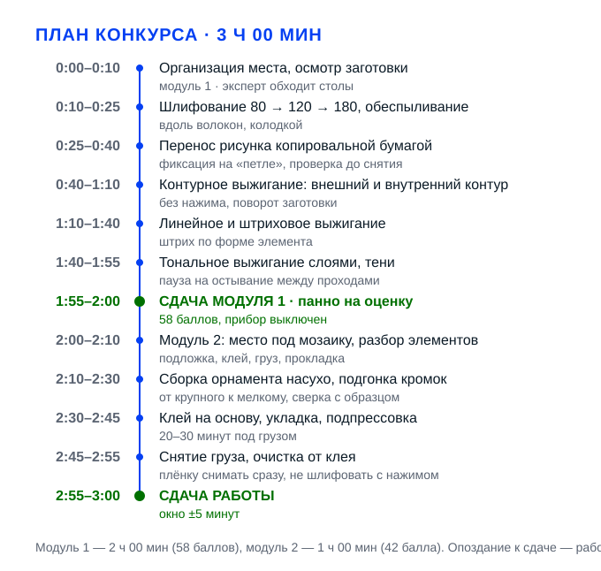
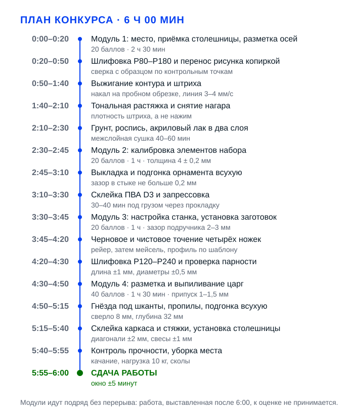
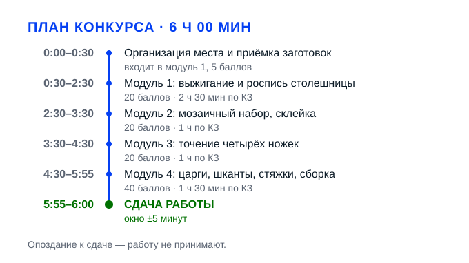

Художественная обработка дерева (Р)
Задания ниже — официальные файлы «Абилимпикс» (источник: abilympics-russia.ru), разложенные по категориям. Решения написаны по тексту задания, регламенту и критериям оценки; в них указано, что именно проверяет эксперт.
Школьник
14–16 лет, базовый уровень заданияВыдержка из официального конкурсного задания: страницы, относящиеся к категории «Школьник» (стр. 10–12 источника).
Пошаговое решение
Задание для школьников — декоративное панно из дерева на стену, и весь конкурс укладывается в три часа: два часа на выжигание (58 баллов) и час на мозаику (42 балла). Работа идёт на одной заготовке, поэтому второй модуль опирается на первый: мозаичный набор ставится на поле, которое уже проработано выжиганием, и оценивают их вместе. Баллы расписаны по критериям мелко и почти все объективно — организация места, соответствие образцу, наличие изображения, три техники выжигания (штриховая, линейная с контурной и тональная), техпроцесс, качество, аккуратность переноса, отсутствие повреждений, качество и надёжность склейки, законченность; субъективных всего 6 баллов из 100 — по 3 за эстетику в каждом модуле. Тридцать процентов задания регионального модуля отдано на выбор породы дерева и материалов мозаики, и этот выбор нужно сделать осознанно в первые минуты, а не менять по ходу. Решают исход три вещи: тонкая карандашная линия, перенесённая через копирку без сдвигов, контур, проложенный раньше тона, и клей, нанесённый на основу тонким слоем под распределённый груз.

Задача 1. Организовать рабочее место и подготовить заготовку панноМодуль 1 · до 15 баллов
Первый модуль начинается не с выжигания, а с подготовки: за два часа нужно успеть и место собрать, и заготовку довести до состояния, пригодного для тонкой линии. Здесь лежат три критерия по пять баллов — организация рабочего места, соблюдение технологического процесса и отсутствие повреждений на поверхности, — и все три набираются до первого касания наконечником. Заготовку шлифуют до 180-го зерна, прибор проверяют на обрезке той же породы, инструмент раскладывают по зонам, чтобы не тянуться через выжженное поле.
Действие 1.1. Разложить инструмент и осмотреть площадку
Шаг 1.1.1
Стол освобождаем полностью: убираем всё, что не относится к заданию, — сумки, телефон, лишние заготовки, — и раскладываем работу по трём зонам. Слева от себя кладём панно на подкладной лист, по центру оставляем свободное поле размером не меньше самого панно, справа в один ряд выстраиваем инструмент: выжигатель, наждачную бумагу зерном 80, 120 и 180, копировальную бумагу, карандаш, ластик, мягкую кисть. Сзади, чтобы не тянуться через работу, ставим папку с рисунком и обрезки дерева для проб.
Организация рабочего места — первый критерий модуля, 5 баллов, и он проверяется до того, как вы коснётесь заготовки. Смысл не в аккуратности ради аккуратности: на панно, которое целиком лежит перед вами, любое лишнее движение через уже выжженное поле — это риск задеть наконечником готовую линию, а поиск карандаша в куче инструмента съедает минуты, которых в модуле ровно 120.
Пройдите взглядом от левого края стола к правому: на пути не должно быть ничего, что придётся переставлять во время работы. Инструмент лежит рукояткой к вам, наждачная бумага сложена по номерам, а не россыпью, свободное поле вокруг панно — не меньше ладони с каждой стороны. Шнур не должен пересекать поле панно: он цепляет руку.
Самая частая ошибка — оставить инструмент «пока тут» и разложить его после старта: первые пять минут уходят на перекладывание, а эксперт уже прошёл и отметил, что место не организовано. Вторая — поставить выжигатель справа вплотную к панно: шнур тянет прибор, и наконечник чиркает по заготовке при каждом повороте.
Эксперт обходит рабочие места в первые минуты модуля и смотрит три вещи: свободна ли поверхность, лежит ли инструмент по назначению и нет ли на столе того, что может повредить заготовку. Если на столе лежит телефон или наушники, это фиксируется как нарушение организации.
Шаг 1.1.2
Выжигатель ставим справа, на сухую подставку, и проверяем то, что видно без включения: вилку, шнур по всей длине, отсутствие перегибов у основания, исправность регулятора и надёжность посадки наконечника в держателе. Наконечник затягиваем винтом так, чтобы игла не проворачивалась пальцем, но и не была перетянута до деформации витка. Рядом кладём керамическую плитку или металлическую пластину — на неё вы будете класть горячий прибор, а не на дерево.
Критерий «Соблюдение технологического процесса изготовления изделия» стоит 5 баллов и начинается с исправного инструмента: прибор с плохим контактом греет рывками, и линия получается то бледной, то прожжённой. Перетянутый винт крепления ломает нихромовую спираль — замена займёт время модуля, а новый наконечник ещё нужно прогреть и заново подобрать режим под породу.
Покачайте наконечник пальцем в держателе — люфта быть не должно. Проведите ногтем по витку: он целый, без трещин и нагара. Регулятор поворачивается с ощутимым шагом, а не болтается в гнезде. Вилка сидит в розетке плотно, без искры и люфта.
Типичная ошибка — включить прибор и сразу начать работу, не проверив шнур: на площадках приборы стоят рядом с заготовками, и перетёртый шнур — это не только потеря баллов, но и прямое нарушение охраны труда. Вторая — положить горячий прибор на заготовку «на секунду»: остаётся тёмное пятно, которое уже не убрать без перешлифовки всего поля.
Эксперт смотрит на исправность инструмента и на то, куда участник кладёт горячий наконечник: подставка должна использоваться с первой минуты, а не после замечания. Отдельно отмечается, пользуется ли участник подставкой или кладёт прибор на столешницу.
Шаг 1.1.3
Лампу ставим слева и чуть сверху, чтобы тень от руки не падала на рабочую линию, а косой свет выявлял риски и будущий рельеф. Проверяем, что окно или вытяжка дают приток воздуха: дым от выжигания должен уходить в сторону, а не стоять над панно. Рядом с рабочим местом оставляем влажную тряпку в лотке и небольшую ёмкость для обрезков и стружки — они понадобятся и в модуле выжигания, и в модуле мозаики.
Освещение прямо влияет на критерий «Качество выжигания»: при плоском верхнем свете тонкая линия на светлой липе почти не читается, и участник не видит, где недожёг. Дым и мелкая пыль от нагара раздражают глаза и мешают дышать, а на конкурсе это ещё и вопрос техники безопасности, который фиксируется отдельно.
Положите на заготовку линейку: тень от неё должна быть мягкой и смещённой вправо-вниз, а не лежать прямо под ней. Поднесите ладонь к вытяжке — воздух должен ощутимо тянуть, а не стоять. Тень от собственной руки не должна попадать в зону, где вы будете вести контур.
Свет сзади или сверху — самая недооценённая ошибка: линии кажутся ровными, а через двадцать минут, когда повернётесь к панно под другим углом, видно, что контур «гуляет». Вторая — работать без проветривания: к концу первого часа глаза слезятся, и точность падает именно там, где нужна тональная проработка.
Эксперт отмечает, пользуется ли участник местным освещением и следит ли за воздухом; при жалобах на самочувствие это первое, что проверяют. Если участник щурится или отодвигает панно к краю стола, чтобы поймать свет, это видно.
Действие 1.2. Подготовить поверхность заготовки
Шаг 1.2.1
Заготовку берём за кромки, а не за лицевую сторону, и осматриваем при косом свете: смотрим породу, направление волокон, наличие сучков, смоляных кармашков, трещин и следов прежней обработки. Переворачиваем и проверяем, не поведена ли пластина винтом: прикладываем ребро линейки по двум диагоналям и смотрим, есть ли просвет. Габариты сверяем с заданием, а дефектные места сразу отмечаем карандашом на обратной стороне.
Порода определяет и режим выжигания, и вид отделки: липа и ольха дают ровный светлый тон и прощают небольшую передержку, берёза плотнее и темнеет быстрее, а смолистые участки хвойных при нагреве выделяют смолу и пачкают наконечник. Критерий «Элементы композиции по размеру и форме соответствуют образцу» — 5 баллов, и он снимается, если панно изначально выпилено не по размеру или имеет трещину на лицевой стороне.
Проведите ладонью по лицевой стороне: она должна быть сухой и однородной на ощупь, без «ступенек» от строгания. Просвет между линейкой и пластиной по диагонали — не больше полумиллиметра, иначе заготовка выгнута и при склейке мозаики даст щель. Кромки ровные, без скола: скол на кромке пойдёт под мозаичный набор и даст щель.
Взять первую попавшуюся заготовку, не посмотрев на волокна: рисунок ложится поперёк волокон, наконечник цепляется за ворс, и линия получается рваной. Вторая ошибка — начать работу на заготовке с сучком в центре композиции: сучок выжигается темнее и с «искрой», а исправить это на готовом панно невозможно.
Эксперт в начале модуля смотрит, осмотрел ли участник заготовку до разметки: панно с трещиной или сколом на кромке, о котором не сказали сразу, оценивается как брак работы, а не материала. Он смотрит и на то, положил ли участник заготовку лицевой стороной вверх и не трогает ли её руками.
Шаг 1.2.2
Шлифуем вдоль волокон, а не поперёк и не кругами: сначала зерном 80 на деревянной колодке, потом 120 и в конце 180. Колодку ведём всей плоскостью, с лёгким нажимом, длинными ходами от кромки до кромки, снимая за проход тонкий слой по всей площади. Особое внимание — торцам и кромкам: там ворс поднимается сильнее, и именно кромка потом даёт «махру» под мозаичный набор.
Поверхность после 180-го зерна — это база сразу для двух критериев: «Отсутствие повреждений на поверхности» и «Аккуратность перенесённого изображения», по 5 баллов каждый. На неотшлифованной поверхности карандашная линия ложится по ворсу и расплывается, а наконечник идёт рывками — тонкая линия превращается в пунктир.
Проведите по пластине тыльной стороной ладони — она должна скользить гладко, без зацепок. Посмотрите на поверхность под углом к лампе: риски от 180-го зерна видны как равномерная мелкая сетка, отдельных глубоких царапин от крупного зерна быть не должно. Проверьте кромку ногтем: заусенцев быть не должно, иначе шпон не ляжет к ней вплотную.
Начать сразу с 120-го или 180-го зерна, пропустив 80-й: старые риски от строгания останутся, и после выжигания проявятся как светлые полосы поперёк рисунка. Вторая ошибка — шлифовать поперёк волокон: поднимается ворс, поверхность становится ворсистой, и копировальная бумага при обводке рвётся.
Эксперт проверяет поверхность до начала выжигания и после него: если риски видны на готовом панно, балл за отсутствие повреждений снижается. Если участник шлифует «на глаз», без смены зерна, это видно по рискам разной глубины.
Шаг 1.2.3
Пыль не смахиваем ладонью — она втирается в поры и потом даёт грязные разводы под копирку. Берём мягкую кисть и сметаем пыль по направлению волокон к кромке, затем проходим слегка влажной, хорошо отжатой тряпкой и даём поверхности высохнуть две-три минуты. После высыхания ворс приподнимается, поэтому делаем один короткий проход 240-м зерном и снова сметаем пыль кистью.
Пыль и поднятый ворс — главная причина того, что перенесённая линия получается двойной и «лохматой»: карандаш продавливает копирку неравномерно, и на дереве остаётся не контур, а серое облако. Критерий «Аккуратность перенесённого изображения» оценивается именно по чёткости линии, а не по старательности обводки.
Проведите по поверхности белой бумажной салфеткой: на ней не должно остаться серого следа. Посмотрите на пластину под углом — ворс лежит, поверхность выглядит матовой и однотонной, без блеска от затёртых участков. Тряпка после протирки должна остаться светлой, без серого налёта.
Протереть заготовку мокрой тряпкой и сразу начать обводку: влажное дерево мягче, копирка продавливается глубже, и линия получается жирной, с грязными краями. Вторая ошибка — оставить пыль в порах: она забьётся в выжженные бороздки, и панно будет выглядеть серым.
Эксперт смотрит на чистоту поверхности перед переносом: следы пыли и разводов на светлой древесине видны сразу и трактуются как небрежность подготовки. Отмечается и то, сметает ли участник пыль кистью или сдувает её — второе на поверхности оставляет следы.
Действие 1.3. Настроить выжигательный прибор
Шаг 1.3.1
Наконечник подбираем под задачу: для контура — тонкая игла с косым срезом, для тональной проработки — короткий конус. Вставляем его в держатель до упора, затягиваем винт и проверяем форму жала: косой срез должен смотреть в сторону движения, тогда линия идёт ровно и не «зарывается». Прогреваем прибор на холостом ходу минуту и пробуем на обрезке той же породы, что и панно.
Форма жала определяет, какая линия получится: тупой или обломанный кончик даёт широкий след, который невозможно выдать за контурную линию, а чрезмерно тонкая игла при малейшей задержке проваливается в дерево. Критерии «Соблюдение технологии линейного и контурного выжигания» и «Качество выжигания» вместе стоят 10 баллов, и оба начинаются с правильно установленного наконечника.
На обрезке проведите три линии с разной скоростью: все три должны быть одинаковой ширины и ровного коричневого цвета, без тёмных точек в местах остановки. Если цвет уходит в чёрный — жарко, если в рыжий — холодно. Проверьте, что жало не качается в держателе при нажатии на обрезок.
Работать обломанным наконечником «пока греется»: линия получается широкой и с заусенцами, а исправить её можно только шлифовкой, которая стирает соседние элементы. Вторая ошибка — не затянуть винт: наконечник проворачивается под рукой, и линия меняет ширину на каждом сантиметре.
Эксперт смотрит на пробные штрихи и на то, меняет ли участник наконечник под разные техники или пытается всё сделать одной иглой. Он смотрит, есть ли у участника запасной наконечник и умеет ли он менять его без остановки работы.
Шаг 1.3.2
Режим подбираем не по цифре на регуляторе, а по пробе: на обрезке ставим среднее положение, ведём линию со скоростью примерно сантиметр в секунду и смотрим цвет. Для липы и ольхи обычно хватает чуть ниже среднего, для берёзы и дуба — выше, потому что плотная древесина отводит тепло быстрее. Найденное положение отмечаем маркером на корпусе, чтобы не искать его заново после каждой паузы.
Один и тот же регулятор на разных породах даёт разный результат: то, что на липе выглядит как ровный контур, на берёзе превращается в прожжённую канавку. Критерий «Соблюдение технологии тонального выжигания» на 5 баллов оценивает именно управление жаром: тон должен набираться слоями, а не одним перегревом.
Пробная линия одинаковая по всей длине, края чистые, без наплыва смолы и без светлого «ореола» вокруг. Поднесите палец к линии через секунду: она тёплая, но не обжигает — значит, жар подобран без запаса. Отметьте маркером положение, при котором линия ровная, — это и есть ваш рабочий режим.
Выкрутить регулятор на максимум, чтобы «быстрее шло»: наконечник перегревается, линия чернеет, а на поверхности остаются прожжённые ямки, которые не сошлифовываются без потери рельефа. Обратная ошибка — работать на минимуме: линия бледная, приходится вести её дважды, и стык двух проходов виден как утолщение.
Эксперт наблюдает за первой минутой выжигания: если участник сразу начинает с сильного жара и «дожигает» тон в один проход, это фиксируется как нарушение технологии. Отдельно фиксируется, подбирает ли участник режим на пробе или работает «на глаз».
Шаг 1.3.3
Под рабочую руку ставим упор — деревянный брусок или штативную подставку высотой около десяти сантиметров, чтобы кисть лежала, а не висела в воздухе. Рядом кладём пинцет для снятия нагара, небольшую металлическую пластину для чистки жала и мягкую кисть. Обрезки для проб складываем отдельной стопкой, чтобы не искать их по столу в середине работы. Высоту упора подбираем так, чтобы кисть лежала свободно, а плечо не поднималось.
Выжигание — работа с точностью до десятых долей миллиметра, и любая дрожь в руке превращается в «волну» на линии. Упор снимает нагрузку с плеча и позволяет вести длинную линию за один проход, а чистое жало — это ровный жар: нагар работает как теплоизолятор, и линия начинает «плыть» по цвету.
Положите кисть на упор и проведите в воздухе линию над панно: предплечье должно лежать, двигаться только кисть. Пинцет и пластина под рукой, а не в другом конце стола. Упор не должен закрывать обзор линии: проверьте, видно ли место, где ведёте контур.
Работать на весу: уже через десять минут кисть устаёт, и линия начинает «гулять» именно на длинных участках — там, где ошибка заметнее всего. Вторая ошибка — чистить жало о заготовку: на ней остаются тёмные полосы нагара.
Эксперт оценивает эргономику места как часть организации: наличие упора и подставки под горячий прибор видно сразу. Наличие упора и подставки под горячий прибор он относит к культуре рабочего места.
Задача 2. Перенести рисунок на заготовкуМодуль 1 · до 10 баллов
Перенос рисунка — самый недооценённый этап: он занимает минут пятнадцать, а определяет две оценки по пять баллов — соответствие рисунку и аккуратность переноса. Работа идёт карандашом средней твёрдости через копировальную бумагу, с фиксацией листа на «петле», чтобы можно было приподнять его и проверить результат, не сбив положение. Линия должна быть тонкой, читаемой и не продавленной: выжигатель ведут рядом с ней, а не по ней, и толщина карандаша задаёт точность будущего контура.
Действие 2.1. Подготовить рисунок и материалы
Шаг 2.1.1
Берём рисунок из задания и сверяем его с полем панно: измеряем габариты изображения линейкой, прикидываем, сколько остаётся на поля, и проверяем, что композиция не «упирается» в кромку. Ориентацию выбираем по волокнам: длинные линии композиции лучше вести вдоль волокон, поперёк наконечник идёт с сопротивлением. Если рисунок больше поля, уменьшаем его копированием, а не «на глаз».
Критерий «Элементы композиции по размеру и форме соответствуют образцу» — 5 баллов, и первый шаг к нему — точный масштаб: растянутое или сжатое изображение считается несоответствием образцу, даже если выжжено идеально. Поля нужны ещё и технологически: по кромке панно идёт шлифовка и мозаичный набор, и линия, подошедшая к самому краю, будет стёрта.
Приложите рисунок к панно и измерьте просветы до кромок с четырёх сторон: они должны быть примерно равны и не меньше двух-трёх сантиметров. Проверьте, что главные оси композиции совпадают с осями панно, а не идут под углом. Мелкие детали не должны быть мельче двух миллиметров: такую линию невозможно выжечь чисто.
Наклеить рисунок «как встал», без центрирования: композиция уезжает в угол, и потом её приходится сдвигать уже вместе с выжженными линиями. Вторая ошибка — уменьшить рисунок «примерно»: пропорции нарушаются, круг становится овалом, и эксперт это видит.
Эксперт прикладывает образец к готовому панно и смотрит совпадение по габаритам и по положению главных элементов. Он также сверяет, не перевёрнут ли рисунок относительно волокон и кромок.
Шаг 2.1.2
Копировальную бумагу берём куском чуть больше рисунка и проверяем, что рабочая сторона не засалена и не имеет складок: проведите ногтем по краю — след должен быть чётким и тёмным. Кладём её красящим слоем вниз, к дереву, и следим, чтобы между листом и заготовкой не попали стружка и пыль. Старую, много раз использованную копирку не берём: она даёт бледный след, который приходится обводить дважды.
Аккуратность переноса — 5 баллов, и половина этой оценки зависит от копирки, а не от руки. Жирная или мятая копирка даёт двойные линии и грязные пятна, которые потом видны на светлой древесине как серые разводы, а слабая заставляет давить сильнее, и карандаш продавливает волокна.
Проведите копиркой по обрезку: линия должна быть тонкой, ровной и хорошо читаемой, без «двоения». На самой копирке не должно быть пятен краски, которые отпечатаются на панно. Копирка не должна выступать за рисунок больше чем на сантиметр: иначе края испачкают поле.
Положить копирку красящей стороной вверх — переноса не будет вообще, и потерянное время придётся нагонять в выжигании. Вторая ошибка — использовать копирку с пятнами: на панно остаются тёмные отпечатки, которые невозможно убрать ластиком, не подняв ворс.
Эксперт смотрит на чистоту поля после снятия копирки: пятна и разводы трактуются как повреждение поверхности. Если копирка мятая или рваная, это видно по качеству линии ещё до выжигания.
Шаг 2.1.3
Карандаш берём средней твёрдости, HB или B, и затачиваем остро, но без длинного «игла»: слишком тонкий грифель рвёт копирку, слишком мягкий даёт жирную линию, которая под наконечником расплывается. Ластик держим под рукой — мягкий, без абразива, чтобы правка не поднимала ворс. Скотч для фиксации нарезаем заранее на полоски длиной сантиметра по четыре. Второй карандаш той же твёрдости держим в запасе: грифель ломается в самый неподходящий момент.
Твёрдость грифеля напрямую связана с критерием «Аккуратность перенесённого изображения»: линия должна быть видна, но не жирной, иначе выжигатель идёт не по линии, а рядом с ней, и контур «двоится». Мягкий карандаш на шлифованной поверхности ещё и размазывается под ладонью, и панно приобретает серый тон ещё до выжигания.
Проведите карандашом по обрезку через копирку: линия тонкая, читаемая, не продавливает дерево. Грифель не крошится, а сам карандаш не оставляет блеска на поверхности. На срезе грифель должен быть длиной около пяти миллиметров, не больше.
Обводить твёрдым 2H или 3H: копирка не продавливается, линии получаются прерывистыми, и участник начинает давить — на дереве остаются вмятины, которые не убираются. Вторая ошибка — точить карандаш «на иглу»: грифель ломается в середине обводки.
Эксперт смотрит на характер линии: ровная тонкая линия говорит о правильном инструменте, «жирная» — о мягком карандаше и избыточном давлении. Отмечается и то, лежит ли карандаш на столе, а не за ухом или в кармане.
Действие 2.2. Закрепить рисунок и обвести контур
Шаг 2.2.1
Перед фиксацией рисунка размечаем поле: проводим карандашом по линейке две диагонали и находим центр, затем откладываем от центра половину габарита композиции по горизонтали и вертикали. Тонкие осевые линии наносим еле заметно, чтобы потом стереть их ластиком. Положение проверяем угольником относительно кромок — они на панно служат базой. От центра откладываем по половине габарита, а не весь размер: так сразу видно, села ли композиция ровно.
Симметрия и центрирование входят в критерий «Элементы композиции по размеру и форме соответствуют образцу» и в субъективное «Эстетическое восприятие композиции» на 3 балла. Сдвиг даже на сантиметр читается глазом сразу, а исправлять его на готовом панно нечем: выжечь заново нельзя, снять линию можно только шлифовкой.
Проверьте четыре расстояния от крайних точек композиции до кромок: попарно они должны совпадать с точностью до двух-трёх миллиметров. Осевые линии пересекаются в центре поля, а не смещены. Диагонали прямоугольного панно должны быть равны между собой.
Размечать «на глаз» и надеяться, что кривизна не видна: на панно с ровной прямоугольной кромкой любой перекос заметен, потому что глазу есть с чем сравнивать. Вторая ошибка — рисовать оси жирно: их следы остаются на светлом поле и портят вид.
Эксперт прикладывает линейку к кромке и смотрит, насколько композиция параллельна краям. Его интересует, размечено ли поле вообще или рисунок приложен без осей.
Шаг 2.2.2
Кладём копирку красящим слоем к дереву, сверху — рисунок лицевой стороной вверх, и совмещаем его с размеченными осями. Фиксируем малярным скотчем только по верхней кромке, в двух точках, чтобы лист можно было приподнять и проверить перенос, не сбивая положение. Нижнюю кромку не приклеиваем: она должна лежать свободно, иначе при обводке лист «тянет» и линии уезжают.
Фиксация на «петле» — приём, который экономит весь модуль: если приклеить лист со всех сторон, проверить перенос можно только сняв его, а снять и вернуть точно на место почти невозможно. Критерий «Соответствие рисунку (наличие изображения на изделии)» на 5 баллов требует, чтобы изображение было полным и на своём месте.
Приподнимите лист за нижний край: он должен подниматься вместе с копиркой, не смещаясь по осям. Отпустите — возвращается точно в размеченное положение. Скотч держится на кромке, а не на поле панно: следы клея на лицевой стороне недопустимы.
Приклеить рисунок скотчем по всем четырём сторонам: при обводке бумага натягивается, между проходами появляются складки, и часть линий переносится со сдвигом. Вторая ошибка — использовать канцелярский скотч, который оставляет клей на древесине.
Эксперт смотрит, проверяет ли участник перенос в процессе или обводит «слепо» до конца. Он смотрит, приподнимает ли участник лист в процессе или обводит, не проверяя.
Шаг 2.2.3
Обводим рисунок средней линией, не нажимая до продавливания: сначала главные оси и внешний контур, потом внутренние детали, и только в конце — мелкие элементы вроде прожилок листа или перьев. Левую руку держим на свободной части листа, чтобы он не ездил, а карандаш ведём короткими участками по два-три сантиметра, поворачивая не руку, а лист. Мелкие детали обводим последними, когда крупные уже задали масштаб.
Порядок обводки — не формальность: если начать с мелочей, крупные линии потом приходится «подгонять» под них, и пропорции уезжают. Критерий «Соответствие рисунку» оценивает наличие всех элементов изображения, а «Аккуратность перенесённого изображения» — то, насколько линия читается как контур, а не как двойной след.
Пролистайте рисунок пальцем: все линии должны быть пройдены, без пропусков на стыках деталей. Приподнимите лист в одном углу и посмотрите на дерево — контур читается целиком, без «разрывов». Проверьте, что на изгибах линия не «срезана» и повторяет форму рисунка.
Вести карандаш одним длинным движением через весь лист: на изгибах рука уходит с линии, и контур получается смазанным. Вторая ошибка — обводить, положив ладонь на рисунок: лист сдвигается под рукой, и вторая половина композиции переносится со смещением.
Эксперт наблюдает за техникой обводки: поворот листа вместо поворота руки — признак поставленной техники. Отмечается и нажим: вмятины от карандаша на светлой древесине видны после выжигания.
Действие 2.3. Проверить и зачистить перенесённый рисунок
Шаг 2.3.1
Приподнимаем лист за нижний край и смотрим на дерево при косом свете: проверяем, что все линии прошли, нет «двойных» участков и разрывов. Пропущенные фрагменты допереводим сразу, пока лист ещё совмещён по осям, а стёртые — обводим повторно тем же карандашом. Только после этого снимаем скотч и убираем копирку. Свет держим под углом к поверхности: при прямом свете бледные участки не видны.
Проверка «на петле» — единственный момент, когда ошибку переноса можно исправить бесплатно. После снятия копирки восстановить пропущенную линию можно только по памяти, и она почти всегда встаёт на полмиллиметра в сторону, а это уже заметно на контуре. Критерий «Соответствие рисунку» на 5 баллов ставится по полноте изображения.
Считаете элементы: их столько же, сколько на образце, каждый на своём месте. Нет участков, где линия «раздвоилась», — это признак сдвига листа в процессе обводки. Проверьте стыки деталей: там чаще всего теряется один-два миллиметра линии.
Снять копирку сразу после обводки, не проверив: пропущенный фрагмент обнаруживается уже во время выжигания, когда исправлять нечем. Вторая ошибка — допереводить пропуск, придерживая лист рукой: он сдвигается на миллиметр, и линия не совпадает с соседней.
Эксперт смотрит на полноту перенесённого рисунка до начала выжигания, если подходит к столу в этот момент. Он смотрит и на количество исправлений ластиком: их не должно быть много.
Шаг 2.3.2
Снимаем скотч, убираем рисунок и копирку, а с поверхности убираем всё, что осталось: крошки грифеля, пыль, следы пальцев. Проходим мягкой кистью по направлению волокон, а жирные пятна от копирки аккуратно снимаем мягким ластиком, стараясь не тереть соседние линии. Лишние осевые линии стираем сразу, пока они не впечатались под нажимом. Ластик ведём в одном направлении, а не туда-сюда: от возвратных движений ворс поднимается сильнее.
Критерий «Отсутствие повреждений на поверхности» — 5 баллов, и следы копирки, затёртые пятна и остатки осей читаются как повреждения. Ластик, которым трут слишком сильно, поднимает ворс, и на этом месте выжигание ложится неровно, с «махрой» по краю линии.
Посмотрите на панно под углом к свету: поверхность однотонная, без серых пятен и блестящих затёртых участков. Осевых линий не видно, а контур рисунка читается полностью. Проверьте кромки: на них копирка оставляет самые заметные тёмные полосы.
Тереть копирочные пятна жёстким ластиком: вместе с краской снимается верхний слой волокон, и после выжигания там будет видно светлое пятно. Вторая ошибка — оставить оси: они попадут в композицию и будут выглядеть как случайные линии.
Эксперт осматривает поле перед выжиганием: чистота поверхности — часть оценки аккуратности. Он обращает внимание на ворс: если поверхность «поднялась», выжигание ляжет неровно.
Шаг 2.3.3
Проверяем линии на читаемость: они должны быть тонкими, одинаковой толщины и видны при рабочем освещении, но не продавленными в дерево. Если линия бледная, обводим её ещё раз тем же карандашом, не меняя нажима; если жирная и размазанная — аккуратно снимаем излишек ластиком и обводим заново тонко. Толщина линии должна быть меньше будущего выжженного контура, иначе её края будут выглядеть как грязь.
Выжигатель ведут не по карандашу, а рядом с ним: линия служит ориентиром, и её толщина задаёт точность. Жирная линия заставляет вести наконечник по её краю, и контур получается шире задуманного — это сразу видно в критериях «Соблюдение технологии линейного и контурного выжигания» и «Качество выжигания», по 5 баллов каждый.
Отойдите от панно на метр и посмотрите на рисунок целиком: он должен читаться как рисунок, а не как серое поле. При этом отдельные линии не должны сливаться в пятна. Проверьте линию на самом светлом участке древесины: там она видна хуже всего.
Обводить повторно «для надёжности» с сильным нажимом: линии утолщаются и продавливают волокна, а на месте нажима после выжигания появляется светлая канавка. Вторая ошибка — оставить бледные линии: в процессе работы часть из них потеряется под рукой.
Эксперт оценивает читаемость рисунка до выжигания и после: тонкая линия — признак понимания технологии. Он оценивает и то, не осталось ли на поле вспомогательных линий и меток.
Задача 3. Выполнить выжигание панноМодуль 1 · до 33 баллов
Основная и самая дорогая часть первого модуля: здесь лежат штриховое, линейное и контурное, а также тональное выжигание — три критерия по пять баллов, плюс качество выжигания, законченность композиции, соответствие элементов образцу и субъективная эстетика. Порядок жёсткий: сначала весь контур, потом линейная проработка внутри, и только затем тон, набранный слоями. На всё остаётся около восьмидесяти минут, поэтому работа идёт от общего к частному и без возвратов к уже пройденным зонам.
Действие 3.1. Проложить контур композиции
Шаг 3.1.1
До первого касания панно размечаем для себя зоны: где будет только контур, где линейная проработка, а где тональные пятна. Проходим по рисунку карандашом, отмечая лёгкими точками места будущих теней, и определяем направление штриха для каждого элемента — по форме листа, пера, лепестка. Порядок работы строим от общего к частному: сначала весь контур, потом линии внутри, потом тон.
Критерий «Соблюдение технологического процесса изготовления изделия» — 5 баллов, и он оценивает именно последовательность: контур, линии, тон. Если начать с тона, потом приходится обходить тёмные пятна контуром, и линия получается рваной. Планирование зон ещё и экономит время: в модуле 120 минут, и импровизация обычно съедает последние двадцать.
Проверьте, что у вас есть ответ на три вопроса по каждому элементу: чем он обводится, чем прорабатывается внутри и где темнеет. Если хотя бы по одному элементу ответа нет — решение ещё не принято. Убедитесь, что на каждый элемент у вас не больше двух техник: иначе время уйдёт.
Начинать сразу с самого выразительного элемента: на него уходит больше половины времени, а фон остаётся необработанным, и композиция выглядит незаконченной. Вторая ошибка — вести контур и тон одной иглой без смены режима.
Эксперт следит за последовательностью: контур раньше тона — признак продуманной работы. Его интересует, идёт ли работа по плану или участник перескакивает с элемента на элемент.
Шаг 3.1.2
Контур ведём по внешней границе композиции, начиная с длинной прямой или плавной линии и постепенно переходя к изгибам. Наконечник ставим почти вертикально, с лёгким наклоном по ходу движения, и ведём без нажима — жар делает работу сам. В местах поворота не задерживаем иглу, а чуть приподнимаем её и ставим заново: остановка на месте даёт тёмную точку, которая читается как клякса.
Внешний контур держит всю композицию и оценивается в критерии «Соблюдение технологии линейного и контурного выжигания» на 5 баллов. Ровная линия одинаковой ширины — признак контроля жара и скорости; прерывистая или с утолщениями говорит о том, что участник «дорисовывает» линию многократными проходами.
Отойдите на шаг: линия должна быть непрерывной, одинаковой по цвету и ширине, без тёмных сгустков на поворотах. Проведите пальцем вдоль неё — бороздка ровная, без провалов и наплывов. Проверьте контур на самом длинном участке: там ошибки видны лучше всего.
Давить на наконечник, чтобы линия была «виднее»: получается глубокая канавка с обугленными краями, которую невозможно выровнять. Вторая ошибка — вести линию на одном дыхании через поворот: на изгибе рука уходит, и линия «срезается».
Эксперт смотрит на контур в первую очередь: именно по нему видно, владеет ли участник прибором. Он смотрит на скорость ведения: рывками линия получается с утолщениями.
Шаг 3.1.3
Внутренние контуры ведём после внешнего, от крупных форм к мелким: сначала границы лепестков и листьев, потом прожилки и мелкие детали. Мелкие замкнутые формы обводим, начиная с самого удобного участка и замыкая линию в той же точке, где начали, — тогда стык незаметен. Между соседними линиями оставляем просвет не меньше миллиметра, иначе на тонкой древесине они сольются в одно пятно.
Внутренние контуры отвечают за читаемость композиции и оцениваются в критерии «Соответствие рисунку (наличие изображения на изделии)» — 5 баллов: если деталь «залилась» в общее пятно, изображение считается неполным. Просвет между линиями нужен ещё и технологически: тонкая перемычка из дерева между двумя выжженными бороздками легко скалывается.
Проверьте просветы между линиями при косом освещении: они должны быть одинаковыми и не темнее самой древесины. Замкнутые формы читаются как отдельные элементы, а не как сплошное пятно. Мелкие формы с расстояния метра читаются отдельно, а не как сплошное пятно.
Вести линии вплотную друг к другу «чтобы было контрастнее»: перемычка обугливается и выкрашивается, остаётся сплошное тёмное пятно. Вторая ошибка — начинать и заканчивать линию в разных точках: на стыке видно утолщение.
Эксперт проверяет, различаются ли мелкие элементы композиции, или они слились в одно пятно. Он отмечает, не «залились» ли мелкие элементы в одно тёмное пятно.
Шаг 3.1.4
Проходим по всему контуру и проверяем три вещи: замкнутость, одинаковую ширину и отсутствие «хвостов» — коротких лишних продолжений за точкой поворота. Хвосты снимаются только шлифовкой, поэтому лучше не допускать их: поднимайте иглу до того, как рука начнёт тормозить. Если линия где-то получилась бледной, добавьте один короткий проход, а не три длинных.
Замкнутый контур одинаковой ширины — база для тональной проработки: по нему вы будете ориентироваться, где заканчивается элемент. Критерий «Качество выжигания» на 5 баллов снимается именно за «хвосты» и утолщения, потому что они видны на светлом фоне как случайные пятна.
Проведите пальцем по линии: она не должна «спотыкаться». Посмотрите на контур под углом к свету — ширина одинаковая по всей длине, цвет ровный, без чёрных точек. Проверьте стык начала и конца каждой замкнутой формы: он не должен быть заметен.
Оставлять хвосты «потом сошлифую»: шлифовка снимает и соседние линии, а на их месте остаются светлые полосы. Вторая ошибка — «подкрашивать» бледный участок многократными проходами: он становится темнее остального контура.
Эксперт осматривает контур целиком, а не отдельные участки: важно единообразие. Он смотрит и на цвет: контур должен быть одного тона, без светлых и чёрных участков.
Действие 3.2. Проработать линии и штрих
Шаг 3.2.1
Линейное выжигание — это длинные непрерывные линии внутри композиции: стебли, рамки, границы крупных форм. Кисть кладём на упор, локоть прижимаем к столу, линию ведём от себя на длину выдоха, а на вдохе делаем паузу, приподняв иглу. Заготовку поворачиваем так, чтобы линия всегда шла в удобном для кисти направлении, — поворот панно дешевле, чем исправление кривой линии.
Технология линейного выжигания выделена в отдельный критерий на 5 баллов: оценивается ровность и непрерывность. Линия, проведённая «по кусочкам», даже при хорошей стыковке выглядит как пунктир — на светлой древесине видны места остановок. Поворот заготовки вместо поворота руки — базовый приём, который отличает уверенную работу.
Линия ровная по всей длине, толщина не меняется на стыках пауз. Приложите к ней линейку: отклонение от прямой не больше миллиметра на десятисантиметровом участке. Проверьте линию на просвет, приложив панно к лампе: утоньшения видны сразу.
Вести линию, вытянув руку и поворачивая кисть на весу: к концу линии рука устаёт, и она уходит в сторону. Вторая ошибка — останавливаться, не подняв иглу: в точке паузы остаётся тёмное пятно, и линия выглядит «проколотой».
Эксперт смотрит на длинные линии: они показывают, владеет ли участник приёмом упора и поворота заготовки. Он оценивает, держит ли участник ритм: паузы на вдохе не должны давать точек.
Шаг 3.2.2
Штрих — это короткий след длиной три-пять миллиметров, поставленный по форме элемента: на лепестке — от центра к краю, на пере — вдоль стержня. Иглу ставим, ведём короткий отрезок и снимаем, не задерживаясь; штрихи кладём с одинаковым интервалом, постепенно сгущая к тени. Направление штриха задаёт фактуру, поэтому его выбирают до начала работы, а не меняют по ходу.
Штриховое выжигание — отдельный критерий на 5 баллов, и в нём оценивают именно направление и равномерность: штрих «против формы» читается как грязь, даже если технически выполнен чисто. Плотность штриха управляет тоном, поэтому именно штрихом набирают полутон между светлым фоном и тёмным контуром.
Отойдите на метр: обработанный участок должен выглядеть как ровное пятно нужной плотности, а не как набор случайных чёрточек. Направление штрихов совпадает с формой элемента. Проверьте край зоны штриховки: он не должен обрываться резкой границей.
Класть штрихи поперёк формы, потому что так удобнее руке: фактура «ломается», и объём пропадает. Вторая ошибка — ставить штрихи с разным нажимом: пятно получается пятнистым, с тёмными и светлыми зонами.
Эксперт смотрит на направление штриха относительно формы элемента — это первое, что отличает работу с пониманием фактуры. Он смотрит, сгущается ли штрих к тени постепенно или зонами.
Шаг 3.2.3
Там, где штрих переходит в линию, сначала кладём линию, а потом подводим к ней штрихи, не заходя за её край. Стык делаем в один проход: доводим штрих до линии и снимаем иглу точно на ней, не перекрывая контур. Если штрих «перескочил», лишний след снимается только шлифовкой, поэтому ведите иглу чуть короче и добавляйте, если нужно. Длинные штрихи в стыке с линией не делаем: короткий штрих легче остановить точно на краю.
Стык штриха и линии — самое заметное место в работе: перекрытие даёт тёмную точку, недотяжка — светлый разрыв, и оба дефекта видны на светлом фоне. Критерии «Соблюдение технологии штрихового выжигания» и «Качество выжигания», по 5 баллов каждый, оценивают именно чистоту переходов.
Проверьте стыки, наведя свет лампы под острым углом: линия остаётся ровной, штрихи подходят к ней, не разрывая и не затемняя её. Тёмных точек на пересечениях нет. Пройдите три-четыре стыка подряд: качество должно быть одинаковым.
Подводить штрих «с запасом», чтобы наверняка достать до линии: на контуре появляется утолщение, и он выглядит как обведённый дважды. Вторая ошибка — оставлять зазор: элемент «отрывается» от контура. Оба дефекта видны на светлом фоне сразу, и снимаются баллы по двум критериям.
Эксперт осматривает именно переходы: по ним видно, контролирует ли участник наконечник. Отмечается аккуратность: подтёков и «паутинок» на стыках быть не должно.
Шаг 3.2.4
Проверяем набранную фактуру на расстоянии: отойдите на два-три шага и посмотрите, читается ли объём. Если участок выглядит плоским, добавьте штрихов в теневой части, а не по всей площади; если слишком тёмным — дальше не трогайте, тон набирается постепенно. Светлые места оставляем нетронутыми: убрать лишний тон с дерева невозможно. Проверку делаем при том свете, при котором работу будут смотреть: под лампой тон кажется темнее.
Критерий «Соблюдение технологии тонального выжигания» на 5 баллов строится на постепенном наборе тона: работа, где тени пережарены в один проход, читается как грубая. Фактура должна поддерживать форму, а не спорить с ней — это часть субъективного критерия «Эстетическое восприятие композиции» на 3 балла.
Прищурьтесь, глядя на панно: композиция должна читаться силуэтом, а тени — стоять на своих местах. Если при прищуривании всё сливается в одно тёмное пятно, тон перебран. Проверьте работу в перевёрнутом виде: так видны перекосы тона.
Догонять тон на уже тёмном участке: он чернеет и теряет фактуру, а исправить это нельзя — снимать нагар придётся шлифовкой, которая уберёт и штрих. Вторая ошибка — обрабатывать штрихом светлые участки «для единообразия»: композиция теряет контраст.
Эксперт отходит от панно на расстояние и оценивает общий тон; приближается только для проверки техники. Он сравнивает плотность штриха на симметричных элементах: она должна совпадать.
Действие 3.3. Набрать тон и зачистить поверхность
Шаг 3.3.1
Тон набираем слоями: первый проход — самый светлый, почти незаметный, второй — по теневой части, третий — только по самым глубоким местам. Между проходами даём дереву остыть десять-пятнадцать секунд, иначе нагар наслаивается рывком и получается чёрное пятно. Широкие тёмные зоны ведём не точкой, а боковой поверхностью жала, распределяя жар по площади.
Тональное выжигание — 5 баллов, и оценивается именно плавность переходов: ступенчатый тон, где видно границу между проходами, считается нарушением технологии. Слоистый набор даёт мягкую светотень, а попытка сделать тёмное сразу — прожог с обугленными краями, который невозможно исправить.
Посмотрите на тональный переход с расстояния: граница между светлым и тёмным должна быть размытой, без резкой линии. Цвет меняется от светло-коричневого к тёмно-коричневому, без чёрных участков. Проверьте самый тёмный участок: он должен оставаться коричневым, а не чёрным.
Сразу вести тёмный участок на полном жаре: древесина обугливается, поверхность становится рыхлой, и нагар осыпается при шлифовке. Вторая ошибка — не давать остыть между проходами: тепло накапливается, и тон уходит на ступень темнее задуманного.
Эксперт смотрит на плавность тональных переходов и на отсутствие прожогов. Он смотрит на границу тона: если она читается линией, набор был ступенчатым.
Шаг 3.3.2
Тени кладём с одной стороны, выбрав направление света один раз на всю композицию: если свет падает сверху слева, тень у каждого элемента будет справа снизу. Глубокие тени усиливаем в местах стыка форм — под лепестком, у основания стебля, — а на выпуклых частях оставляем светлое поле. Небольшой рефлекс — светлая полоска у самой границы тени — добавляет объём и делается тем, что участок просто не прожигается.
Единое направление света — то, что делает композицию цельной; разнобой в тенях читается как ошибка даже неспециалистом. Это работает на критерий «Законченность композиции» (5 баллов) и на субъективное «Эстетическое восприятие композиции» (3 балла), где оценивают именно целостность образа.
Закройте ладонью половину панно и посмотрите на другую: тени должны падать в одну сторону. Если хотя бы один элемент «освещён» с другой стороны, композиция распадается. Проверьте тени у мелких элементов: они должны быть слабее, чем у крупных.
Класть тень с той стороны, где удобнее вести руку: композиция начинает «спорить» сама с собой, и объём пропадает. Вторая ошибка — зачернить тень до чёрного: она перестаёт читаться как тень и выглядит дырой.
Эксперт оценивает целостность светотени — это одна из самых заметных вещей на панно. Он оценивает, поддерживает ли светотень форму или ложится поперёк неё.
Шаг 3.3.3
После выжигания по поверхности остаются крошки нагара и поднятый ворс: убираем их шлифованием зерном 240, а в тонких местах — 320, строго вдоль волокон и без нажима, чтобы не стереть линию. Между проходами сметаем пыль мягкой кистью, а не сдуваем — от дыхания на поверхности потом остаются следы. Тёмные крошки в глубине бороздок убираем кончиком кисти, смоченным водой и хорошо отжатым.
Критерий «Отсутствие повреждений на поверхности» — 5 баллов, и нагар, оставшийся на светлом поле, читается как грязь, а не как элемент композиции. Шлифование вдоль волокон не поднимает ворс, а поперёк — оставляет риски, которые после первого слоя отделки проявятся как светлые полосы.
Проведите по поверхности белой салфеткой: на ней не должно остаться тёмных следов. Под углом к свету поверхность однотонная, без светлых рисок и без блестящих затёртых пятен. Проверьте бороздки контура: в них не должно оставаться чёрных крошек.
Шлифовать поперёк волокон крупным зерном: риски снимают верхний слой вместе с частью линий, и контур становится бледным. Вторая ошибка — тереть сильно в одном месте: появляется вмятина, которая видна на светлом фоне.
Эксперт проводит пальцем по поверхности: шероховатость и нагар фиксируются как дефект отделки. Он смотрит на кромки: шлифовка «через край» скругляет их и видна на просвет.
Шаг 3.3.4
Осматриваем всю поверхность по зонам, а не целиком: делим панно на четыре части и каждую проверяем отдельно при косом свете. Ищем прожоги, ямки, царапины, следы пальцев и случайные точки, которых не должно быть в композиции. Найденное отмечаем мелом на обратной стороне и решаем сразу: убрать шлифовкой или оставить, если правка испортит больше, чем исправит.
Критерий «Отсутствие повреждений на поверхности» на 5 баллов проверяется именно так — осмотром под углом, при котором видны мельчайшие дефекты. Одиночная случайная точка в поле панно читается как небрежность и снимает балл за качество выжигания, даже если сама техника безупречна.
Наклоните панно к свету под углом примерно тридцать градусов и ведите взглядом по строкам, как по тексту. Все дефекты видны как тёмные или светлые точки на однотонном поле. Проверьте поле на просвет у лампы: тонкие царапины видны только так.
Осматривать панно только сверху, при прямом свете: половина дефектов не видна, а эксперт смотрит под углом. Вторая ошибка — пытаться зашлифовать глубокий прожог: вместо точки остаётся светлое пятно больше прежнего.
Эксперт осматривает поверхность под углом к свету — приём стандартный, и дефекты видны сразу. Он отмечает и однородность тона: пятна от пальцев читаются как грязь.
Действие 3.4. Проверить панно и сдать модуль
Шаг 3.4.1
Проходим по панно с перечнем критериев модуля: организация места, соответствие образцу, наличие изображения, штрих, линия и контур, тон, техпроцесс, качество, аккуратность переноса, отсутствие повреждений, законченность. По каждому пункту отвечаем себе одним предложением — что именно сделано. Если по какому-то пункту ответа нет, на него уходит оставшееся время, а не на доработку уже готового.
В модуле 58 баллов, и они распределены по двенадцати критериям: работа может быть красивой, но потерять баллы за незамкнутый контур или незаконченный фон. Чек-лист нужен не для отчёта, а чтобы найти слабое место до того, как его найдёт эксперт: «Законченность композиции» — это 5 баллов, которые снимаются за один необработанный угол.
По каждому из двенадцати критериев у вас есть конкретный ответ и место на панно, которое его подтверждает. Если хотя бы один ответ звучит как «вроде нормально» — это и есть слабое место. Проверьте, что фон проработан до кромок: пустые углы видны сразу.
Считать, что «и так красиво»: необработанный фон и незамкнутый контур видны эксперту сразу, а времени на исправление уже нет. Вторая ошибка — дорабатывать то, что уже сделано хорошо, вместо того, что пропущено.
Эксперт оценивает панно по тем же двенадцати критериям, и порядок обхода у него такой же. Он обходит панно по тем же двенадцати пунктам и ставит балл по каждому.
Шаг 3.4.2
К концу второго часа отключаем прибор, кладём его на подставку и даём остыть, панно снимаем со стола за кромки и ставим на отведённое место лицевой стороной к эксперту. Инструмент раскладываем на место, нагар со стола сметаем, обрезки убираем в ёмкость. Если до конца модуля осталось время, тратим его на осмотр, а не на новые проходы. Панно берём двумя руками за торцы, а не за лицевую сторону: следы пальцев на светлом фоне видны.
Порядок на столе в момент перехода между модулями фиксируется в критерии «Организация рабочего места» — 5 баллов, и он оценивается дважды: в каждом модуле отдельно. Остывший прибор на подставке — это ещё и требование безопасности: горячий наконечник, лежащий на столе, прожигает поверхность и оставляет запах, который мешает работать дальше.
Стол свободен, прибор на подставке и выключен, панно на своём месте и не касается ничего лишнего. На столе нет обрезков и пыли, а инструмент лежит так, как вы его разложили в начале. Проверьте, что рядом с панно нет ничего, что может на него упасть.
Оставить прибор включённым «на минутку»: за это время наконечник обгорает, а если его положить на дерево — остаётся прожог. Вторая ошибка — сдавать панно, не сняв пыль: на осмотре она видна как серый налёт.
Эксперт подходит к столу на сдаче модуля и фиксирует состояние места и готовность изделия. Он фиксирует и время: сдача модуля раньше срока не даёт преимущества, но и не вредит.
Задача 4. Собрать и склеить мозаичный орнамент на панноМодуль 2 · 42 балла
Второй модуль короче первого — час против двух, — но стоит 42 балла из 100, и почти все они объективные: организация места, соответствие элементов образцу, качество сборки, качество и надёжность склейки, отсутствие повреждений покрытия, соблюдение техпроцесса, законченность. Работа идёт в четыре приёма: разобрать и подогнать элементы, собрать орнамент насухо, склеить под грузом, очистить и сдать. Ошибка здесь почти необратима: переставить вклеенный элемент нельзя, а время на пересборку не предусмотрено.
Действие 4.1. Подготовить место и элементы мозаики
Шаг 4.1.1
Стол застилаем чистой бумагой или плёнкой: клей, попавший на столешницу, потом переносится на панно. Раскладываем инструмент: кисть для клея, ёмкость с ПВА, прижимную прокладку из плотной бумаги или тонкой фанеры, груз, пинцет, линейку, угольник, нож со сменным лезвием. Рядом ставим влажную тряпку — клей нужно снимать сразу, пока он не схватился. Груз подбираем заранее: стопка книг или струбцина, но не банка с клеем — она тяжёлая и скользкая.
Организация рабочего места — 5 баллов в модуле мозаики, и здесь она важнее, чем в первом: клей не прощает беспорядка. Плёнка и влажная тряпка — не украшение, а инструмент: капля ПВА, высохшая на лицевой стороне шпона, оставляет плёнку, которую приходится сошлифовывать вместе с верхним слоем дерева.
На столе есть всё, что нужно, и ничего лишнего; руки свободно дотягиваются до клея, кисти, прокладки и груза, не пересекая поле панно. Тряпка влажная, но не мокрая — с неё не должно капать. Проверьте, что груз лежит рядом, а не ищется по площадке в момент склейки.
Работать на голом столе: капли клея остаются на столешнице, а потом отпечатываются на обратной стороне панно и на руках. Вторая ошибка — держать открытую банку клея над работой: одно неловкое движение, и клей выливается на шпон.
Эксперт осматривает место перед началом модуля: чистая подложка и разложенный инструмент — часть оценки организации. Он смотрит, закрыт ли клей и не стоит ли он над полем панно.
Шаг 4.1.2
Элементы мозаики разбираем по номерам и породам: светлые — в одну сторону, тёмные — в другую, каждый ряд по порядку сборки. Проверяем кромки: они должны быть ровными, под прямым углом, без заусенцев и «махры», а толщина — одинаковой по всей пластине. Элементы с трещиной, сколом на лицевой стороне или с расслоением откладываем сразу и показываем эксперту.
Критерий «Элементы мозаичной композиции по размеру и форме соответствуют образцу» — 5 баллов, и он снимается за подрезанные «на глаз» пластины: зазор больше двух десятых миллиметра виден как тёмная щель на светлом фоне. Дефектный элемент, замеченный сразу, — вопрос к организаторам, а вклеенный — уже брак работы.
Приложите элементы друг к другу насухо: щели не должны просвечивать, кромки совпадают без ступеньки. Толщину проверьте ногтем на стыке — перепад не больше толщины волоса. Проверьте, что светлые и тёмные элементы не перемешаны в одной стопке.
Брать элементы как есть, не проверяя: один сколотый уголок портит весь орнамент, и убрать его после склейки можно только вырезав заново. Вторая ошибка — перемешать номера: сборка идёт наугад, и рисунок «плывёт».
Эксперт смотрит, разложены ли элементы по порядку и проверены ли они до склейки. Он отмечает, отложены ли дефектные элементы и сказано ли о них сразу.
Шаг 4.1.3
Если кромка неровная, подрезаем её ножом по металлической линейке одним движением, а не «покусывая»: шпон толщиной около шести десятых миллиметра режется легко, но рвётся при повторных проходах. После подрезки снимаем заусенец шлифовальной колодкой зерном 180, положив пластину на ровную подкладку. Подогнанные элементы сразу возвращаем на своё место в раскладке.
Качество сборки — 5 баллов, и оно начинается с кромки: щель в орнаменте появляется не от плохого клея, а от неподогнанных краёв. Рваная кромка при склейке поднимается над плоскостью, и её приходится сошлифовывать, а вместе с ней уходит и рисунок. Ровная кромка — это ещё и толщина: скошенный край при склейке даёт ступеньку, которую видно на свету.
Соберите два соседних элемента насухо и посмотрите на стык на просвет: света между ними быть не должно. Кромка ровная, без «бахромы», угол между кромкой и пластью — прямой. Проверьте подрезанную кромку на просвет: скола и «бахромы» быть не должно.
Подрезать шпон, держа его на весу: он прогибается, и кромка получается скошенной. Вторая ошибка — тянуть нож на себя несколько раз по одному месту: волокна рвутся, и край становится лохматым. Скошенная кромка потом видна как тёмный клин между элементами.
Эксперт проверяет стыки на просвет — это самый быстрый способ увидеть качество подгонки. Он смотрит на инструмент: нож со сменным лезвием и линейка, а не «на глаз».
Действие 4.2. Собрать орнамент насухо
Шаг 4.2.1
Сборку начинаем насухо, без клея: сначала выкладываем крупные элементы по осям композиции, проверяя симметрию линейкой от кромок, потом средние, и только затем заполняем фон мелкими. Каждый элемент ставим на своё место по рисунку, придерживая пинцетом, и не сдвигаем уже уложенные. Направление волокон на элементах должно совпадать с задуманным — это заметно на свету.
Сборка насухо — единственный способ увидеть композицию целиком до того, как клей схватится: после склейки переставить элемент нельзя, не повредив соседние. Критерий «Соблюдение технологического процесса сборки мозаичного орнамента» на 5 баллов прямо оценивает порядок: от крупного к мелкому, от осей к фону.
Отойдите и посмотрите на набор: орнамент читается, симметрия соблюдена, щелей больше двух десятых миллиметра нет. Проверьте линейкой расстояния от крайних элементов до кромок — они должны совпадать с образцом. Все элементы лежат лицевой стороной вверх, ни один не перевёрнут.
Начинать с мелких элементов фона: они «разъезжаются», и крупные формы потом некуда ставить. Вторая ошибка — выкладывать элементы, не сверяясь с образцом, «по памяти»: орнамент получается похожим, но не тем, и это снимает балл за соответствие.
Эксперт подходит в момент сборки и смотрит, сверяется ли участник с образцом. Он смотрит, держит ли участник раскладку по номерам или ищет элементы наугад.
Шаг 4.2.2
Фон заполняем мелкими элементами от края к центру, подрезая каждый по месту, если он не встаёт: зазор оставляем не больше двух десятых миллиметра, иначе после склейки появится тёмная полоса. Элементы ставятся так, чтобы волокна шли в одном направлении внутри одной зоны, — это даёт ровный тон. Последние элементы вставляем с лёгким натягом, но без заклинивания.
Качество сборки орнамента — 5 баллов, и фон — самая частая причина потери: именно там щели и «пляшущие» волокна видны лучше всего. Единое направление волокон в зоне — не эстетическая прихоть: при разном направлении шпон по-разному впитывает клей и после высыхания даёт пятна.
Проведите ладонью над набором, не касаясь: элементы лежат в одной плоскости, без «ступенек». На просвет между элементами не видно подложки, кроме технологических швов по рисунку. Проверьте углы набора: там щели появляются первыми.
Оставлять щели в расчёте «клей заполнит»: ПВА даёт усадку, и щель остаётся, только теперь она тёмная и заметная. Вторая ошибка — забивать элемент с силой: он вспучивается, и плоскость набора идёт волной.
Эксперт осматривает набор на просвет и под углом — щели и волны видны сразу. Он осматривает именно края: центр обычно собран аккуратно, а края — нет, и щель по краю заметнее.
Шаг 4.2.3
Проверяем геометрию насухо собранного набора: линейкой — расстояния до кромок и между осями, угольником — прямые углы, и на глаз — симметрию относительно центра. Если орнамент смещён, сдвигаем весь набор целиком, а не отдельные элементы, и снова проверяем. Разницу с образцом фиксируем для себя: где именно и на сколько. Разницу с образцом записываем на бумаге, а не держим в голове: правок будет несколько.
Критерий «Элементы мозаичной композиции по размеру и форме соответствуют образцу» — 5 баллов, и он проверяется приложением образца: сдвиг в сантиметр виден, а исправить его после склейки невозможно. Проверка до клея — последний момент, когда всё можно переложить без потерь.
Расстояния от крайних точек орнамента до кромок попарно совпадают с точностью до миллиметра, прямые углы сходятся по угольнику, а композиция читается симметричной. Проверьте симметрию, отойдя на два шага: вблизи перекос не читается.
Проверять «на глаз» и надеяться, что сойдёт: на панно с ровными кромками перекос заметен, потому что есть база для сравнения. Вторая ошибка — двигать отдельные элементы вместо всего набора: орнамент разваливается, и на повторную сборку уходит время.
Эксперт прикладывает образец и смотрит совпадение по габаритам и по положению осей. Он прикладывает образец не к центру, а к кромке — так виднее сдвиг.
Действие 4.3. Склеить набор под грузом
Шаг 4.3.1
Клей наносим на основу, а не на шпон: тонким ровным слоем кистью, от центра к краям, без луж и без пропусков. Слой должен быть матовым и слегка липким, а не блестящим — блеск означает избыток, который выступит по швам. Если основа пористая, даём клею впитаться минуту и наносим второй тонкий слой. Кисть держим под углом, а не плашмя: так слой ложится ровнее и не тянет за собой ворс.
Критерии «Качество склеивания мозаичных орнаментов» и «Надёжность склеивания мозаичных орнаментов» вместе дают 9 баллов, и оба зависят от слоя клея. Избыток выступает по швам и пачкает лицевую сторону, недостаток даёт «пузыри» — элемент держится краями и отскакивает при первой же шлифовке.
Проведите по слою пальцем в перчатке: клей слегка липнет, но не тянется нитями. На основе нет блестящих участков и сухих пятен. Проверьте кисть: она должна быть сухой и чистой, иначе клей идёт комками.
Намазывать шпон, а не основу: тонкий шпон коробится от влаги и перестаёт ложиться ровно. Вторая ошибка — лить клей «побольше, чтобы держалось»: излишки выходят на лицевую сторону и после высыхания оставляют глянцевые пятна.
Эксперт смотрит на слой клея и на чистоту лицевой стороны после запрессовки. Отдельно отмечается, наносится ли клей на основу или участник мажет шпон: лужа на основе выдаст неопытность.
Шаг 4.3.2
Укладываем элементы на клей в том же порядке, в котором собирали насухо: сначала крупные по осям, потом фон. Каждый элемент прижимаем пальцем через бумажную салфетку и сразу проверяем, не вышел ли клей по краям; вышедший снимаем влажной тряпкой, а не ждём. Если элемент «поехал», поправляем его пинцетом, пока клей не схватился. Салфетку меняем по мере намокания, иначе клей размазывается по лицевой стороне.
Качество сборки — 5 баллов, и именно на укладке теряется геометрия: под пальцем элементы сдвигаются на миллиметр, а накопленный сдвиг к концу укладки превращается в перекос всего орнамента. Клей, снятый сразу, уходит бесследно, а высохший требует шлифовки, которая снимает шпон.
После укладки ещё раз проверьте оси и расстояния до кромок: они не должны измениться по сравнению с проверкой насухо. По швам нет выступивших капель, лицевая сторона чистая. Проверьте, что салфетка под пальцем меняется, а не используется до полного загрязнения.
Прижимать элементы ладонью без салфетки: на шпоне остаются жирные следы, которые проявятся после отделки. Вторая ошибка — поправлять элементы после того, как клей начал схватываться: шпон рвётся по волокну.
Эксперт оценивает аккуратность укладки: чистые швы и ровные оси — главные признаки. Он отмечает, снимается ли клей сразу или участник ждёт, пока он схватится.
Шаг 4.3.3
Накрываем набор прокладкой из плотной бумаги или тонкой фанеры, чтобы клей не приклеил прижим к работе, и ставим груз — равномерно по площади, а не в центр. Достаточно давления, при котором прокладка плотно прилегает по всей поверхности; держим двадцать-тридцать минут, не сдвигая и не проверяя «как там». Если площадка позволяет, стягиваем струбцинами через деревянные подкладки.
Надёжность склеивания — 4 балла, и она обеспечивается именно равномерным давлением: точечный груз в центре прижимает середину, а края остаются неприклеенными. Сдвиг груза в процессе — самая обидная потеря: набор уже схватился, но неровно, и переделать его за оставшееся время нельзя.
Прокладка лежит ровно, груз не качается, по краям набора нет выступивших капель. Через двадцать минут приподнимите край прокладки: она не приклеилась к работе. Проверьте, что прокладка не приклеилась: поднимите её угол через двадцать минут.
Ставить груз на голый набор: прижим приклеивается, и снять его можно только вместе с верхним слоем шпона. Вторая ошибка — снять груз через две минуты: клей ещё не набрал прочность, элементы «вспоминают» форму и отходят.
Эксперт смотрит на способ запрессовки: прокладка и распределённый груз — признак понимания процесса. Он смотрит на распределение груза: один груз в центре — признак непонимания процесса.
Шаг 4.3.4
Снимаем груз и прокладку медленно, без рывка, поддерживая набор рукой. Проверяем швы: они должны быть плотными, без выступивших валиков клея и без «пустых» участков, где шпон не приклеился. Каждый подозрительный уголок проверяем ногтем — если элемент пружинит, подклеиваем его и снова прижимаем точечно. Прокладку снимаем, начиная с дальнего от вас края, чтобы не тянуть набор на себя.
Качество склеивания — 5 баллов и надёжность — 4 балла оцениваются именно на этом этапе: отклеенный уголок виден и на осмотре, и на ощупь. Подклеить сейчас — минута работы, а после сдачи это уже дефект, который нельзя исправить. Подклеенный уголок держит не хуже остальных, если прижать его до полного схватывания клея.
Проведите ногтем по каждому шву: элемент не должен «играть» и не должен выступать над соседними. Валиков клея по краям нет, лицевая сторона чистая и однотонная. Проверьте швы по всей длине, а не выборочно: отклеенный участок часто у кромки.
Оставить пружинящий уголок «на потом»: при шлифовке он отскочит, и на его месте останется светлое пятно. Вторая ошибка — снимать груз рывком: набор сдвигается, и вся геометрия, выстроенная до этого, уходит.
Эксперт простукивает и проверяет швы пальцем — отклеенные участки слышны по глухому звуку. Он проверяет и плоскость: выступающие элементы видны на просвет.
Действие 4.4. Очистить, оценить и сдать работу
Шаг 4.4.1
Клеевые плёнки снимаем сразу: влажной, хорошо отжатой тряпкой проходим по лицевой стороне, не задерживаясь на одном месте, чтобы не размочить шпон. Если плёнка уже высохла, снимаем её циклей или шлифованием зерном 240 — очень легко, только по клею, не задевая шпон. После очистки даём набору высохнуть и сметаем пыль кистью. Циклю ведём под небольшим углом к поверхности, короткими движениями, без нажима.
Критерий «Отсутствие повреждений покрытия поверхности мозаики» — 5 баллов, и клеевая плёнка — главный его враг: она выглядит как мутное пятно, а при попытке снять её грубо снимается и верхний слой шпона. Шпон толщиной шесть десятых миллиметра не прощает даже одного уверенного прохода крупным зерном.
Посмотрите на набор под углом к свету: поверхность однотонная, без глянцевых и мутных пятен. Проведите пальцем: нет «ступенек» и липкости. Проверьте кромки набора и швы: там клей скапливается и держится дольше всего.
Тереть высохший клей мокрой тряпкой с силой: шпон разбухает, поднимается ворс, и поверхность идёт волной. Вторая ошибка — снимать клей шлифованием с нажимом: на светлом шпоне остаётся проплешина, которую видно сразу.
Эксперт осматривает поверхность на просвет и под углом: клеевые пятна — самая частая причина снижения балла. Он осматривает и обратную сторону: потёки клея на основе тоже считаются дефектом.
Шаг 4.4.2
Проверяем набор по зонам: ищем сколы на кромках, царапины, проплешины от шлифования, отклеенные уголки и тёмные щели. Каждую зону смотрим под углом к свету, а тонкие места — на просвет, приложив к лампе. Найденные дефекты отмечаем и решаем сразу: подклеить, подшлифовать или оставить, если правка испортит больше. Свет держим сбоку и чуть сверху, чтобы дефекты давали тень.
Отсутствие повреждений покрытия — 5 баллов, и оценивается оно по всей площади мозаики, а не по центру. Проплешина от шлифования опаснее скола: она выглядит как светлое пятно, но восстановить её нельзя — шпон уже снят до основы. Светлый шпон тоньше кажется светлее, и разница в полтона читается как грязь, а не как рисунок.
Под углом к свету на поверхности нет рисок и матовых пятен, кромки целые, щели не темнее технологических швов. Ноготь не цепляется за стыки. Проверьте углы и кромки: именно там появляются сколы при шлифовке.
Шлифовать набор «до блеска», не глядя на толщину: на выступающих участках шпон протирается насквозь. Вторая ошибка — не заметить отклеенный уголок: при первой же попытке поправить его отламывается кусок.
Эксперт проводит по поверхности и осматривает кромки — дефекты видны и на ощупь. Он сравнивает толщину шпона на разных участках: проплешины видны по изменению тона.
Шаг 4.4.3
Отходим на два шага и смотрим на панно целиком: читается ли композиция, держится ли она в поле, нет ли пустых или перегруженных мест. Проверяем, что мозаичный набор согласован с выжженным рисунком по тону и масштабу: светлый шпон не должен «выпадать» из тёмной тональной части. Последние штрихи — убрать пыль и выровнять линии по кромкам. Смотрите с того расстояния, с которого работу будут видеть на выставке.
«Эстетическое восприятие композиции» — 3 балла субъективной оценки, и «Законченность композиции» — 5 баллов объективной: вместе это почти пятая часть баллов модуля. Согласованность мозаики с выжиганием — то, что отличает законченное панно от двух работ, механически соединённых на одном листе.
Прищурьтесь: панно читается как единое целое, а не как два разных фрагмента. Масштаб мозаичных элементов соответствует масштабу выжженных форм. Проверьте, что мозаика не выходит за границы, отведённые ей по образцу.
Считать мозаику «отдельной работой»: если она спорит с выжиганием по тону, композиция распадается, и теряются оба балла — и за эстетику, и за законченность. Вторая ошибка — оставить пыль и следы пальцев: они читаются как незавершённость.
Эксперт отходит от работы и оценивает её целиком, а потом приближается для проверки деталей. Он оценивает панно целиком, а потом отдельно — стык мозаики и выжигания.
Шаг 4.4.4
К концу третьего часа убираем клей и инструмент, снимаем пыль, ставим панно на отведённое место лицевой стороной к экспертам. Проверяем время: сдача идёт в последние пять минут, и опаздывать нельзя — работу могут не принять. Перед выходом осматриваем стол: он должен быть в том же состоянии, в котором вы его получили. Если площадка требует оставить изделие на столе, ставим его так, чтобы никто не задел.
Своевременная сдача — условие допуска работы к оценке: по правилам чемпионата опоздание означает, что изделие не оценивается вовсе, и никакие баллы за качество уже не помогут. Порядок на месте входит в критерий «Организация рабочего места» — 5 баллов, и он оценивается в конце модуля.
Панно на месте, лицевой стороной к экспертам, стол чист, инструмент убран, клей закрыт. До сигнала остаётся не меньше двух минут запаса. Проверьте, что на полу под столом нет стружки и капель клея, и пройдитесь по кромке стола.
Доделывать что-то в последние секунды: одна неосторожная шлифовка может испортить готовую работу, а времени на исправление уже нет. Вторая ошибка — уйти, оставив открытый клей и разбросанный инструмент: это снимает баллы за организацию.
Эксперт фиксирует время сдачи и состояние рабочего места — это последние баллы конкурса. Отдельно проверяется, выключен ли прибор: это вопрос безопасности, а не только порядка.
Студент
учащиеся колледжей и техникумовВ официальном файле категории не разделены отдельными разделами — приводим задание целиком; различия по категориям смотрите в таблице модулей.
Пошаговое решение
Студенческая категория собирает детский столик из дерева, и в нём соединены четыре техники художественной обработки. На столешнице 600 на 400 мм выжигают и расписывают орнамент, по её краю укладывают мозаичный набор, ножки вытачивают на станке, царги выпиливают по шаблону, и всё это собирается на шкантах и стяжках. На задание отводится шесть часов и сто баллов: выжигание и роспись — два часа тридцать минут и 20 баллов, мозаика — час и 20 баллов, точение — час и 20 баллов, выпиливание и сборка — полтора часа и 40 баллов. В каждом модуле первым критерием стоит организация рабочего места на площади 3000 на 1900 мм с проходом 1,5 м. В категории «студенты» можно выбрать вид дерева, размер и материалы обработки, поэтому породу согласуйте с экспертом до старта. Главная ошибка планирования одна: на выжигание уходит два часа из двух с половиной, и мозаика начинается без подготовленных элементов.

Задача 1. Модуль 1: выжечь и расписать орнамент на столешницеМодуль 1 · 20 баллов · 2 ч 30 мин
Первый модуль — самый длинный по времени и самый «видимый» по результату: на столешнице детского столика появляется орнамент, выжженный и расписанный красками. Оценивают четыре вещи по пять баллов: как организовано место, совпадают ли элементы композиции с образцом по размеру и форме, выдержана ли технология выжигания и выдержана ли технология росписи. Два с половиной часа кажутся большим запасом, но выжигание — операция медленная: одна линия идёт со скоростью три-четыре миллиметра в секунду, и на плотный орнамент уходит больше часа. Поэтому порядок здесь жёсткий: сначала поверхность и перенос, потом контур, потом фактура и тон, и только в конце краска и лак. Любая попытка «сначала покрасить, потом поджечь» заканчивается тем, что краска обгорает и забивает поры.
Действие 1.1. Развернуть рабочее место под выжигание и роспись
Шаг 1.1.1
Ставим верстак так, чтобы заготовки и копировальная бумага лежали слева, выжигатель с подставкой — справа, а прямо перед собой оставалась чистая площадка не меньше 600 на 400 мм: ровно под столешницу детского столика. Провод прибора укладываем за дальний край стола и прихватываем малярным скотчем в двух местах, чтобы при повороте доски он не тянул иглу в сторону. Настольную лампу ставим слева и чуть сверху: боковой свет даёт тень от жала и показывает, насколько ровно идёт линия, а свет в лицо эту тень убивает.
Организация рабочего места — отдельный критерий на 5 баллов в каждом из четырёх модулей, и на столешнице он решается в первые минуты. Логика простая: выжигание требует двух свободных рук и постоянного поворота заготовки, поэтому всё, что лежит в зоне движения, будет задето и опрокинуто.
Проверьте три вещи: доска лежит на столе целиком и не свисает краем, провод не пересекает рабочую площадку, между вашим столом и соседним остался проход не меньше 1,5 м — по нормам оснащения места на площадке отводится 3000 на 1900 мм именно с таким проходом. Рукой проведите над столом: ничего не должно мешать повернуть заготовку на 180 градусов.
Самая частая ошибка — поставить выжигатель справа вплотную к доске и тянуться к нему через всю столешницу: провод ложится на свежую линию, игла цепляет заготовку, и на поверхности остаётся сдвоенный след.
Эксперт проходит по рабочим местам в первые пять-семь минут и смотрит именно на планировку: свободна ли площадка, закреплён ли провод, есть ли подставка под раскалённый прибор. Дальше он возвращается к этому критерию, если видит, что участник работает в тесноте и постоянно что-то переставляет.
Шаг 1.1.2
Раскладываем инструмент по группам и проверяем каждую единицу до включения. Выжигатель ставим на металлическую или керамическую подставку, рядом кладём три сменные иглы разной толщины, мелкую наждачную бумагу P240 для чистки жала и кусок обрезка той же породы, что и столешница, — на нём будем пробовать накал. Кисти для росписи собираем отдельно: плоская 12 мм для заливки, круглая № 2 для обводки, № 4 для средних элементов, и все они лежат ручкой к себе, а не ворсом на столе.
Проверка оснастки до старта экономит не минуты, а десятки минут: сгоревшая игла посреди контура останавливает работу, а сплющенное жало перестаёт давать тонкую линию и начинает «жечь» широкую полосу. Критерий «соблюдение технологии выжигания» на 5 баллов оценивает как раз характер линии и плотность тона, поэтому исправный инструмент здесь — не удобство, а условие получения баллов.
Возьмите обрезок, проведите три короткие линии с разной выдержкой иглы и посмотрите на просвет: тонкая линия должна быть коричневой, а не чёрной, и не должна размазываться по волокну. Игла не шатается в держателе, винт затянут, нагар на жале снят. Кисти сухие, ворс не торчит в стороны, обойма не разболтана.
Включают прибор и сразу начинают вести контур начисто, минуя пробу: первые сантиметры всегда идут с перегревом, и на орнаменте остаётся тёмное пятно, которое уже не спилить. Ещё одна ошибка — тянуть одной иглой весь модуль: на плотной штриховке она перегревается и начинает выжигать шире, линии сливаются в грязное пятно.
Эксперт смотрит на подставку и на наличие пробы: если рядом с прибором лежит обрезок с пробными линиями, видно, что участник настраивал режим осознанно. Отдельно отмечается, не работает ли кто-то с раскалённой иглой, лежащей прямо на столе.
Шаг 1.1.3
Принимаем заготовку столешницы и проверяем её до разметки: размер в чистоте около 600 на 400 мм при толщине 20 мм, влажность не выше 8–10 процентов, поверхность без сучков, смоляных карманов и сколов на кромках. Ведём ладонью по пласти поперёк волокон — рука должна скользить одинаково по всей площади, а не спотыкаться о поднятый ворс. Торец осматриваем отдельно: если на нём видны трещины глубиной больше 2 мм, деталь откладываем и сразу зовём эксперта, потому что при сборке такая столешница лопнет по трещине.
Столешница — основа всего изделия: на ней выжигают, расписывают и по её краю укладывают мозаичный набор. Скрытый дефект проявляется позже, когда исправлять уже нечего: сучок при выжигании выкрашивается и оставляет раковину, а смоляной карман под слоем лака выступает тёмным пятном через неделю.
Замерьте толщину штангенциркулем в четырёх точках — расхождение больше 0,5 мм будет видно на кромке после шлифовки. Проверьте плоскость линейкой на просвет: щуп толще 0,3 мм под серединой линейки означает, что доску придётся править, а не шлифовать.
Берут первую попавшуюся заготовку и начинают шлифовать, не посмотрев торец: трещина вскрывается на этапе запрессовки мозаики, и столешницу приходится менять, теряя весь модуль. Вторая ошибка — не зафиксировать у эксперта выбранную породу: если позже выяснится, что материал не из комплекта, работу могут не оценить по критерию соответствия образцу.
Эксперт осматривает заготовку вместе с участником на старте и фиксирует в протоколе породу, размер и наличие дефектов. Это тот момент, когда замена ещё возможна без потери баллов.
Действие 1.2. Подготовить поверхность и перенести рисунок
Шаг 1.2.1
Шлифуем пласть в три прохода, каждый раз вдоль волокон и без нажима: сначала P80 на бруске, потом P120, потом P180. Брусок держим всей ладонью, а не двумя пальцами, и ведём длинными ходами от кромки до кромки, а не кругами на одном месте. После каждого номера снимаем пыль мягкой щёткой и протираем поверхность сухой ветошью, а не ладонью, потому что ладонь оставляет жир и краска потом ляжет пятнами.
Шлифовка перед выжиганием решает две задачи сразу: убирает ворс, который при нагреве поднимается и делает линию рваной, и выравнивает впитывание краски. Критерий «качество выжигания» на 5 баллов напрямую зависит от этой операции — на нешлифованной поверхности игла идёт с рывками, линия получается разной толщины, и эксперт видит это без лупы.
Проведите ладонью по пласти в обоих направлениях: ощущение должно быть одинаковым, без задиров. Посмотрите на поверхность под углом к лампе — при боковом свете видны поперечные риски от предыдущего номера шкурки. Ворс проверяется куском мягкой ткани: на ней не должно оставаться волокон.
Начинают с P180, минуя крупные номера: ворс не срезается, а приминается, и после первого же прохода иглой поверхность «лохматится». Вторая ошибка — шлифовать поперёк волокон: остаются глубокие риски, которые выжигание не скрывает, а подчёркивает, и баллы за качество поверхности уходят.
Эксперт проводит пальцами по столешнице до начала выжигания и после грунтовки. Он же смотрит на кромки: скруглённая фаска 1–2 мм говорит о том, что участник думает о готовом изделии, а не только о лицевой стороне.
Шаг 1.2.2
Обеспыливаем поверхность и размечаем оси. Находим центр столешницы пересечением диагоналей, отбиваем осевую линию вдоль длинной стороны тонкой карандашной линией 2H, от неё откладываем габариты орнамента по образцу — обычно это полоса шириной 60–80 мм, идущая по краю с отступом 25–30 мм от кромки. Все размеры переносим линейкой от осей, а не от кромок, потому что кромка после шлифовки «уходит» на полмиллиметра и весь рисунок смещается.
Разметка от осей — единственный способ сохранить симметрию, а симметрия входит в критерий «элементы композиции по размеру и форме соответствуют образцу», это 5 баллов. Если вести размеры от кромок, погрешность шлифовки складывается с погрешностью разметки, и на противоположных сторонах орнамент оказывается разной ширины.
Проверьте диагонали прямоугольника, в который вписан орнамент: расхождение не должно превышать 1 мм. Отложите одинаковые расстояния от оси в обе стороны и сравните их линейкой — они должны совпадать до 0,5 мм.
Размечают от кромки и получают перекос: на одном конце полосы орнамент шире, на другом уже, и при сравнении с образцом эксперт фиксирует несоответствие по форме. Вторая ошибка — сильно давить карандашом: борозда от грифеля при выжигании превращается в двойную линию, потому что игла идёт по ней, как по направляющей.
Эксперт сверяет разметку с образцом до начала выжигания, пока исправление бесплатно. Позже несоответствие габаритов уже не исправить, и 5 баллов за соответствие по размеру и форме теряются целиком.
Шаг 1.2.3
Накладываем копировальную бумагу красящей стороной к доске, сверху кладём лист с рисунком и фиксируем оба листа малярным скотчем в двух противоположных углах, чтобы они не сдвинулись при обводке. Обводим рисунок шариковой ручкой без нажима или твёрдым карандашом, ведя линию одним движением и не отрываясь на углах. Начинаем с крупных элементов и осей, мелкие детали переносим последними, когда основные привязки уже видны на доске.
Перенос рисунка карандашом и копировальной бумагой прямо назван в задании как обязательная операция модуля, и от его точности зависит вся дальнейшая работа. Сдвиг листа на 2 мм даёт двойной контур, который при выжигании превращается в широкую грязную полосу. Скотч в двух углах нужен потому, что при обводке лист тянется и смещается именно по диагонали, а один закреплённый угол этот сдвиг не держит.
Снимите верхний лист, не отклеивая скотч, и посмотрите на доску: линии должны быть непрерывными, одинаковой толщины и хорошо читаться. Проверьте зеркальность — если рисунок несимметричный, свериться с образцом нужно до обводки, потому что после переноса изображение уже не перевернуть. Пройдите пальцем по линии: углубления быть не должно.
Обводят рисунок, прижимая лист ладонью, и он смещается на несколько миллиметров: на доске остаётся двойная линия, и выжечь её чисто невозможно. Вторая ошибка — использовать старую, засаленную копировальную бумагу: она даёт бледный прерывистый след, и половину контура приходится домысливать на глаз, что сразу видно при сравнении с образцом.
Эксперт подходит в момент переноса и смотрит, как закреплены листы: это самая показательная операция по аккуратности. После снятия бумаги он сверяет контур с образцом по трём-четырём характерным точкам.
Шаг 1.2.4
Сверяем перенесённый контур с образцом по контрольным точкам: крайние элементы орнамента, центры розеток, места пересечения линий. Расхождения до 0,5 мм подправляем мягким карандашом, более грубые — перечерчиваем участок заново, предварительно сняв копирку ластиком. Пыль от стирания убираем щёткой, а не ладонью, иначе графит размажется по светлой древесине серым пятном.
Эта сверка — последняя точка, где ошибку можно исправить без следа. После выжигания линия уходит вглубь на 0,3–0,5 мм, и снять её можно только шлифовкой всей поверхности, что на столешнице толщиной 20 мм означает потерю геометрии и времени. Критерий «элементы композиции по размеру и форме соответствуют образцу» оценивается по всему рисунку сразу, поэтому один смещённый элемент тянет за собой все 5 баллов модуля.
Наложите образец рядом с доской и сравните силуэт целиком, а не по частям: полезно отойти на два шага и посмотреть издалека, потому что мелкие сдвиги вблизи не видны. Проверьте, что все элементы укладываются в размеченную полосу и не выходят за линию отступа от кромки.
Пропускают сверку, потому что «и так видно»: на выжигании выясняется, что один лепесток розетки на 3 мм выше остальных, и симметрия разрушена. Вторая ошибка — стирать резинкой прямо по копирке: графит размазывается, и участок приходится перешлифовывать на месте, оставляя впадину.
Эксперт делает первую содержательную сверку с образцом именно на этом этапе и отмечает в листе оценки, совпадает ли рисунок по габаритам. Дальше он смотрит только на качество исполнения.
Действие 1.3. Выжечь контур, штрих и тон
Шаг 1.3.1
Включаем выжигатель и даём ему прогреться две-три минуты, затем на обрезке той же породы подбираем накал: регулятор ставим примерно на треть хода и ведём короткую линию со скоростью 3–4 мм в секунду. Если линия получается светло-коричневой и ровной — режим найден; если жжёт чёрным и дымит — убавляем, если едва заметна — прибавляем на четверть оборота. Руку ставим на ребро ладони, а не на весу: кисть должна иметь опору, иначе линия «пляшет».
Накал — это единственный параметр, которым регулируется тон, и от него зависит соблюдение технологии выжигания, а это 5 баллов. Перегретая игла прожигает древесину насквозь и оставляет чёрную кайму, которая не снимается шлифовкой; недогретая не даёт контраста, и рисунок после лака становится бледным и нечитаемым.
Проведите на обрезке три линии с разной скоростью и сравните цвет: рабочая линия должна быть ровной, без капель и без светлых пропусков. Поднесите обрезок к образцу — тон контура должен совпадать, а не быть темнее. Игла не должна потрескивать и выделять дым струёй.
Начинают сразу с регулятора на максимум, «чтобы лучше пропекалось»: первые сантиметры уходят в уголь, и на столешнице остаётся чёрная точка, которую приходится вышлифовывать. Вторая ошибка — работать на весу, без опоры кисти: линия получается волнистой, а при тональной штриховке штрихи ложатся с разным интервалом и дают пятна.
Эксперт смотрит на первые линии контура и оценивает их однородность. Ровный старт без пережогов читается как владение инструментом, а не как случайный результат.
Шаг 1.3.2
Ведём контурную линию по перенесённому рисунку, держа иглу под углом 60–70 градусов к поверхности и слегка касаясь древесины, без нажима. Скорость держим постоянной: на прямых участках 4–5 мм в секунду, на поворотах замедляемся до 2 мм, а в углах делаем короткую остановку на полсекунды, чтобы линия сомкнулась. Длинные линии ведём от себя, поворачивая заготовку левой рукой, а не разворачивая кисть.
Контур — каркас композиции: по нему читается форма, и по нему же эксперт сверяет рисунок с образцом. Наклон иглы в 60–70 градусов даёт узкую линию с чётким краем; при вертикальной игле она становится широкой и рваной, потому что жало идёт по волокну, а не режет его. Поворот заготовки вместо поворота кисти сохраняет одинаковый наклон руки, и линия не «толстеет» на дугах.
Проверьте линию на просвет под углом: она должна быть непрерывной, одной ширины по всей длине и коричневой в середине с чуть более тёмными краями. В местах соединения не должно быть светлых разрывов. Пройдитесь пальцем — поверхность вдоль линии остаётся ровной, без борозды и без наплыва.
Ведут контур на высокой скорости, чтобы успеть: линия получается светлой и прерывистой, а на поворотах — с разрывами, и рисунок выглядит незаконченным, что прямо снижает балл за соблюдение технологии.
Эксперт осматривает контур в лупу или при боковом свете и оценивает именно однородность: рваная линия с пропусками — минус балл за качество выжигания, даже если рисунок в целом совпадает с образцом.
Шаг 1.3.3
Заполняем штрихом те участки, где по образцу должна быть фактура: лепестки, листья, фон между элементами. Штрихи ставим под углом 45 градусов к волокну, с расстоянием 0,8–1,2 мм друг от друга, начиная от края элемента и ведя к центру, чтобы рука не заходила на уже прожжённую линию. Каждый следующий штрих начинаем от контура, а не с середины: так край элемента остаётся чистым и не «разлохмачивается».
Штриховое выжигание — отдельный пункт технологии, и оно даёт тот самый эффект гравировки, по которому видно ручную работу. Расстояние между штрихами и есть регулятор плотности тона: сближая их, вы получаете тень без изменения накала, а это безопаснее, чем крутить регулятор.
Посмотрите на участок с расстояния вытянутой руки: штрих должен читаться как равномерная штриховка, а не как отдельные чёрточки или сплошное пятно. Проверьте направление — все штрихи параллельны друг другу и идут под одним углом. Между штрихами должна оставаться светлая древесина шириной примерно с сам штрих.
Штрихуют хаотично, меняя угол: участок выглядит грязным, и тон получается непредсказуемым. Вторая ошибка — вести штрих от середины элемента к краю: на краю остаётся пережог, контур «расплывается», и рисунок теряет форму, за которую дают 5 баллов.
Эксперт смотрит на штрих вблизи и оценивает равномерность: хаотичные линии с разной плотностью читаются как небрежность. Отдельно проверяется, не выходят ли штрихи за контур элемента.
Шаг 1.3.4
Делаем тональную растяжку: у края элемента тон самый плотный, к середине он сходит на нет. Добиваемся этого не силой нажима, а плотностью штриха и скоростью: в тёмной зоне ведём медленно и близко, в светлой — быстро и редко, а на границе проходим один раз с ускорением, чтобы переход был плавным. Крупные плоскости делим на три-четыре условные полосы и обрабатываем их по очереди, а не целиком сразу.
Тональное выжигание — самая сложная часть модуля, и в критериях она стоит отдельно от контурного и штрихового. Именно тон делает орнамент объёмным и отличает работу студента от работы школьника, где достаточно контура. Плавный переход достигается только изменением плотности штриха: попытка «подкрутить накал» на ходу даёт ступеньку, потому что игла не успевает остыть, и на границе остаётся тёмная полоса.
Отойдите на полтора метра и прищурьтесь: переход должен читаться как градиент, без видимых границ между полосами. Проверьте, что самый тёмный участок не чернее образца, а самый светлый сохраняет текстуру древесины. Сравните два одинаковых элемента орнамента — тон у них должен быть одинаковым.
Стараются сделать тон «потемнее, чтобы было видно»: работа становится почти чёрной, текстура дерева исчезает, и орнамент читается как силуэт, а не как резьба. Вторая ошибка — делать растяжку, не дожидаясь остывания иглы: между полосами появляются тёмные ступеньки, и переход выглядит как грязь.
Эксперт оценивает тон на расстоянии и вблизи: сначала общее впечатление от объёма, потом равномерность внутри зоны. Ступенчатый переход — типичная причина снятия балла за соблюдение технологии тонального выжигания.
Действие 1.4. Расписать орнамент и закрыть лаком
Шаг 1.4.1
Снимаем обугленные частицы и поднявшийся ворс: проходим по всей поверхности шлифовальной губкой P240 без нажима, только по светлым участкам, и сдуваем или сметаем пыль мягкой щёткой. Затем наносим акриловую грунтовку тонким слоем плоской кистью 12 мм вдоль волокон и даём высохнуть 20–30 минут при комнатной температуре. Грунтуем только те зоны, которые будут расписаны, а выжженный контур не перекрываем.
Шлифовка после выжигания прямо прописана в последовательности задания, и без неё краска ложится на нагар неровно, а лак даёт серый оттенок. Грунтовка нужна по двум причинам: она выравнивает впитывание, из-за которого краска на торцах волокон уходит вглубь и бледнеет, и она экономит краску, потому что поры уже закрыты. Критерий «соблюдение технологии росписи» на 5 баллов включает подготовку основы, а не только работу кистью.
Проведите ладонью: поверхность должна быть гладкой, без крупинок нагара. Капля воды на загрунтованном участке не впитывается мгновенно, а стоит на поверхности несколько секунд. Грунт высох, если при касании не липнет и не даёт блеска.
Шлифуют по выжженному контуру с нажимом: линия светлеет, и рисунок теряет чёткость, которую вы час выводили. Вторая ошибка — грунтовать всю столешницу целиком, включая участки под мозаику: на загрунтованную поверхность клей ложится хуже, и мозаичный набор потом отходит по краю.
Эксперт смотрит на поверхность после грунтовки: равномерность покрытия и отсутствие потёков видны сразу. Потёк грунта под лаком превращается в тёмную полосу, которую уже не убрать.
Шаг 1.4.2
Готовим палитру: выкладываем акриловые краски из набора и подбираем три-четыре рабочих оттенка, смешивая их на палитре, а не в баночке. Пробуем каждый оттенок на обрезке той же породы, загрунтованном так же, как столешница, и сушим феном на холодном режиме: акрил светлеет на один-два тона после высыхания. Записываем пропорции смеси на листе, чтобы повторить цвет, если его не хватит.
Цвет в работе оценивается по соответствию образцу, и главная ловушка здесь — изменение оттенка при высыхании: на палитре краска выглядит насыщеннее, чем будет на изделии. Проба на подготовленном обрезке снимает этот риск. Записанные пропорции нужны потому, что замешать «тот же» цвет на глаз второй раз почти невозможно, а нехватка краски в середине заливки даёт видимую границу.
Высушенная проба должна совпадать с образцом при дневном свете, а не под лампой с тёплым спектром. Проверьте укрывистость: один слой должен перекрывать грунт без просветов. Краска на палитре не должна расслаиваться и сохнуть по краям за минуту — иначе она слишком жидкая или жарко.
Подбирают цвет по мокрой краске и начинают роспись: после высыхания орнамент оказывается на тон светлее образца, и это фиксируется как несоответствие. Вторая ошибка — разводить краску водой «до состояния туши»: она течёт по волокну, забивает выжженные линии и размывает контур.
Эксперт сравнивает расписанные элементы с образцом по цвету и плотности покрытия. Он же смотрит, есть ли на столе проба — по ней видно, работал участник с цветом осознанно или наугад.
Шаг 1.4.3
Расписываем по принципу «от крупного к мелкому»: сначала заливаем плоскости плоской кистью 12 мм в один-два тонких слоя, каждый слой сушим не меньше 10 минут, затем круглой кистью № 4 проходим средние элементы и в последнюю очередь кистью № 2 обводим тонкие детали. Краску набираем на кончик кисти, а не до обоймы, и ведём мазок вдоль волокон, не возвращаясь по мокрому.
Технология росписи — отдельные 5 баллов, и она оценивается по послойности и аккуратности края. Тонкие слои сохнут быстро и не дают потёков, а один толстый слой растекается и после высыхания даёт морщины и неровный глянец. Движение вдоль волокон важно потому, что краска цепляется за ворс и при поперечном мазке сбивается в комки, а возврат по мокрому снимает уже нанесённый слой и оставляет проплешину.
Проверьте край: он должен быть ровным, без заходов за выжженный контур. Наклоните доску к свету — на сыром слое не должно быть полос от кисти и просветов грунта. Мазки одинаковой плотности, цвет не «пятнит»: если видны тёмные и светлые участки внутри одной плоскости, слой положен неравномерно.
Красят «в один слой погуще», чтобы быстрее: краска не успевает схватиться, собирается у контура в тёмную кайму и после лака выглядит как грязь. Вторая ошибка — обводить контур тонкой кистью по мокрой заливке: ворс цепляет краску, и линия получается рваной.
Эксперт смотрит работу на расстоянии и вблизи: сначала читаемость композиции, потом аккуратность края и равномерность заливки. Морщины и потёки видны невооружённым глазом и сразу снимают балл.
Шаг 1.4.4
Даём росписи высохнуть не меньше 30 минут, затем наносим акриловый лак плоской кистью в два тонких слоя, первый — вдоль волокон, второй — поперёк, с межслойной сушкой 40–60 минут. Перед вторым слоем проходим поверхность губкой P320 без нажима, чтобы снять поднявшийся ворс, и убираем пыль. Работаем в проветриваемом месте, кисть не опускаем в банку до обоймы.
Лак закрепляет роспись и защищает выжигание от влаги и вытирания — это прямо названо в задании как завершающая операция модуля. Два тонких слоя дают ровную плёнку; один толстый сохнет неравномерно, тянет за собой краску и оставляет липкие участки, к которым прилипает пыль. Межслойная шлифовка убирает ворс, поднятый первым слоем: без неё второй слой ложится на шершавую поверхность, и глянец получается матово-пятнистым.
Высохший лак не должен липнуть к пальцу и не должен пахнуть. Посмотрите на поверхность под углом к свету: не должно быть шагрени, пылинок и потёков у кромок. Проведите ногтем по незаметному участку — плёнка должна быть твёрдой, без продавливания.
Наносят лак на сырую краску: акрил размывается, и орнамент «плывёт», особенно тонкие линии. Вторая ошибка — сушить изделие на сквозняке у открытой двери: пыль садится в мокрый лак, и поверхность становится шершавой на ощупь.
Эксперт оценивает финиш на последнем осмотре модуля: ровный глянец, отсутствие пыли и потёков, читаемость орнамента под лаковой плёнкой. Мутный лак или белёсые пятна читаются как нарушение технологии.
Задача 2. Модуль 2: собрать и вклеить мозаичный набор по краю столешницыМодуль 2 · 20 баллов · 1 ч
Второй модуль длится всего час, и в этот час нужно уложить по краю столешницы мозаичный набор из элементов, часть которых вы уже выжгли и расписали. Оценивают четыре позиции по пять баллов: организация места, качество сборки орнамента, качество склеивания и соблюдение технологии сборки. Час — это очень мало для мозаики, поэтому вся работа строится на подготовке: сначала элементы доводятся до одинаковой толщины и подгоняются всухую, потом выкладываются по разметке, и только потом наносится клей. Если начать клеить сразу, не пригнав стыки, зазоры в 0,5 мм превратятся в тёмные щели, а исправить их после схватывания клея уже невозможно — элемент придётся вырезать и ставить заново, а времени на это в модуле нет.
Действие 2.1. Подготовить элементы набора и подогнать их всухую
Шаг 2.1.1
Раскладываем элементы набора на столе по породам и оттенкам: светлые — в одну группу, тёмные — в другую, расписанные и выжженные — отдельно, лицом вверх. Проверяем толщину штангенциркулем в четырёх точках каждого элемента: рабочая толщина 4 мм, допуск плюс-минус 0,2 мм. Те элементы, что толще, подшлифовываем на губке P120, приклеив их на двусторонний скотч к ровной дощечке, чтобы не скруглить кромку.
Одинаковая толщина — условие ровной плоскости после вклейки: элемент толще остальных после шлифовки заподлицо «проваливается» в собственную лунку, и на поверхности появляется впадина, которую видно при боковом свете. Разделение по оттенкам нужно для того, чтобы орнамент читался: если светлые и тёмные элементы перемешать случайно, рисунок превращается в пёстрое пятно, и критерий качества сборки теряет баллы.
Все элементы одной группы должны иметь одинаковую толщину с точностью до 0,2 мм — проверьте три случайных элемента из партии. Сложите их стопкой на ровной плите: зазора между ними быть не должно. Кромки не скруглены, лицевая сторона не затёрта шлифовкой.
Шлифуют элементы по одному, держа в пальцах: кромка скругляется, и при укладке между деталями появляется светлый шов, который не убирается ни шпатлёвкой, ни лаком. Вторая ошибка — брать элементы «как есть», не проверяя толщину: после вклейки набор приходится шлифовать до самого тонкого элемента, и часть рисунка снимается вместе с древесиной.
Эксперт проверяет калибровку выборочно, штангенциркулем, в момент, когда элементы разложены на столе. Разнобой в толщине он отметит и запомнит — на финише это выйдет впадиной на плоскости.
Шаг 2.1.2
Размечаем элементы по шаблону: обводим контур тонким карандашом 2H, отступая наружу 0,5 мм припуска на пригонку. Шаблон прижимаем ладонью и не сдвигаем между деталями, иначе все элементы получат разный размер. Направление волокон на каждом элементе помечаем стрелкой с тыльной стороны — при укладке это спасёт от ошибки, потому что лицо у части элементов уже закрыто росписью.
Припуск 0,5 мм — это запас на подгонку: снять лишнее напильником можно, добавить нельзя. Разметка по шаблону, а не «на глаз по месту», нужна потому, что элементы должны совпадать с образцом по размеру и форме, а это отдельный критерий. Стрелка направления волокон решает проблему, которая проявляется только на сборке: элемент, уложенный поперёк, выглядит темнее соседей, и орнамент распадается на отдельные пятна.
Приложите шаблон к готовому элементу: контур должен выходить за карандашную линию равномерно по всему периметру. Проверьте, что разметка не заходит на расписанную часть — стирать карандаш с краски нельзя, она снимется вместе с графитом. Стрелки на всех элементах читаются и не перепутаны.
Обводят шаблон, не прижимая: он смещается, и элемент получается на 1–2 мм больше с одной стороны, а после подгонки не встаёт в свой паз. Вторая ошибка — размечать по лицевой стороне расписанных элементов: карандашная линия остаётся под лаком и читается как грязь.
Эксперт сверяет размеры нескольких элементов с шаблоном. Он же смотрит, помечено ли направление волокон — по этому признаку видно, что участник понимает, как собирается набор.
Шаг 2.1.3
Выпиливаем элементы лобзиком по разметке, оставляя припуск 0,3–0,5 мм, и доводим кромки напильником с мелкой насечкой, а затем шлифовальной губкой P150, держа инструмент под углом 90 градусов к плоскости. Кромку проверяем угольником на просвет: она должна быть строго перпендикулярна лицу. Скругление снимаем только с тыльной стороны, на 0,2 мм, чтобы клей не выходил на лицо.
Перпендикулярная кромка — это и есть плотный стык: при отклонении в 2 градуса на толщине 4 мм между элементами образуется щель 0,14 мм, которая после шлифовки превращается в тёмную линию. Скругление тыльной кромки нужно для того, чтобы излишек клея уходил вниз, под элемент, а не выдавливался на лицевую сторону, где его придётся снимать вместе с краской.
Приложите два соседних элемента друг к другу и посмотрите на просвет: свет не должен проходить по всей длине стыка. Проведите ногтем поперёк стыка — он не должен цепляться за ступеньку. Угольник, приложенный к кромке, не показывает зазора.
Доводят кромку, наклоняя напильник: она скругляется, и стык получается светлым, потому что клей заполняет зазор и после шлифовки проступает белёсой полосой. Вторая ошибка — снимать заусенец шкуркой «на весу»: кромка уходит волной, и элемент не садится в набор без перекоса.
Эксперт проверяет стыки на просвет и на ощупь — это самая быстрая и самая показательная проверка качества сборки. Светящаяся щель сразу снимает балл. Отдельно он смотрит на кромку в лупу: заусенец на стыке читается как небрежность.
Действие 2.2. Выложить и проверить орнамент до склейки
Шаг 2.2.1
Выкладываем элементы на столешницу лицом вверх по размеченной полосе, начиная от осевой линии и двигаясь к кромкам в обе стороны. Сначала ставим на место крупные и угловые элементы, они задают привязку, потом заполняем промежутки. Каждый элемент слегка прижимаем ладонью, чтобы он не скользил, но клей пока не наносим: это выкладка «всухую», её можно сколько угодно перебирать.
Выкладка всухую — единственный способ увидеть композицию целиком до того, как клей схватится. От крупного к мелкому идут потому, что угловые элементы определяют габарит всей полосы: если начать с мелочи, к углам накопится погрешность, и набор не сомкнётся. Прижим ладонью без клея позволяет многократно поправлять рисунок, и именно на этом этапе отбраковываются элементы с дефектом росписи, которые лучше заменить сейчас.
Отойдите на полтора метра и посмотрите на полосу целиком: орнамент должен читаться как единый ритм, без выпадающих по цвету элементов. Проверьте, что полоса идёт параллельно кромке с одинаковым отступом по всей длине. Все элементы лежат лицом вверх и не перевёрнуты.
Начинают выкладку с мелких элементов «по красоте»: к углам накапливается смещение, и последний угловой элемент не встаёт в отведённое место. Вторая ошибка — сразу прихватывать элементы клеем, чтобы не сдвигались: через пять минут выясняется, что один из них перевёрнут, и снять его без повреждения росписи уже нельзя.
Эксперт подходит к столу во время выкладки и смотрит на композицию с расстояния. Ему важно увидеть, что участник оценивает рисунок целиком, а не по фрагментам.
Шаг 2.2.2
Пригоняем стыки: там, где между элементами виден просвет, снимаем 0,1–0,2 мм с одной из кромок шлифовальной губкой, приложив элемент к ровной подкладке. Правим по одному стыку за раз и сразу возвращаем элемент на место, потому что снятие лишнего в двух соседних элементах даёт суммарный зазор больше исходного. Щупом или полоской бумаги проверяем, что зазор не превышает 0,2 мм.
Зазор 0,2 мм — это предел, при котором стык после шлифовки и лака остаётся невидимым. Всё, что шире, заполняется клеем, а клей на тёмной древесине проступает светлой полосой, и рисунок начинает «светиться» по швам. Правка по одному стыку нужна из-за того, что ошибки складываются: сняв по 0,2 мм с двух сторон, вы получите зазор 0,4 мм, и элемент придётся менять. Критерий качества сборки оценивает именно плотность прилегания по всей длине набора.
Проведите пальцем по линии стыков: ноготь не должен ни за что цепляться. Посмотрите на стык под углом к лампе — тёмная линия должна быть тонкой и равномерной, без утолщений. Полоска бумаги толщиной 0,2 мм не проходит в стык.
Подшлифовывают сразу несколько элементов, чтобы «подогнать быстрее»: зазоры не уменьшаются, а перераспределяются, и в одном месте появляется щель в 0,5 мм. Вторая ошибка — подгонять стык, не снимая элемент с места: губка задевает соседний элемент и снимает с него краску.
Эксперт проверяет два-три стыка щупом или на просвет. Ровная тонкая линия стыка — прямой признак высокой оценки за качество сборки. Он же смотрит, чем участник снимает лишнее: губка на подкладке — верный инструмент.
Шаг 2.2.3
Проверяем симметрию и замыкание: полоса должна сомкнуться по всему периметру без обрезки крайних элементов, а противоположные стороны — совпадать по рисунку. Измеряем расстояние от кромки до набора в четырёх точках по длинной стороне и в четырёх по короткой: расхождение допускается не больше 1 мм. Если полоса не сходится, сдвигаем весь набор от осевой линии, а не подрезаем один элемент.
Симметрия — это то, что эксперт видит первым, и именно она сравнивается с образцом по размеру и форме. Замыкание без обрезки важно потому, что обрезанный элемент теряет часть рисунка, и на фоне остальных он читается как ошибка. Сдвиг всего набора вместо подрезки одного элемента — единственный способ сохранить ритм: подрезка ломает шаг орнамента, а он и создаёт впечатление аккуратной работы.
Промерьте отступы линейкой с точностью до 0,5 мм и запишите значения: они должны совпадать попарно на противоположных сторонах. Посмотрите на набор через зеркало или с перевёрнутой доски — так видны перекосы, которые глаз привык не замечать. Крайние элементы не обрезаны.
Подрезают один выступающий элемент, чтобы «всё встало»: рисунок на нём срезается, и полоса выглядит несимметричной. Вторая ошибка — не проверять отступы вообще: набор идёт клином, у одного угла он вплотную к кромке, у другого — с отступом 5 мм.
Эксперт прикладывает линейку к кромке и смотрит отступы в нескольких точках. Клин по ширине полосы — типичная потеря балла за соответствие образцу. Если полоса идёт клином, он промеряет отступы ещё в двух точках и сравнивает их.
Шаг 2.2.4
Нумеруем элементы и составляем схему укладки: на бумаге рисуем полосу и подписываем номера в том порядке, в котором элементы лежат, а на тыльной стороне каждого ставим карандашом его номер. Складываем элементы в лоток по порядку номеров, лицом вверх, и рядом кладём схему. Перед склейкой проговариваем последовательность: от угла по длинной стороне, затем короткие.
Час на модуль — это тридцать-сорок минут чистой работы с клеем, и любая путаница в этот момент стоит дорого: клей открыт, время схватывания идёт, а вы ищете, какой элемент куда. Нумерация на тыльной стороне не видна на готовом изделии и снимает весь риск. Схема нужна ещё и потому, что часть элементов несёт роспись: перевёрнутый или переставленный элемент обнаруживается только на финише, когда клей уже схватился.
Все элементы пронумерованы, номера совпадают со схемой, лоток уложен по порядку. Проверьте себя: возьмите наугад три элемента и найдите их место на схеме без раздумий. Схема лежит на столе и не залита клеем.
Раскладывают элементы в кучу «по памяти»: в процессе склейки два соседних элемента меняются местами, и рисунок сбивается на одном участке. Вторая ошибка — рисовать схему после склейки, когда исправлять уже нечего.
Эксперт отмечает, есть ли у участника схема и порядок на столе. Это часть критерия организации рабочего места, 5 баллов. Схему на столе и пронумерованные элементы он относит к организации места.
Действие 2.3. Вклеить набор и закрыть плоскость
Шаг 2.3.1
Наносим клей ПВА класса D3 тонким слоем на тыльную сторону элемента кистью 6 мм или зубочисткой, отступая 1 мм от кромки, и сразу ставим элемент на место, прижимая ладонью на 10–15 секунд. Клей наносим на два-три элемента вперёд, не больше: открытый клей на воздухе покрывается плёнкой за 2–3 минуты и перестаёт схватываться. Излишек, выступивший по кромке, снимаем сразу влажной тряпкой, а не после высыхания.
Тонкий слой клея и отступ 1 мм от кромки — это прямая профилактика выдавливания на лицо: при толстом слое клей выходит по всему периметру, и на расписанной поверхности остаётся блестящая полоса, которую нельзя снять без потери краски. Класс D3 выбран потому, что он водостойкий: детский столик будут протирать влажной тряпкой, и клей ПВА бытового класса от этого размягчается.
Через минуту после прижима проверьте кромку: клей не должен выступать полосой шире 0,2 мм. Элемент не сдвигается при лёгком толчке пальцем. Слой клея на следующем элементе ровный, без комков и без сухих участков.
Мажут клей «пожирнее, чтобы держалось»: он выдавливается на лицо, и на тёмной древесине остаётся светлый контур, который видно под лаком. Вторая ошибка — наносить клей сразу на десять элементов: к середине укладки он подсыхает, и эти элементы держатся на честном слове, что выясняется при проверке прочности.
Эксперт смотрит, как наносится клей: чистые кромки и отсутствие подтёков — это критерий качества склеивания, 5 баллов. Он же проверяет, чем участник снимает излишки.
Шаг 2.3.2
После укладки всего набора накрываем полосу прокладкой — листом плотной бумаги или тонкой фанерой — и ставим груз: струбцины через деревянную планку или мешок с песком, распределённый по длине. Давим умеренно: элемент не должен продавиться, а клей — выступить струйкой. Выдерживаем 30–40 минут, не снимая груз и не проверяя «как там». Груз ставим так, чтобы его вес приходился на середину полосы, а не на край.
Запрессовка обеспечивает равномерный контакт по всей площади: без неё элемент приклеивается только по краям, а середина остаётся на весу, и через несколько дней там появляется вздутие. Прокладка распределяет давление и не даёт струбцине оставить вмятину. Тридцать-сорок минут — время схватывания ПВА D3 при комнатной температуре под нагрузкой; если снять груз раньше, клей потянет элемент обратно, и стык разойдётся.
Прокладка лежит ровно, груз распределён по всей длине полосы, струбцины не перекошены. Из-под прокладки не должно быть видно выдавленных струек клея. Через 30 минут попробуйте сдвинуть крайний элемент пальцем — он не должен поддаваться.
Прижимают одной струбциной посередине: края остаются неприжатыми, и после снятия груза они отходят, образуя зазор, который виден на просвет. Вторая ошибка — снять груз через 10 минут, «чтобы успеть»: клей ещё не набрал прочность, элемент сдвигается, и стык расходится на 0,5 мм.
Эксперт проверяет, чем и как запрессован набор. Наличие прокладки и распределённого груза читается как понимание технологии, а не как импровизация. Отдельно он отмечает, не сдвинулся ли набор под грузом и ровно ли легла прокладка.
Шаг 2.3.3
Пока идёт выдержка, готовим инструмент для снятия излишков: влажную, хорошо отжатую тряпку, деревянный скребок со скруглённым углом и шлифовальную губку P240. Клей, выступивший по кромкам, снимаем сразу после снятия груза, пока он ещё эластичный: поддеваем ногтем или скребком вдоль кромки и стираем тряпкой. Засохший клей размягчаем тёплой водой на ватной палочке, но не льём воду на роспись.
Клей на поверхности — это не косметика, а дефект отделки: он закрывает поры и после лака проступает светлым или, наоборот, тёмным пятном в зависимости от породы. Снимать его, пока он эластичный, в разы проще и безопаснее, чем сошлифовывать: шлифовка по кромке снимает и краску, и выжигание. Скребок со скруглённым углом нужен, чтобы не поставить в древесине царапину, которая останется под лаком.
Проведите пальцем по кромкам набора: поверхность должна быть сухой и гладкой, без липких участков. Посмотрите под углом к свету — на лице не должно быть блестящих полос. Вода, которой вы снимали клей, не попала на расписанные элементы, краска не поплыла.
Стирают клей, не отжимая тряпку: вода затекает в стыки, размягчает клей изнутри, и элемент отходит. Вторая ошибка — сошлифовывать засохший клей губкой: вместе с ним снимается тонкий слой древесины вокруг, и на плоскости появляется светлая лунка.
Эксперт осматривает кромки набора после снятия груза. Чистые стыки без клеевых полос — половина оценки за качество склеивания. Он же проверяет, не размыта ли роспись вокруг стыков от влажной тряпки.
Шаг 2.3.4
Снимаем груз и прокладку, проверяем плоскость линейкой на просвет по длине полосы и поперёк неё. Выступивший клей убираем, затем шлифуем набор заподлицо губкой P240 короткими движениями вдоль волокон, не заходя на выжженный контур и роспись. Кромку столешницы проходим той же губкой, снимая фаску 1 мм. Пыль после шлифовки снимаем щёткой, а не сдуваем: от дыхания на лаке остаются капли.
Шлифовка заподлицо убирает ступеньку между набором и столешницей: даже разница в 0,3 мм на ощупь читается как дефект, а под лаком подчёркивается бликом. Короткие движения вдоль волокон не дают губке «съесть» тонкий элемент с краю. Фаска 1 мм на кромке столешницы — это и защита от скола, и признак законченной работы, который эксперт отмечает отдельно.
Проведите ладонью поперёк набора: ступеньки быть не должно. Линейка, приложенная вдоль полосы, не качается. Все элементы держатся, при лёгком нажатии ни один не пружинит и не щёлкает. Кромка столешницы ровная, фаска одной ширины.
Шлифуют поперёк полосы с нажимом: тонкие элементы стачиваются быстрее столешницы, и на их месте появляются впадины, а выжигание светлеет. Вторая ошибка — проверять плоскость на глаз, без линейки: разница в 0,3 мм глазу не видна, а рукой ощущается сразу.
Эксперт проводит ладонью по плоскости и смотрит на неё при боковом свете именно после шлифовки. Ровная поверхность без ступеньки — прямой балл за качество сборки.
Задача 3. Модуль 3: выточить четыре ножки детского столикаМодуль 3 · 20 баллов · 1 ч
Третий модуль — час на токарном станке. Нужно выточить четыре одинаковые ножки с профилем по образцу: цилиндрическая часть, валик под царгу, шарик и конус к низу. Оценивают четыре позиции по пять баллов: организация рабочего места, качество обточки, качество шлифовки и соблюдение технологии точения. Час на четыре ножки — это примерно десять минут на каждую вместе с установкой и снятием, поэтому терять время на станке нельзя: заготовки должны быть отторцованы и размечены заранее, а инструмент — лежать в том порядке, в котором вы будете его брать. Главная опасность модуля не в качестве поверхности, а в одинаковости: три ножки, выточенные идеально, но с разными диаметрами, дают шатающийся столик, и баллы за прочность уходят в следующем модуле.
Действие 3.1. Подготовить станок и закрепить заготовки
Шаг 3.1.1
Осматриваем станок до включения: кожух ременной передачи на месте, подручник затянут, задняя бабка ходит плавно, кнопка аварийного останова доступна. Надеваем очки или щиток, убираем рукава и волосы, снимаем кольца и часы. Подручник выставляем так, чтобы его верхняя кромка была на высоте линии центров или на 2–3 мм выше, а зазор до заготовки не превышал 2–3 мм — проверяем, прокрутив шпиндель рукой.
Организация рабочего места — 5 баллов в каждом модуле, и на станке это критерий безопасности, а не формальность: зазор между подручником и заготовкой больше 3 мм означает, что при заклинивании стамеска проваливается в этот зазор и вырывает заготовку из центров. Высота подручника на линии центров нужна для того, чтобы режущая кромка работала по касательной: ниже — стамеска начинает «копать», выше — идёт над заготовкой и не режет.
Прокрутите шпиндель рукой на полный оборот: заготовка не должна задевать подручник. Проверьте зазор щупом или сложенным вдвое листом бумаги — он должен проходить с трудом. Кнопка останова под рукой, ничто не мешает дотянуться до неё, не наклоняясь к шпинделю.
Оставляют подручник на 5–8 мм от заготовки, потому что так «удобнее подводить»: при первом же зацепе стамеска уходит вниз, заготовка вылетает, и модуль заканчивается травмой. Вторая ошибка — работать в перчатках: ткань наматывается на вращающуюся заготовку, и руку затягивает в станок.
Эксперт проверяет настройку подручника и наличие защиты до включения станка. Это единственный критерий, где нарушение ведёт к остановке работы, а не к снижению балла.
Шаг 3.1.2
Отторцовываем заготовки ножек в размер 450 мм по длине и размечаем центры: находим пересечение диагоналей на обоих торцах, накерниваем шилом на глубину 2–3 мм. Торец проверяем угольником — он должен быть строго перпендикулярен оси, иначе заготовка встанет с перекосом и при точении даст «восьмёрку». Заготовки нумеруем с торца карандашом, чтобы потом собрать ножки попарно по оттенку и волокну.
Перпендикулярный торец и точный центр — условие того, что заготовка встанет без биения: перекос в 1 мм на длине 450 мм даёт биение на противоположном конце, и вместо цилиндра получается конус, который приходится снимать до меньшего диаметра. Керн нужен для того, чтобы трезубец и задний центр сели в одну точку; без него заготовка «гуляет» между центрами.
Приложите угольник к торцу в двух направлениях: просвета быть не должно. Центры на обоих торцах совпадают с осью — проверьте, приложив линейку вдоль заготовки и посмотрев на керн с обоих концов. Длина всех четырёх заготовок одинакова с точностью до 1 мм.
Отторцовывают «на глаз» и не проверяют угольником: заготовка встаёт с перекосом, и на чистовом проходе выясняется, что с одного конца диаметр уже минимального. Вторая ошибка — не кернить центры: трезубец садится со смещением, заготовка бьёт, и станок приходится останавливать и переставлять, теряя пять минут из часа.
Эксперт смотрит на торцы и на разметку центров перед установкой. Ровный торец с керном — признак того, что участник работал на станке не первый раз. Керн на торце и ровный угольник он проверяет выборочно, на двух заготовках.
Шаг 3.1.3
Ставим заготовку одним концом в трезубец, поджимаем задней бабкой до упора и затягиваем фиксатор пиноли. Проверяем, что трезубец вошёл в древесину на 2–3 мм, а задний центр сел в керн, затем проворачиваем шпиндель рукой: заготовка должна вращаться без люфта и без задевания подручника. Скорость выставляем по диаметру: для чернового прохода 800–1000 оборотов в минуту, для чистового и шлифовки — 1500–1800.
Надёжное крепление — это критерий «соблюдение технологии точения» и одновременно условие безопасности. Слабый поджим даёт вибрацию, от которой на поверхности остаются поперечные волны, и они не снимаются шлифовкой, потому что имеют глубину 0,3–0,5 мм. Пережим опасен не меньше: трезубец раскалывает заготовку по волокну, и она разлетается на первой же минуте.
Проверните шпиндель на полный оборот: биения не видно, заготовка не задевает подручник и заднюю бабку. Пиноль затянута, заготовка не сдвигается при нажатии ладонью сбоку. На малых оборотах станок работает без стука.
Зажимают заготовку только трезубцем, без поджима задней бабкой: свободный конец «гуляет» на несколько миллиметров, и вместо цилиндра получается бочка, которую не исправить. Вторая ошибка — включать сразу высокие обороты: заготовка с непроверенным креплением вылетает из центров.
Эксперт проверяет крепление перед включением и слушает станок на холостом ходу. Стук или вибрация — повод остановить работу и переставить заготовку. Отдельно он смотрит, не пережат ли трезубец: скол по волокну виден сразу.
Действие 3.2. Выточить профиль ножки
Шаг 3.2.1
Черновой проход ведём полукруглой стамеской-рейером шириной 20–25 мм: ставим её на подручник всей плоскостью, подводим к заготовке и снимаем стружку от середины к краю, затем обратно. Работаем не спеша, снимая за проход 2–3 мм и продвигаясь по длине шагами по 50–70 мм. Доводим заготовку до ровного цилиндра диаметром 34–36 мм — чуть больше чистового размера.
Рейер снимает материал быстро и без сколов, но требует постоянного движения: если держать стамеску на одном месте, она прожигает канаву, и заготовка уходит в брак по диаметру. Припуск 2 мм на чистовой проход нужен потому, что мейсель снимает тонкую стружку и не исправляет крупных неровностей. Работа «от середины к краю» даёт возможность контролировать диаметр: вы всегда видите, где ещё есть лишний материал.
Проверьте диаметр штангенциркулем в трёх точках по длине: расхождение не больше 0,5 мм. Проведите ладонью по вращающейся заготовке (только после остановки шпинделя) — поверхность должна быть ровной, без ступенек. Вибрации нет, станок работает ровно.
Работают рейером, не опирая его на подручник: стамеска «клюёт», и на заготовке появляются глубокие винтовые канавки, которые не снять без потери 3–4 мм диаметра. Вторая ошибка — снимать сразу по 5 мм: заготовка нагревается, трескается по волокну, и ножка ломается при запрессовке шканта.
Эксперт смотрит на характер стружки: ровная длинная стружка говорит о правильном угле и подаче, а пыль и мелкая щепа — о том, что стамеска идёт не по касательной.
Шаг 3.2.2
Размечаем профиль по шаблону: прикладываем бумажный или фанерный шаблон к заготовке (станок остановлен) и переносим карандашом границы валика, шарика и конуса. Затем включаем станок и на малых оборотах наносим риски остриём мейселя или карандашом на вращающуюся заготовку — тонкие линии получаются ровными и замкнутыми по окружности. Всего четыре риски: начало и конец валика, центр шарика, начало конуса.
Риски на вращающейся заготовке — самый точный способ разметки: карандаш сам вычерчивает окружность, и линия получается перпендикулярной оси. Разметка по шаблону нужна потому, что все четыре ножки должны совпадать по профилю, а это входит в критерий «качество обточки» и в проверку соответствия образцу.
Рисок ровно четыре, они замкнуты по окружности и совпадают с шаблоном при наложении. Расстояние от торца до первой риски одинаково на всех заготовках. Линии тонкие — толстая карандашная линия сбивает на полмиллиметра.
Размечают карандашом на неподвижной заготовке: линия получается косой, и валик выходит наклонным. Вторая ошибка — не размечать вообще, вести профиль по памяти: четыре ножки получаются с разным шагом профиля, и столик стоит с перекосом.
Эксперт прикладывает шаблон к выточенной ножке. Совпадение рисок с шаблоном он проверяет на первой же ножке и делает вывод обо всей партии. Риски он сверяет с шаблоном на первой же ножке и делает вывод обо всей партии.
Шаг 3.2.3
Чистовой проход ведём косой стамеской-мейселем шириной 16–20 мм: срезаем тонкую стружку, ведя инструмент от края к центру на валиках и от центра к краю на конусе, чтобы волокна не вырывались. Валик формируем двумя движениями — сходящимися к риске, шарик скругляем серией коротких проходов с поворотом стамески. Скорость на чистовом проходе 1500–1800 оборотов, подача медленная, нажим минимальный.
Мейсель даёт чистую поверхность, которую почти не нужно шлифовать, и именно по ней оценивают качество обточки — 5 баллов. Направление резания вдоль волокон от края к центру выбрано не случайно: при движении «против шерсти» волокна вырываются, и на валике остаются задиры, которые шлифовкой не убрать без потери формы. Короткие проходы на шарике нужны потому, что длинным резом сфера превращается в конус.
Поверхность должна быть гладкой на ощупь, с ровным блеском от резца, без задиров и без винтовых следов. Проверьте профиль наложением шаблона: валик и шарик совпадают по форме, а не только по положению. Диаметры в контрольных точках отличаются от образца не больше чем на 0,5 мм.
Ведят мейсель против волокон, чтобы «снять быстрее»: на валике появляются вырывы глубиной до 1 мм, и ножку приходится перетачивать на меньший диаметр. Вторая ошибка — давить на стамеску: она пружинит, и на поверхности остаётся волна, которую видно при боковом свете.
Эксперт проводит по ножке пальцем и смотрит на неё при боковом свете. Задиры на валике — самый частый повод снизить балл за качество обточки. Он же смотрит на равномерность блеска: пятна означают разную глубину реза.
Шаг 3.2.4
Обрабатываем торцы и снимаем фаски: подрезаем торец мейселем от центра к краю, затем снимаем фаску 1,5–2 мм под углом 45 градусов на обоих концах ножки. Верхний торец, который будет прилегать к столешнице, оставляем строго перпендикулярным оси — проверяем угольником после остановки станка. Нижний торец слегка скругляем, чтобы ножка не скалывалась при переносе столика по полу.
Фаска на торце — это защита от скола: без неё кромка крошится при первом же ударе, и на готовом изделии появляется щербина, которая сразу читается как дефект. Перпендикулярный верхний торец нужен для плотного прилегания к столешнице и для того, чтобы шкант вошёл без перекоса. Скруглённый нижний торец уменьшает площадь контакта с полом и снижает риск скола при эксплуатации — а прочность изделия оценивается отдельным критерием в следующем модуле.
Угольник, приложенный к верхнему торцу, не показывает просвета. Фаска одинаковой ширины по всей окружности — проверьте на глаз с торца. Сколов на кромке нет, волокна не вырваны. Скругление нижнего торца одинаковое по всей окружности.
Подрезают торец от края к центру: на последних миллиметрах заготовка вырывается, и торец получается рваным, со сколом на кромке. Вторая ошибка — снимать фаску напильником после снятия со станка: на вращающейся заготовке она получается ровной, а вручную — волнистой.
Эксперт осматривает торцы и фаски. Рваный торец с вырывом он отмечает как нарушение технологии точения. Скол на кромке торца он фиксирует как повреждение детали и снижает балл.
Действие 3.3. Отшлифовать, проверить парность и сдать ножки
Шаг 3.3.1
Шлифуем на станке при 1200–1500 оборотах, начиная с P120 и заканчивая P240: полосу шкурки держим за оба конца, прижимаем к заготовке снизу, ведём медленно вдоль оси и постоянно двигаем, чтобы не вышлифовать канаву. Профильные места проходим сложенной в несколько раз полоской, повторяя форму валика. После каждого номера останавливаем станок и снимаем пыль.
Шлифовка — отдельные 5 баллов, и на точёной поверхности её видно сразу: поперечные риски от P120, оставленные без перехода на P240, после лака проступают серебристой сеткой. Постоянное движение вдоль оси нужно потому, что неподвижная шкурка выбирает в заготовке канаву за несколько секунд. Шлифовка на 1200–1500 оборотах, а не на максимальных, предохраняет от перегрева: смола выступает на поверхность, и лак потом не держится.
Проведите пальцем вдоль ножки: риски не должны ощущаться. Посмотрите при боковом свете — поверхность должна быть матово-ровной, без поперечных полос и без блестящих участков. Форма профиля не изменилась: валик не «замылен».
Шлифуют, держа шкурку одной рукой и прижимая большим пальцем: полоска наматывается на заготовку, руку тянет, а на поверхности остаётся глубокая канава. Вторая ошибка — шлифовать на высоких оборотах: древесина подгорает, и на светлой ножке появляется желтизна, которая под лаком становится коричневой.
Эксперт оценивает шлифовку на ощупь и при боковом свете, до нанесения отделки. Поперечные риски — прямой минус балл. Отдельно он проверяет, не «замылен» ли профиль ножки после шлифовки.
Шаг 3.3.2
Проверяем парность: ставим четыре ножки рядом на ровную плиту торцами вверх и сравниваем диаметры штангенциркулем в трёх поясах — под валиком, по шарику и у конуса. Расхождение между ножками допускается не больше 0,5 мм, длина — не больше 1 мм. Смотрим на профиль сбоку: все четыре валика должны стоять на одной высоте, а шарики — быть одного размера.
Парность — то, ради чего вообще нужен этот модуль: столик стоит на четырёх ножках, и разница в длине 2 мм превращается в качание, которое в следующем модуле оценивают по критерию «прочность изделия для эксплуатации» и «элементы изделия надёжно закреплены». Высота валика важнее диаметра: именно по валику садится царга, и разная высота означает, что царги встанут с перекосом, а стяжки не совпадут с отверстиями.
Все четыре ножки одинаковы по длине с точностью до 1 мм и по диаметрам с точностью до 0,5 мм. Поставьте их рядом и посмотрите вдоль — верхние торцы должны быть на одной линии. Валики на одной высоте, шарики одного размера.
Вытачивают каждую ножку «по предыдущей», прикладывая её к заготовке на глаз: погрешность накапливается, и последняя ножка оказывается на 2 мм короче первой. Вторая ошибка — не проверять диаметры вообще: одна ножка выходит на 2 мм тоньше, и на собранном столике она выглядит чужой.
Эксперт ставит ножки рядом и промеряет выборочно. Парность по длине он проверяет на плите — это быстрая и однозначная проверка. Разницу в длине он проверяет на плите, приложив ножки рядом друг с другом.
Шаг 3.3.3
Снимаем ножки со станка, маркируем карандашом с верхнего торца: номер и положение «верх», чтобы при сборке не перепутать. Убираем станок: сметаем стружку щёткой с суппорта и подручника, снимаем шкурку с заготовки, стамески укладываем на подставку режущей кромкой от себя. Стружку с пола сметаем сразу, потому что она скользит под ногами. Шкурку с полосой не оставляем на станине: она впитывает масло и потом мажет заготовку.
Маркировка «верх» нужна потому, что верхний торец обработан перпендикулярно и предназначен под шкант, а нижний скруглён: перевёрнутая ножка даёт неплотное прилегание к столешнице и зазор, который видно на просвет. Уборка входит в критерий организации рабочего места, но главное — безопасность: стружка на полу под станком превращается в ледяную дорожку при первом же шаге назад.
Все четыре ножки подписаны и лежат вместе, отдельно от других деталей. Станок чистый, стамески на подставке, пол без стружки, шкурка не осталась на шпинделе. Подручник не затянут с усилием, которое потом не открутить.
Складывают ножки в общую кучу с царгами: при сборке верх и низ путаются, и одна ножка встаёт скруглённым торцом вверх, образуя зазор 2 мм. Вторая ошибка — оставить стружку на полу и на суппорте: при следующем включении она летит в лицо.
Эксперт осматривает рабочее место после модуля. Порядок на станке и промаркированные детали он отмечает как часть организации работы. Он же смотрит, промаркированы ли детали перед сборкой и убран ли станок.
Задача 4. Модуль 4: выпилить царги и собрать столик на шкантах и стяжкахМодуль 4 · 40 баллов · 1 ч 30 мин
Последний модуль — самый дорогой: 40 баллов из 100, полтора часа и восемь критериев по пять баллов. Сначала по шаблону выпиливаются четыре царги, затем в ножках делаются пропилы и гнёзда, и всё собирается в детский столик на шкантах и стяжках. Именно здесь видно, насколько точно были выточены ножки и подготовлена столешница: детали, сделанные с допуском, при сборке не сходятся, и подгонять их приходится на месте, теряя время и геометрию. Оценивают точность и качество выпиливания, соблюдение технологии, надёжность крепления элементов, отсутствие повреждений, прочность изделия для эксплуатации и соблюдение технологии сборки. Столик должен стоять без качания, держать нагрузку и не иметь сколов и царапин — то есть проверяется не «красиво ли», а «можно ли за него посадить ребёнка».
Действие 4.1. Разметить и выпилить царги
Шаг 4.1.1
Переносим рисунок царги по шаблону: укладываем шаблон на заготовку, совмещая базовую кромку, обводим контур карандашом 2H, отступая наружу 1–1,5 мм припуска на зачистку. Базу отмечаем отдельной линией и не закрашиваем её — именно от неё потом пойдут все размеры. Если царга имеет фигурный вырез по нижней кромке, сначала размечаем прямые участки и только потом дуги, чтобы не накапливать погрешность на кривой.
Припуск 1–1,5 мм нужен потому, что лобзик всегда уводит пилку в сторону от линии на 0,5–1 мм, особенно на дугах. Базовая кромка — единственная привязка, которая не меняется: от неё отсчитываются и длина царги, и положение гнёзд под шканты, поэтому её нельзя задеть пилкой. Разметка прямых участков первой важна из-за того, что дуги размечаются от уже проведённых линий, и ошибка на прямой переносится на весь вырез.
Приложите шаблон обратно после разметки: линии должны идти параллельно контуру шаблона на одинаковом расстоянии. Базовая линия целая, не перечёркнута и не стёрта. Все четыре заготовки размечены с одной стороны и одинаково ориентированы по волокну.
Размечают сразу по контуру без припуска: пилка уводит, и царга выходит уже нужного размера, а исправить это можно только заменой детали. Вторая ошибка — размечать от кромки, а не от базы: после зачистки кромки на 0,5 мм все размеры уезжают, и гнёзда под шканты оказываются не на месте.
Эксперт сверяет разметку с шаблоном до выпиливания. Наличие базовой линии и припуска он отмечает как понимание технологии, а это критерий на 5 баллов.
Шаг 4.1.2
Выпиливаем по разметке электролобзиком с пилкой для чистого пропила по дереву, маятник ставим на минимум или выключаем, обороты — средние. Заготовку прижимаем струбциной к верстаку так, чтобы линия проходила рядом с краем стола, и ведём инструмент двумя руками, не наклоняя полотно. На дугах замедляемся и поворачиваем заготовку, а не лобзик; в углах останавливаемся, даём пилке остановиться и только потом меняем направление.
Маятник на минимуме и средние обороты дают чистый рез без вырывов на выходе пилки — а именно вырывы по нижней кромке чаще всего портят оценку за качество выпиливания. Прижим струбциной убирает вибрацию: на весу заготовка «звенит», пилка уводит, и точность выпиливания, отдельный критерий на 5 баллов, теряется.
Проверьте рез на просвет: полотно должно идти перпендикулярно плоскости, без заметного скоса. Кромка чистая, без сколов и бахромы, особенно на выходе пилки с нижней стороны. Отклонение от разметки не больше 0,5 мм по всей длине.
Ведут лобзик на максимальных оборотах с включённым маятником: пилка «прыгает», кромка получается рваной, а на дугах инструмент уводит внутрь детали на 2 мм, и царга выходит уже размера. Вторая ошибка — пилить, не закрепив заготовку: вибрация съедает точность, и деталь приходится переделывать из новой заготовки.
Эксперт смотрит на кромку сразу после выпиливания и проверяет её перпендикулярность угольником. Рваная кромка с вырывами — минус балл за качество. Отдельно он проверяет нижнюю кромку: вырывы там видны на готовом изделии.
Шаг 4.1.3
Зачищаем кромки до разметочной линии: сначала рашпилем или крупным напильником снимаем припуск по прямой, затем шлифовальной губкой P120 доводим до линии и скругляем острые углы радиусом 2–3 мм. Дуги обрабатываем полукруглым напильником, ведя его вдоль кромки и не срезая лишнего на переходе. Заусенцы с нижней стороны снимаем шкуркой, навёрнутой на брусок, чтобы не скруглить кромку.
Зачистка до линии — это и есть точность выпиливания: деталь должна совпадать с шаблоном, а не быть «примерно такой». Скругление углов радиусом 2–3 мм снимает концентратор напряжения: острый внутренний угол при нагрузке даёт трещину, а прочность изделия для эксплуатации — отдельный критерий на 5 баллов. Заусенцы на нижней стороне при сборке попадают под струбцину и оставляют вмятины на лицевой поверхности.
Приложите шаблон к готовой царге: кромка должна идти по контуру без просвета и без выхода за линию. Проведите пальцем по кромке — заусенцев и острых граней нет. Все четыре царги одинаковы по длине с точностью до 0,5 мм.
Зачищают «на глаз», снимая больше нужного: царга становится короче на 1 мм, и при сборке между ней и ножкой появляется зазор, который видно на просвет. Вторая ошибка — стачивать кромку шкуркой на весу: она скругляется, и стык с ножкой получается не по плоскости, а по линии.
Эксперт прикладывает шаблон и проверяет посадку кромки. Скруглённые углы и чистые грани он отмечает отдельно. Заусенец на кромке он проверяет пальцем, не глядя, и это решает балл.
Шаг 4.1.4
Проверяем парность царг: складываем их попарно лицевыми сторонами и смотрим на просвет по кромкам. Расхождение по длине не больше 0,5 мм, по высоте — не больше 0,3 мм, вырез по нижней кромке совпадает. Отдельно проверяем углы: угольник, приложенный к торцу и к пласти, не должен показывать перекоса — торец идёт строго под 90 градусов к базовой кромке.
Парность царг определяет геометрию всего столика: если две царги разной длины, прямоугольник под столешницей превращается в трапецию, диагонали не сходятся, и столик качается. Перекос торца в 1 градус на длине 400 мм даёт смещение 7 мм — при таком перекосе шкант не попадает в гнездо. Проверка парности занимает две минуты, а исправление — полчаса, которых в модуле нет.
Царги сложены лицевыми сторонами: кромки совпадают по всей длине, просвета нет. Угольник у торцов показывает 90 градусов. Вырез по нижней кромке на всех четырёх деталях одинаков по форме и глубине. Торцы всех четырёх царг обработаны одинаково.
Проверяют только длину и не смотрят на торцы: перекошенный торец обнаруживается на сборке, когда стяжка не совпадает с отверстием, и исправить это можно только подрезкой, которая укорачивает царгу. Вторая ошибка — считать парными царги с разным вырезом: на готовом столике рисунок с одной стороны не совпадает с другой.
Эксперт складывает царги и смотрит на просвет. Это та проверка, которую он делает обязательно, потому что от неё зависит следующий критерий — надёжность крепления.
Действие 4.2. Сделать гнёзда, пропилы и подогнать соединения
Шаг 4.2.1
Размечаем гнёзда под шканты по кондуктору: прикладываем кондуктор к торцу царги, совмещая с базовой кромкой, и керним два отверстия на расстоянии одна треть и две трети высоты. Сверлим сверлом 8 мм на глубину 32 мм — это на 2 мм больше длины шканта 8 на 30, чтобы был запас под клей. Сверло выставляем по упору, сверлим с одной подачей, не «расхаживая» его в отверстии.
Глубина на 2 мм больше длины шканта — обязательное условие: без запаса шкант упирается в дно, детали не сходятся до плоскости, и между царгой и ножкой остаётся щель, которую видно на просвет. Кондуктор держит перпендикулярность: отверстие, просверленное на глаз, уводит на 2–3 градуса, и шкант заклинивает при сборке.
Проверьте глубину шкантом: он должен войти до половины и не упираться в дно. Отверстие перпендикулярно торцу — проверьте угольником, вставив сверло в отверстие. Диаметр отверстия соответствует шканту: он входит с небольшим усилием от руки, без люфта.
Сверлят на глубину, равную длине шканта: при сборке детали не сходятся, и приходится либо стачивать шкант, либо расширять отверстие на месте, что почти всегда даёт люфт. Вторая ошибка — сверлить без кондуктора: отверстия на двух деталях не совпадают, и соединение собирается с перекосом.
Эксперт проверяет посадку шканта в отверстие и глубину. Свободный шкант, который выпадает от встряхивания, — прямой минус за надёжность крепления. Отдельно он смотрит, не разбито ли отверстие: разбитое гнездо уже не держит.
Шаг 4.2.2
Размечаем и делаем пропилы под царги в ножках: от верхнего торца откладываем высоту царги плюс 0,2 мм, ставим риску по окружности и второй раз отмечаем глубину пропила, равную толщине царги. Пропил делаем на торцовочном приспособлении или вручную ножовкой с мелким зубом, держа полотно строго по риске; дно пропила подчищаем стамеской 8–10 мм, работая от краёв к середине.
Пропил должен быть равен толщине царги с допуском 0,2 мм: при большем размере соединение болтается, и его не спасёт даже стяжка, а критерий надёжности крепления оценивается отдельно. Риска по окружности, а не с одной стороны, нужна потому, что ножка круглая, и пропил, размеченный по одной линии, получается наклонным. Подчистка стамеской от краёв к середине не даёт сколоть волокна на выходе.
Вставьте царгу в пропил: она должна входить с лёгким усилием, без люфта вбок, и сидеть на дне без зазора. Пропил перпендикулярен оси ножки — проверьте угольником. Дно пропила ровное, без сколов и без ступеньки.
Пилят по одной риске, не перенося её на противоположную сторону: пропил получается клином, царга входит свободно с одной стороны и не входит с другой, а при затяжке стяжки ножка трескается. Вторая ошибка — выбирать дно пропила стамеской с сильным нажимом: волокна скалываются ниже линии, и соединение садится глубже нужного.
Эксперт проверяет посадку царги в пропил и глубину. Скол на дне пропила он отмечает как повреждение детали. Он же проверяет, ровно ли сидит царга по всей глубине пропила.
Шаг 4.2.3
Собираем всё всухую, без клея: вставляем шканты в гнёзда царг, надеваем царги на ножки, проверяем посадку каждого соединения. Проходим по всем четырём углам и отмечаем карандашом места, где соединение садится туго или с зазором. Тугие шканты подшлифовываем шкуркой P120 на 0,1–0,2 мм, зазоры устраняем подтяжкой стяжки, а не подкладкой щепок. Каждое соединение помечаем карандашом, чтобы при склейке поставить деталь на своё место.
Сухая сборка — последняя возможность исправить посадку без клея, и именно здесь выясняются все накопленные погрешности. Шкант, который входит с усилием, при склейке заклинивает и не даёт деталям сойтись до плоскости; подшлифовка на 0,1–0,2 мм решает проблему без потери прочности. Щепки в зазоре — недопустимая практика: они не держат нагрузку и выглядят как мусор внутри соединения, что видно при осмотре.
Все четыре соединения садятся до плоскости, без зазора на просвет. Столик, собранный всухую, не шатается, если нажать на угол. Диагонали прямоугольника из царг отличаются не больше чем на 2 мм. Ни один шкант не выступает над плоскостью торца.
Собирают сразу на клей, минуя сухую сборку: в середине выясняется, что одна царга не садится, клей уже начал схватываться, и деталь приходится выбивать молотком, оставляя вмятины. Вторая ошибка — оставлять зазор и «затянуть стяжкой»: стяжка стягивает до упора, но древесина вокруг отверстия сминается, и соединение со временем разбалтывается.
Эксперт смотрит на сухую сборку и на то, как участник устраняет зазоры. Подшлифовка шканта — правильное решение, щепка в зазоре — нет. Он же смотрит, не снят ли лишний материал с ножки при подгонке шканта.
Шаг 4.2.4
Ставим стяжки: размечаем отверстия под эксцентрики по кондуктору, сверлим под футорку диаметром 15 мм на глубину 12,5 мм и под стяжной болт 8 мм в торце. Вворачиваем футорку заподлицо с плоскостью, вставляем болт, собираем соединение и затягиваем эксцентрик поворотом на 180 градусов до упора. Проверяем, что головка эксцентрика утоплена и не выступает над плоскостью.
Стяжка работает вместе со шкантами: шканты держат от сдвига, стяжка притягивает детали до плоскости. Футорка, ввёрнутая с выступом, не даёт деталям сойтись, а утопленная слишком глубоко — не дотягивает. Поворот на 180 градусов — рабочий ход эксцентрика; недокрут на 20–30 градусов оставляет соединение недотянутым, и оно разбалтывается при эксплуатации, что прямо снижает балл за прочность изделия.
Головка эксцентрика утоплена на 1–2 мм ниже плоскости. Соединение не пружинит при нажатии, зазор между деталями отсутствует. Затяжка не срывается при попытке довернуть — если эксцентрик проворачивается свободно, футорка стоит не на месте.
Затягивают стяжку до упора «чтобы держало»: эксцентрик сминает древесину вокруг футорки, и при следующей сборке соединение уже не держит. Вторая ошибка — сверлить под футорку на глаз, без кондуктора: отверстие уходит в сторону, и стяжной болт не попадает в паз.
Эксперт проверяет затяжку стяжек руками и осматривает головки. Утопленные заподлицо эксцентрики он считает признаком аккуратной сборки. Отдельно он проверяет, не смята ли древесина вокруг футорки при затяжке.
Действие 4.3. Собрать столик на клею и поставить столешницу
Шаг 4.3.1
Перед склейкой проводим контрольную сборку целиком: ножки с царгами, проверка диагоналей рулеткой или длинной линейкой, проверка углов угольником. Диагонали прямоугольника, образованного царгами, должны отличаться не больше чем на 2 мм, углы — быть 90 градусов. Если диагонали разошлись, слегка ослабляем стяжки, выправляем геометрию и затягиваем заново, а не «стягиваем силой».
Диагонали — самый быстрый способ поймать перекос: при разнице 5 мм столик стоит с заметным качанием, и критерий прочности изделия для эксплуатации, 5 баллов, теряется целиком. Проверка до клея важна потому, что после схватывания геометрию уже не исправить — клей держит намертво, а разобрать соединение можно только разрушив его. Ослабление стяжек и повторная выправка — штатная операция, а не признак брака.
Диагонали измерены в двух направлениях, разница не больше 2 мм. Угольник в каждом из четырёх углов показывает 90 градусов. Столик стоит на ровной плите без качания — проверьте, покачав по диагонали. Свесы царг относительно ножек одинаковы с точностью до 1 мм.
Собирают и сразу клеят, не проверяя диагонали: перекос в 5 мм обнаруживается только после установки столешницы, когда столешница ложится с зазором по одному углу. Вторая ошибка — выправлять геометрию силой, затягивая стяжку до предела: древесина сминается, и соединение теряет прочность.
Эксперт проверяет диагонали и углы на собранном каркасе. Это ключевая проверка перед склейкой, и она занимает у него меньше минуты. Перекос он проверяет и по свесу царг относительно ножек, а не только по диагоналям.
Шаг 4.3.2
Наносим клей ПВА D3 в гнёзда и на шканты, вставляем шканты, собираем каркас и сразу стягиваем струбцинами по диагонали — по одной на каждую пару противоположных углов. Клей наносим кистью на стенки отверстия и на шкант, излишек сразу убираем влажной тряпкой. Выдерживаем 30 минут под струбцинами, затем снимаем их и оставляем изделие на 20–24 часа до полной полимеризации.
Клей на стенках отверстия, а не только на шканте, нужен потому, что при вставке шкант снимает клей с одной стороны и оставляет другую сухой; соединение держится на половине площади. Струбцины по диагонали стягивают каркас равномерно и не дают ему разъехаться, пока клей схватывается.
Из-под соединений не выступает клей, струбцины стоят без перекоса и не оставили вмятин на ножках. Через 30 минут каркас не складывается при нажатии на угол. Диагонали после стяжки не изменились. Прокладки под струбцинами не оставили вмятин на ножках.
Наносят клей только на шкант: при вставке он снимается о стенку, и соединение остаётся почти сухим, а через месяц разбалтывается. Вторая ошибка — стягивать струбциной прямо по точёной ножке без прокладки: остаётся вмятина, и это уже повреждение изделия, за которое снимают балл.
Эксперт смотрит на порядок склейки: клей на обеих поверхностях, прокладки под струбцины, выдержка. Спешка здесь видна по подтёкам клея. Подтёки клея на точёных ножках он считает дефектом отделки и снижает балл.
Шаг 4.3.3
Ставим столешницу на каркас: совмещаем её с царгами, проверяем свесы по всем четырём сторонам — они должны быть одинаковыми с точностью до 1 мм, обычно 20–25 мм. Крепим через продолговатые отверстия или специальные сухари, чтобы столешница могла двигаться при изменении влажности, и затягиваем винты по диагонали, без перетяжки. Мозаичный набор и роспись при установке не задеваем инструментом.
Столешница крепится с возможностью движения не из перестраховки: массив меняет размеры при изменении влажности, и жёсткое крепление наглухо приводит к трещине по волокну через несколько недель. Одинаковые свесы — это то, что видно на готовом изделии первым, и несимметричный свес читается как ошибка сборки. Затяжка по диагонали не даёт столешнице перекоситься, а умеренное усилие сохраняет резьбу в тонкой царге.
Свесы промерьте линейкой в четырёх точках — расхождение не больше 1 мм. Столешница лежит без зазора по всему периметру, не пружинит при нажатии и не скрипит. Винты утоплены, шляпки не выступают над поверхностью.
Прикручивают столешницу наглухо, без продолговатых отверстий: при усыхании массива она трескается, и работа теряет баллы за отсутствие повреждений. Вторая ошибка — крепить, не проверив свесы: столешница сдвигается на 5 мм в сторону, и это видно на фотографии работы.
Эксперт проверяет свесы и способ крепления столешницы. Наличие продолговатых отверстий или сухарей он отмечает как понимание конструкции. Отдельно он смотрит, не перекрыт ли мозаичный набор крепежом и сухарями.
Действие 4.4. Проверить изделие и сдать работу
Шаг 4.4.1
Проверяем изделие по чек-листу: ставим столик на ровную плиту и качаем по диагонали — качания быть не должно; нагружаем столешницу ладонью с усилием примерно 10 кг в центре и по углам — скрипа и люфта нет; осматриваем все соединения на просвет, все кромки на сколы, лицевые поверхности на царапины и пятна клея. Отдельно проверяем, что мозаичный набор держится и ни один элемент не пружинит под пальцем.
Этот осмотр закрывает сразу три критерия по пять баллов: надёжность крепления элементов, отсутствие повреждений изделия и прочность для эксплуатации. Качание означает, что ножки разной длины или каркас перекошен, и исправляется подшлифовкой торца самой длинной ножки на 0,5–1 мм. Скрип указывает на недотянутую стяжку или сухой шкант — это видно и слышно, и эксперт проверяет то же самое.
Столик стоит на плите без качания при нажатии на любой угол. При нагрузке 10 кг на столешницу нет скрипа, треска и заметного прогиба. На кромках нет сколов, на лице нет царапин, пятен клея и вмятин от струбцин.
Проверяют только на глаз, не нагружая: недотянутая стяжка выявляется на приёмке, когда эксперт нажимает на столешницу, и баллы за прочность теряются. Вторая ошибка — подшлифовывать ножку, не проверив, какая именно качается: снимают лишнее с правильной, и качание остаётся.
Эксперт проверяет изделие ровно так же: качание, нагрузка на столешницу, осмотр соединений. Это финальная и самая дорогая проверка модуля. Он же проверяет, нет ли на лаке отпечатков пальцев и разводов от тряпки.
Шаг 4.4.2
Убираем рабочее место: стружку и опилки сметаем щёткой, инструмент раскладываем по местам, стамески и ножовки — режущей кромкой от себя, клей закрываем, тряпки убираем. Столик протираем сухой мягкой тканью, чтобы не оставить разводов на лаке, и ставим на сдаточный стол лицевой стороной к экспертам. Работу сдаём в окно 5:55–6:00, то есть за пять минут до окончания шести часов.
Уборка входит в критерий организации рабочего места, который оценивается в каждом модуле, и её видно без всяких измерений. Протирание сухой тканью важно потому, что влажная оставляет на акриловом лаке матовые разводы, а они читаются как дефект отделки. Сдача в последние пять минут шестичасового задания — правило, общее для всех модулей: работа, выставленная после окончания времени, к оценке не принимается.
Рабочее место чистое, инструмент на местах, пол без стружки. Столик протёрт, стоит устойчиво, лицевая сторона обращена к экспертам. Работа выставлена на сдаточный стол до 6:00 и отмечена в протоколе. Сдаточный стол свободен, работа стоит ровно, ничего не мешает осмотру.
Доделывают отделку после сигнала об окончании времени: работу просто не принимают, и все 40 баллов модуля теряются независимо от качества. Вторая ошибка — оставить стружку и инструмент на верстаке: место оценивается в том состоянии, в котором его сдал участник.
Эксперт фиксирует время сдачи и осматривает рабочее место. Порядок на столе и аккуратно выставленная работа создают то первое впечатление, с которым потом сверяются все остальные оценки.
Специалист
работающие профессионалыВ официальном файле категории не разделены отдельными разделами — приводим задание целиком; различия по категориям смотрите в таблице модулей.
Пошаговое решение
Категория «Специалисты» — журнальный столик из дерева: шесть часов работы и сто баллов. Первый модуль отдаёт два с половиной часа на выжигание и роспись столешницы, второй — час на мозаичный набор, третий — час на точение четырёх ножек, четвёртый, самый дорогой, — полтора часа на выпиливание царг и сборку на шкантах и стяжках. По двадцать баллов за первые три модуля и сорок за сборку, а организация рабочего места оценивается отдельно в каждом модуле — четыре раза по пять. Допускается тридцатипроцентное изменение регионального модуля: вид дерева, размер и материалы обработки участник выбирает сам, но заявляет выбор до старта. Порядок этапов жёсткий: выжигание, мозаика, точение, сборка — собранный столик на столе уже не развернуть. Главные точки потери баллов: пережжённое дерево, смазанный контур, уступы на мозаике, разная длина ножек и перетянутые стяжки, от которых рама идёт ромбом.

Задача 1. Развернуть рабочее место и принять заготовкиМодули 1–4 · организация рабочего места · 4 × 5 = 20 баллов
Организация рабочего места стоит отдельной строкой в каждом из четырёх модулей — по пять баллов, итого двадцать из ста. Это самая дешёвая часть оценки и одновременно самая коварная: её нельзя добрать в конце, потому что эксперт смотрит на площадку всё время работы. К шести часам задания вы должны развернуть на верстаке маленькую мастерскую: зона выжигания и росписи, зона мозаики, токарный станок и место под сборку. Заготовки принимаются по ведомости до старта, потому что после старта замена идёт только через главного эксперта.
Действие 1.1. Разложить зоны и подключить оборудование
Шаг 1.1.1
Разбиваем верстак на четыре зоны и держим это расположение все шесть часов. Слева кладём столешницу заготовкой вверх и рядом копировальную бумагу с эскизом, по центру оставляем свободное поле примерно 60 на 45 сантиметров под выжигание и роспись, справа ставим подставку с насадками и пенал с кистями, а лоток с мозаичными элементами убираем чуть назад, чтобы его не смахнуть локтем. Под верстак ставим ёмкость для стружки и обрезков: на площадке пол должен оставаться сухим, потому что это ещё и требование охраны труда.
Организация рабочего места — отдельный критерий в каждом модуле, по пять баллов, и эксперт обходит площадки в первые же минуты. Разложенные зоны экономят время: если насадка ищется по всему верстаку, из двух с половиной часов модуля выжигания теряется двадцать-тридцать минут, а это ровно тот резерв, из которого делается тональная проработка композиции.
Проверьте себя по трём признакам: центр стола пуст и не занят посторонними предметами, каждая зона помечена и не пересекается с соседней, мусор уходит в ёмкость под верстаком. Пройдите взглядом от эскиза к выжигателю — рука должна дотягиваться без перешагивания через вещи.
Самая частая ошибка — сложить всё в одну кучу у правого края и разбирать её по ходу работы. Тогда лоток с мозаикой опрокидывается при первом же движении, элементы разлетаются по полу, и вы теряете не только время, но и калиброванные детали, которых на замену не выдают.
Эксперт фиксирует наличие зон и порядок на столе в первые пять минут, а дальше смотрит, сохраняется ли раскладка к концу каждого модуля. Он также отмечает, не перекрывает ли зона мозаики подход к выжигателю.
Шаг 1.1.2
Выжигатель ставим справа, если вы правша, на термостойкую подложку из керамической плитки или асбестового картона, а рядом кладём металлическую подставку с пружиной под горячее перо. Кабель прокладываем по дальнему краю стола и закрепляем малярным скотчем, чтобы он не попал под руку и не лёг на нагретую часть. Регулятор выставляем на среднее положение и даём аппарату прогреться три-пять минут, пока раскладываем эскиз.
Критерий «Соблюдение технологии выжигания» стоит пять баллов, и половина нарушений по нему — это работа непрогретым или перегретым пером: линия получается либо рваной и бледной, либо прожжённой до угольной ямки. Подставка нужна не для порядка, а потому что перо с температурой триста-четыреста градусов прожигает столешницу за пятнадцать секунд, и это уже повреждение поверхности.
Через три минуты после включения коснитесь пером обрезка: линия должна идти ровно, с лёгким потемнением, без искр и без нажима. Подложка под аппаратом тёплая, но не горячая, кабель лежит вне зоны движения руки.
Типичная ошибка — включить выжигатель и сразу начать работу, не дождавшись прогрева: первые сантиметры контура выходят бледными, и их приходится проходить повторно, отчего линия расплывается и теряет чёткость, а это минус по качеству выжигания.
Эксперт смотрит, есть ли подставка под перо и термостойкая подложка, и отмечает, кладёт ли участник аппарат на стол между операциями. Отдельно фиксируется, убран ли аппарат в чехол после каждого перерыва.
Шаг 1.1.3
Надеваем очки или прозрачный щиток, убираем волосы под резинку, снимаем кольца, часы и браслеты, рукава застёгиваем или подворачиваем выше локтя. Перчатки надеваем только на шлифовку и на работу с клеем, а к вращающимся частям станка подходим без них. Респиратор с клапаном держим рядом: он понадобится на шлифовке лакового слоя и при работе с древесной пылью, которой в помещении будет много.
Требования охраны труда входят в оценку организации рабочего места, а на токарном станке это ещё и вопрос травмы: рукав или браслет, попавшие на вращающуюся заготовку, затягивают руку за доли секунды. Специальная одежда участнику не выдаётся и не требуется по заданию, поэтому ответственность за закрытую обувь и убранные волосы лежит целиком на вас.
Проверьте три вещи перед включением любого станка: очки на месте, волосы и рукава убраны, на руках нет украшений и перчаток. Обувь закрытая и сухая, пол под ногами не скользит. Отдельно проверьте, не мешает ли свободный рукав движению руки у подручника.
Ошибка, которую видно сразу, — работать в перчатках у токарного станка: ткань наматывается на заготовку и тянет кисть к резцу. Вторая — снять очки «на минутку» при шлифовке: стружка летит не вниз, а по касательной, и попадает в глаз сбоку.
Эксперт оценивает внешний вид и готовность к безопасной работе до старта и отдельно реагирует, если участник подходит к станку в перчатках или с распущенными волосами.
Действие 1.2. Принять заготовки по ведомости
Шаг 1.2.1
Раскладываем комплект на свободной половине стола и сверяем с ведомостью: столешница, четыре заготовки ножек, две или четыре царги, проножки, шканты диаметром восемь миллиметров и стяжки. Считаем вслух и отмечаем карандашом в перечне каждую позицию — так видно, что уже проверено, а что ещё нет. Приёмка идёт до старта, и это время не входит в конкурсные шесть часов, тратить его на пробное выжигание нельзя.
Комплектность — единственное, что нельзя восстановить потом: после старта недостающую деталь выдадут только через главного эксперта и только если он сочтёт причину уважительной. Потерянная царга означает, что модуль 4 на сорок баллов превращается в попытку собрать столик без жёсткости, а прочность изделия — отдельный критерий.
Все строки перечня отмечены, количество совпадает, лишних и чужих деталей нет. Если сомневаетесь в количестве шкантов — пересчитайте дважды, их всегда не хватает в самый неподходящий момент. Сверьте число шкантов с эскизом сборки: их обычно вдвое больше, чем соединений.
Начать работу, не сверив комплект, — потом в середине сборки выясняется, что одна царга короче остальных или шкантов всего шесть вместо двенадцати, и менять что-то уже поздно. Вторая ошибка — увидеть нехватку и промолчать, рассчитывая «обойтись».
Эксперт видит, работал ли участник по перечню или принимал на глаз, и это прямо ложится в пять баллов за организацию рабочего места. Он же проверяет, отмечены ли в перечне все позиции, а не только крупные детали.
Шаг 1.2.2
Осматриваем каждую деталь по трём признакам: влажность на ощупь и на просвет, дефекты и припуск. Сухая заготовка на срезе светлее и не даёт холодной влаги на ладони, кондиционная влажность для мебели — восемь-двенадцать процентов. Ищем выпадающие сучки, трещины по торцу, косослой и синеву: всё это либо вылезет после шлифовки, либо разойдётся при склейке. Отдельно проверяем, что столешница имеет припуск по толщине хотя бы два миллиметра на шлифовку и что ножки длиннее чистового размера на тридцать-сорок.
Соответствие композиции по размеру и форме образцу — пять баллов в первом модуле, и припуск здесь работает на вас: без него шлифовка снимает сантиметр с торца, и ножка перестаёт попадать в проектный размер. Трещина на лицевой стороне столешницы проявится именно после выжигания, когда тональный фон ляжет пятном.
Отметьте карандашом на кромке все сомнительные места и решите, уходят они в нелицевую сторону или нет. Проверьте геометрию угольником: перекос столешницы больше двух миллиметров по диагонали потом не исправить без переклейки.
Взять заготовку «на вид нормальную», не посмотрев торец: именно там видна трещина, которая при точении расколет ножку пополам. Вторая ошибка — начать шлифовать сразу, не проверив влажность: сырая древесина после лака даёт ворс и белесые пятна.
Эксперт может подойти и посмотреть, как участник осматривает заготовку, и отмечает наличие разметки дефектов на кромке. Он смотрит, отмечены ли дефекты на кромке и убраны ли они в нелицевую сторону.
Шаг 1.2.3
Если чего-то не хватает, деталь бракованная или размер не тот, идём к главному эксперту сразу и говорим коротко: что именно, сколько, в чём проблема. Формулировка должна быть точной — не «мне всё не нравится», а «царга короче на двенадцать миллиметров и на ножке выпадающий сучок на лицевой стороне». Здесь же уточняем границы тридцатипроцентного изменения регионального модуля: в категории «Специалисты» допускается выбор вида дерева, размера и материалов обработки, и этот выбор надо заявить до начала работы.
Позже претензию не примут: считается, что участник согласился с комплектом. Кроме того, заявленное изменение — это ваше право, но не обязанность: если вы выбрали другую породу или размер, эксперт должен знать об этом до старта, иначе работа оценивается по эталонному образцу и разойдётся с ним по всем пяти баллам за соответствие.
Факт обращения зафиксирован, ответ получен, спорная деталь заменена или помечена. Вы точно знаете, по какому образцу вас будут оценивать и какие материалы согласованы. Уточните у эксперта, по какому образцу оценивается работа и какие допуски действуют.
Тянуть до середины модуля, а потом просить замену, — время уйдёт из работы, а замену могут и не дать. Вторая ошибка — самовольно заменить породу или размер, никому не сказав: работа выйдет за пределы образца, и часть критериев станет невыполнимой.
Эксперт отмечает, насколько точно и спокойно участник формулирует проблему, и фиксирует согласованные изменения в протоколе. Он же сверяет заявленное изменение с записью в протоколе, чтобы оценка шла по нему.
Действие 1.3. Проверить станок и освещение
Шаг 1.3.1
Подходим к токарному станку и проверяем его до включения: патрон или трезубец проворачиваем рукой, подручник ставим с зазором два-три миллиметра от заготовки и на высоту линии центров, ограждение и кожух ремённой передачи на месте, кнопка аварийного останова нажимается без усилия. Проверяем биение шпинделя: если патрон «гуляет», ножку будет вести, и профиль получится овальным. Сразу выставляем обороты для чернового прохода — восемьсот-тысячу оборотов в минуту при диаметре заготовки сорок пять миллиметров.
Соблюдение технологии точения — пять баллов, качество обточки — ещё пять, и оба критерия напрямую зависят от состояния станка. Подручник с большим зазором затягивает руку и даёт рычаг, от которого резец вырывается; слишком близко — резец упирается и не режет. Биение шпинделя превращает цилиндр в эллипс, который потом не исправить шлифовкой.
Заготовка, зажатая в патроне, не проворачивается рукой с люфтом; подручник выставлен и затянут; ограждение на месте; станок включается и останавливается штатно. Проверьте зазор щупом или на глаз по монете — два-три миллиметра это толщина двух монет.
Работать с незатянутым подручником: он сдвигается под нагрузкой, резец заклинивает, и заготовка вылетает из патрона. Вторая ошибка — не проверить биение и потом полчаса искать причину овальности, списывая её на кривые руки.
Эксперт проверяет настройку подручника и наличие ограждения перед включением станка, а также смотрит, нажимает ли участник кнопку останова, прежде чем что-то поправить.
Шаг 1.3.2
Проверяем электрику и свет: удлинитель не лежит на полу в проходе, розетка не перегружена тройником, лобзик и шлифмашинка включаются, пилка в лобзике зажата и не имеет скола на зубе. Свет направляем на рабочую зону так, чтобы тень от руки не падала на линию разметки: при выжигании контура видно именно тень, и на плохом свете линия уходит в сторону на миллиметр-полтора. Лампу ставим слева и чуть сверху, если работаете правой рукой.
Организация рабочего места оценивается по пяти баллам в каждом модуле, и исправный инструмент — её основа: с тупой пилкой лобзик уводит в сторону, и точность выпиливания на пять баллов в модуле 4 становится недостижимой. Перегруженная розетка — это выбитый автомат в середине модуля, а не теоретический риск.
Все инструменты включаются и работают без постороннего звука, пилка зажата, свет падает на разметку без тени от кисти. Проверьте это до старта, а не в момент, когда до сдачи останется двадцать минут. Прогоните лобзик на холостом ходу: звук должен быть ровным, без стука.
Оставить в лобзике пилку с обломанным зубом: она уводит пропил в сторону, и царга выходит с перекосом кромки. Вторая ошибка — поставить лампу за спину: на линии выжигания появляется тень, и контур получается сдвоенным.
Эксперт обходит площадки и отмечает, есть ли направленный свет и не валяются ли провода в проходе. Он проверяет, не лежит ли удлинитель в проходе, и смотрит на направление света.
Задача 2. Выжечь и расписать столешницуМодуль 1 · 20 баллов · 2 ч 30 мин
Первый модуль — самый длинный по времени и самый плотный по критериям: организация рабочего места, соответствие композиции по размеру и форме образцу, технология выжигания и технология росписи, по пять баллов каждая позиция. Работа идёт по жёсткой цепочке: шлифовка, грунтовка, перенос рисунка копировальной бумагой, выжигание тремя техниками, роспись акрилом, закрепление лаком. Переставить этапы нельзя: краска, положенная до выжигания, обугливается, а лак, нанесённый на недосушенную грунтовку, поднимает ворс. Два с половиной часа делятся примерно так: двадцать пять минут на подготовку поверхности и перенос, час на выжигание, сорок минут на роспись и двадцать пять минут на лак с контролем.
Действие 2.1. Подготовить поверхность под рисунок
Шаг 2.1.1
Шлифуем столешницу последовательно зерном восемьдесят, сто двадцать и сто восемьдесят, двигая машинку строго вдоль волокон и не прижимая её корпус. Каждый номер убирает риски предыдущего: после восьмидесятки остаются борозды, которые сто восьмидесятый не снимет, а только отполирует. На торцах и кромках работаем вручную бруском на мягкой подложке, снимая фаску в один миллиметр, чтобы лак не скалывался на остром ребре.
Ровная поверхность — условие и для выжигания, и для росписи: на ворсе линия пера спотыкается и рвётся, а краска ложится пятнами. Критерий «Качество выжигания» на пять баллов оценивает в том числе чистоту линии, а она зависит от подготовки, а не от силы нажима.
Проведите ладонью поперёк волокон: поверхность должна быть гладкой, без задиров. Посмотрите на свет под углом тридцать градусов — не должно оставаться поперечных рисок от крупного зерна, они проявятся после первого слоя лака.
Начать сразу со ста двадцатого зерна, пропустив восьмидесятый: глубокие следы от пилы останутся, и на них выжечь тонкую линию невозможно — перо проваливается в борозду. Вторая ошибка — шлифовать поперёк волокон: ворс поднимается, и поверхность выглядит ворсистой.
Эксперт проводит по поверхности рукой и смотрит на неё на свет, оценивая подготовку перед выжиганием. Он также смотрит на кромки и торцы, где шлифовка чаще всего пропущена.
Шаг 2.1.2
Снимаем пыль: сначала мягкой щёткой, потом слегка влажной, хорошо отжатой тканью, и даём поверхности высохнуть пять-семь минут. Влажную протирку делаем один раз, а не три: от воды поднимается ворс, и его придётся снимать двести сороковым зерном. Если в мастерской стоит шлифмашинка с патрубком, пылесосим плоскость, а не сдуваем пыль — сдутая пыль оседает обратно через минуту.
Пыль в порах — это грязь под грунтом и под лаком: она даёт серые точки и мешает краске лечь ровно. Критерий «Отсутствие повреждений на поверхности» в модуле 1 наказывает не только царапины, но и загрязнения, впечатанные в поры. Пыль в порах мешает и перу: линия идёт с рывками, а краска ложится крапом.
Проведите по поверхности белой салфеткой: следов пыли не остаётся. На косом свете нет светлых полос от круговой шлифовки, поры открыты и чистые. Проверьте и торцы: на них пыль держится крепче и снимается только щёткой.
Протереть пыль сухой тряпкой: она размазывает пыль по порам и втирает её в древесину, после чего грунтовка ложится неравномерно. Вторая ошибка — мочить поверхность обильно, отчего поднимается ворс и шлифовку приходится повторять.
Эксперт смотрит на чистоту плоскости перед грунтованием и отмечает, есть ли у участника отдельная тряпка для пыли. Он обращает внимание на тряпки: отдельная для пыли, отдельная для клея.
Шаг 2.1.3
Грунтуем акриловой грунтовкой или разведённым клеем ПВА в пропорции один к четырём, нанося тонкий слой широкой кистью или валиком вдоль волокон. Слой должен быть именно тонким: грунтовка не создаёт плёнку, она связывает ворс и выравнивает впитывание. Через двадцать-тридцать минут, когда поверхность перестанет липнуть, снимаем поднявшийся ворс двести сороковым зерном вручную и обеспыливаем ещё раз.
Без грунтовки краска уходит в поры неравномерно: берёза впитывает сильнее, чем орех, и один и тот же тон на разных породах ложится по-разному. Критерий «Соблюдение технологии росписи» на пять баллов включает подготовку основы, и эксперт отличает работу по грунту от работы по голому дереву по равномерности цвета.
Поверхность матовая, без блестящих луж и без сухих проплешин. Капля воды, поставленная на грунт, не впитывается мгновенно, а стоит несколько секунд — значит, впитывание выровнено. Капля воды на грунте должна стоять, а не уходить в древесину за секунду.
Налить грунтовку щедро, «чтобы лучше легло»: излишек собирается в лужи, сохнет дольше, и под краской остаётся липкий слой. Вторая ошибка — начать выжигание по сырому грунту: перо скользит, а линия выходит грязной.
Эксперт проверяет равномерность грунта и то, дали ли участнику слою высохнуть, прежде чем браться за перо. Он проверяет грунт на ощупь и смотрит, нет ли на плоскости сухих пятен.
Действие 2.2. Перенести рисунок копировальной бумагой
Шаг 2.2.1
Находим на столешнице центр и проводим две осевые линии тонким карандашом — продольную и поперечную, сходящиеся точно в середине. От осей откладываем габарит композиции по образцу и оставляем поля не меньше двадцати миллиметров до кромки. Разметку ведём по линейке, карандашом твёрдости Т или 2Т, потому что мягкий оставляет жирный след, который потом просвечивает через краску.
Соответствие композиции по размеру и форме образцу — пять баллов модуля 1, и оно проверяется именно по положению рисунка на плоскости: сдвиг на сантиметр в сторону уже читается как несоответствие. Осевые линии дают базу для симметрии и позволяют вернуть эскиз на место, если он сместился при переносе.
Оси сходятся в центре, габарит композиции отложен от осей с двух сторон и совпадает по размерам, поля до кромки одинаковые слева и справа. Проверьте диагонали прямоугольника — они должны быть равны. Отметьте контрольные точки карандашом, чтобы вернуться к ним после переноса.
Размечать «на глаз», без осей: рисунок уходит в сторону, и к моменту выжигания исправить это невозможно, потому что линии уже выжжены. Вторая ошибка — взять мягкий карандаш, от которого остаются жирные следы под краской.
Эксперт накладывает шаблон или образец и смотрит, совпадает ли положение композиции и выдержаны ли поля. Он прикладывает линейку к осям и смотрит, совпадает ли центр с геометрией столешницы.
Шаг 2.2.2
Кладём копировальную бумагу красящей стороной вниз, сверху фиксируем эскиз малярным скотчем по двум противоположным краям, чтобы он не съехал в процессе. Обводим контур карандашом твёрдости Т с равномерным нажимом, ведя линию в одном направлении, а не возвратно-поступательно. Порядок такой: сначала крупные формы, потом внутренние членения, в конце мелкие детали. Скотч снимаем, придерживая эскиз, и убираем копирку движением вверх, а не в сторону.
Перенос рисунка — прямое требование задания и отдельная строка в критериях: аккуратность перенесённого изображения в модуле школьников стоит пять баллов, а в категории «Специалисты» входит в критерий соответствия композиции. Смазанный или двойной контур потом невозможно выжечь чисто: перо идёт по обоим следам и расширяет линию.
Контур замкнут, линия одинарная и непрерывная, все мелкие элементы читаются. Снимите копирку и посмотрите на плоскость под углом: не осталось ли тёмных мазков там, где рука опиралась на бумагу. Особенно смотрите края: там копирка чаще всего оставляет тёмную полосу.
Обводить эскиз, не закрепив его: бумага сдвигается на втором элементе, и получается двойной контур со смещением в два-три миллиметра. Вторая ошибка — давить изо всех сил: копирка продавливает в древесину борозду, и перо проваливается в неё.
Эксперт смотрит на аккуратность переноса и на то, нет ли смазанных участков и лишних следов копирки. Он отмечает, закреплён ли эскиз скотчем, и смотрит на качество линии контура.
Шаг 2.2.3
Сверяем перенесённый рисунок с эскизом по контрольным точкам: углы габарита, центр, крайние точки крупных форм. Измеряем линейкой два-три расстояния и сравниваем с эскизом. Если обнаружился сдвиг, стираем мягким ластиком и переносим участок заново, пока линия не выжжена. Симметричные элементы проверяем складыванием: расстояние от оси слева и справа должно совпадать.
Контроль до выжигания — единственный момент, когда ошибку можно исправить бесплатно. После первого прохода пером правка невозможна: снятое выжиганием не восстанавливается, а заделанное место видно на тональном фоне и снимает баллы за качество выжигания и за отсутствие повреждений поверхности.
Три-четыре контрольных размера совпадают с эскизом в пределах миллиметра, симметрия выдержана, лишних линий нет. Полезно отойти на два шага и посмотреть на композицию целиком — так видны перекосы, незаметные вблизи.
Пропустить сверку, положившись на глаз: мелкий сдвиг в центре на периферии превращается в сантиметр, и орнамент перестаёт читаться. Вторая ошибка — стирать резинкой сильно, оставляя в древесине вмятину, которая проявится после грунта.
Эксперт сверяет рисунок с образцом до начала выжигания и отмечает, есть ли у участника контрольные промеры. Он сверяет положение рисунка с образцом и отмечает наличие промеров у участника.
Шаг 2.2.4
Размечаем тональные зоны лёгкой карандашной штриховкой: там, где по эскизу тень, ставим редкие наклонные штрихи, там, где свет, оставляем поле чистым. Штрихи наносим так, чтобы они не спорили с направлением будущего выжигания, и держим их бледными — они нужны как подсказка, а не как рисунок. Здесь же окончательно решаем, какие участки пойдут под краску, а какие останутся чистым деревом с выжиганием.
Тональное выжигание — отдельная техника, и критерий «Соблюдение технологии тонального выжигания» стоит пять баллов. Без предварительной разметки тени получаются случайными, композиция теряет глубину, и эксперт видит, что участник работал без плана. Разделение зон «краска — чистое дерево» нужно и для росписи: краска на выжженном фоне выглядит глухо и грязно.
На плоскости видны бледные зоны тени, границы между «краской» и «деревом» понятны, ни одна из разметочных линий не темнее будущего контура. Проверьте, что штриховка не пересекает мелкие детали, которые будет сложно выжечь.
Штриховать слишком густо и тёмно: карандаш начинает работать как рисунок, и выжигание идёт «по графиту», отчего линия получается грязной и прерывистой. Вторая ошибка — не разделить зоны и потом закрасить участок, который планировался как выжженный.
Эксперт оценивает, продумана ли тональная схема, и смотрит на распределение света и тени в готовой работе. Он смотрит, читается ли направление света в разметке тональных зон.
Действие 2.3. Выжечь контур, штрих и тон
Шаг 2.3.1
Ставим на аппарат тонкое игольчатое перо для контура и проверяем режим на обрезке той же породы: линия должна быть тёмно-коричневой, ровной по ширине и не иметь вспученных угольков. Скорость ведения — два-три миллиметра в секунду, нажим минимальный, работает температура, а не сила. Наклон пера к поверхности сорок пять-шестьдесят градусов: при таком угле краска прожига ложится полосой, а не точкой.
Критерий «Соблюдение технологии выжигания» на пять баллов различает работу на подобранном режиме и попытки «прожечь сильнее», от которых линия чернеет и расползается. Проба на обрезке — единственный способ поймать режим под конкретную породу: берёза и орех при одной температуре дают разный тон.
На обрезке линия ровная, одинаковой ширины, без искр и без провалов. При смене пера или породы пробу повторяем — это тридцать секунд, которые экономят весь контур. Проверьте режим и на другой породе, если набор смешанный: тон будет отличаться.
Начать сразу на изделии: первые десять сантиметров линии всегда получаются с другим тоном, потому что перо ещё не вышло на режим. Вторая ошибка — сильно давить, отчего наконечник проваливается в древесину и оставляет точку.
Эксперт смотрит, делает ли участник пробный проход и как держит перо. Он смотрит, делает ли участник пробу на обрезке перед первым проходом по изделию, и отмечает угол наклона пера.
Шаг 2.3.2
Ведём линейное выжигание: контур обводим непрерывной линией, не отрывая перо на длинных участках и делая паузы только в углах. Работаем сверху вниз и слева направо, чтобы не опираться ладонью на только что выжженное. Рука опирается на подставку или на ребро ладони вне рисунка, дыхание задерживаем на длинных прямых, а на кривых ведём линию поворотом кисти, а не поворотом всего корпуса.
Линейное выжигание — одна из трёх техник, которые задание называет прямо, и в критериях она идёт вместе с контурным: пять баллов. Ровная непрерывная линия делает композицию читаемой; линия с разрывами и наплывами в точках остановки выглядит как черновик, даже если тональная часть выполнена хорошо.
Контур замкнут, толщина линии одинакова по всей длине, в точках стыка нет тёмных клякс. Проведите пальцем — линия не должна быть продавлена в борозду глубже половины миллиметра. Прогладьте контур пальцем по всей длине: утолщений в местах остановки быть не должно.
Останавливаться на каждом сантиметре и прикладывать перо заново: в местах стыка образуются утолщения, и контур получается пунктирным. Вторая ошибка — опираться ладонью на выжженный участок и размазывать угольный след по светлому фону.
Эксперт просматривает контур на просвет и отмечает непрерывность линии и отсутствие клякс. Он просматривает контур по всей длине и отмечает места, где перо останавливалось и линия утолстилась.
Шаг 2.3.3
Переходим к штриховому выжиганию: короткими штрихами длиной два-три миллиметра заполняем средние тона, ведя перо по направлению волокон или по форме элемента. Штрихи ставим с равным интервалом в полтора-два миллиметра, начиная от края тени и постепенно разряжая к свету. Плотность набираем за два-три прохода, а не одним жирным штрихом: так тон управляется плавно.
Штриховое выжигание даёт полутон, без которого композиция остаётся плоской, и оценивается отдельной строкой в критериях — пять баллов. Равномерный интервал читается как фактура, а случайные штрихи — как грязь. Направление штриха по форме элемента подчёркивает объём, поперёк формы — разрушает его.
Тень набирает тон постепенно, переход к свету плавный, штрихи не сливаются в сплошное пятно. Отойдите на шаг: должно читаться направление света, а не отдельные линии. Сравните тень с эскизом: плотность должна нарастать от света к краю тени.
Набирать тон одним плотным проходом: получается чёрное пятно, в котором не видно фактуры, и вернуть свет уже нельзя. Вторая ошибка — вести штрихи поперёк волокон на большой скорости, отчего линия рвётся и уходит в сторону.
Эксперт оценивает равномерность тона и то, насколько штрих подчинён форме. Он оценивает, подчинён ли штрих форме элемента, и смотрит на равномерность интервала между линиями.
Шаг 2.3.4
Тональное выжигание ведём широкой насадкой или плотной точкой, закрывая самые тёмные участки: сначала проходим зону в одном направлении, затем поперёк, и так два-три раза до нужной глубины тона. Держим перо дольше на одном месте не более двух-трёх секунд, чтобы не прожечь древесину до угольной ямки. Границу между тонами смягчаем, проходя по ней с ослабленным нажимом и уменьшенной температурой.
Тональное выжигание — третья техника из задания, пять баллов по критериям, и именно оно даёт глубину: без плотных теней композиция выглядит бледной и незаконченной, а критерий законченности композиции тоже оценивается. Пережжённая до угля древесина крошится под лаком и даёт серые пятна.
Тени плотные, но не чёрные, границы мягкие, фактура волокон просматривается. Проведите пальцем: поверхность не должна осыпаться угольной пылью. Если пыль есть, её снимают мягкой щёткой до росписи. Осмотрите тени на косом свете: прожжённые до угля места видны как матовые пятна.
Держать перо на одном месте до появления искр: древесина обугливается, и при шлифовке на этом месте остаётся светлая ямка, которую уже ничем не закрыть. Вторая ошибка — резкая граница тонов, читающаяся как контур, а не как тень.
Эксперт смотрит на глубину тона и на отсутствие прожжённых до угля участков, а также на мягкость переходов. Он проверяет, нет ли прожжённых до угля участков, и смотрит на мягкость перехода тонов.
Действие 2.4. Расписать и закрепить лаком
Шаг 2.4.1
Расписываем акриловыми красками круглыми кистями номер два и номер четыре, разбавляя краску водой до состояния жидкой сметаны. Сначала закрываем самые крупные цветовые пятна, потом уточняем границы тонкой кистью. Краску набираем на кончик, а не на весь ворс, и ведём мазок по форме элемента. Каждый слой сушим тридцать-сорок секунд феном на холодном режиме, прежде чем накладывать следующий.
Соблюдение технологии росписи — пять баллов модуля 1, и оценивается здесь и послойность, и аккуратность ведения границы. Акрил сохнет быстро, и два тонких слоя всегда выглядят лучше одного плотного: плотный слой даёт неровную кромку и забивает выжженный контур, который в этой композиции работает как графика.
Цвет ровный, без полос и потёков, границы совпадают с выжженным контуром, просветов грунта нет. Посмотрите на плоскость под углом: не должно быть блестящих участков, где краска легла слишком толсто. Проверьте границы на просвет: под краской не должно оставаться незакрытого грунта.
Красить прямо из баночки, не разбавляя: слой получается толстым, сохнет долго, и под лаком остаётся липким. Вторая ошибка — закрашивать выжженный контур, отчего работа теряет графику и превращается в плоскую раскраску.
Эксперт оценивает технику росписи: послойность, аккуратность границ и сохранность выжженного рисунка. Он смотрит, сохнет ли каждый слой перед следующим, и отмечает аккуратность кисти.
Шаг 2.4.2
Держим руку на весу и опираемся на мизинец или на подставку вне окрашенной зоны, а не на саму плоскость. Пятна и подтёки убираем сразу, пока краска не схватилась: влажной, хорошо отжатой тряпкой, промокая, а не растирая. Стыки двух цветов проходим после полного высыхания первого, иначе второй цвет поднимает первый и граница расплывается. Кисть держим вертикально, набирая краску только на кончик ворса.
Аккуратность росписи напрямую влияет на два критерия сразу — технологию росписи и отсутствие повреждений на поверхности. Смазанное пятно на светлом фоне не спрятать ничем: перекрыть его можно только более тёмным тоном, и композиция уйдёт от образца. Пятно, положенное поверх другого, всегда темнее и читается как грязь.
Края цветовых зон чистые, посторонних мазков нет, на ладони, которой вы опирались, нет краски. Проверьте зоны у кромки — там чаще всего остаются следы пальцев. Проверьте руки после работы: краска на пальцах означает, что опора была на плоскости.
Опереться ладонью на свежую краску: остаётся смазанный отпечаток на самом видном месте столешницы, и исправить его без потери слоя невозможно. Вторая ошибка — проходить стык цветов по сырому, отчего граница становится грязной.
Эксперт осматривает работу на предмет подтёков, отпечатков и небрежных границ. Он осматривает работу на подтёки и отпечатки, а также на небрежные границы цветовых зон.
Шаг 2.4.3
Краску оставляем сохнуть не меньше двадцати минут, затем наносим акриловый лак полуматовый: первый слой жиже, второй плотнее, кисть ведём вдоль волокон тонким слоем без луж. Торцы и кромки пропитываем отдельно, потому что они впитывают сильнее плоскости. Между слоями выдерживаем тридцать-сорок минут, при сушке феном температуру выше сорока градусов не поднимаем.
Закрепление акриловым лаком — прямое требование задания, и без него роспись не считается законченной. Лак защищает и краску, и выжигание от влаги и стирания, а критерий законченности композиции без покрытия не закрывается. Тонкий слой в два прохода держится лучше одного толстого, который растрескивается на кромках.
Поверхность равномерно полуматовая, без луж, без пыли и ворса в слое, кромки закрыты. Через двадцать минут лак не липнет к пальцу, поставленному на минуту, и не пахнет растворителем. Осмотрите покрытие на косом свете: полос от кисти и пыли в слое быть не должно.
Налить лак толстым слоем «чтобы блестело»: он не успевает высохнуть, собирается в потёки по кромкам и поднимает ворс. Вторая ошибка — лакировать по недосушенной краске, отчего покрытие мутнеет и идёт белесыми пятнами.
Эксперт смотрит на равномерность покрытия и на то, закрыты ли торцы, а также проверяет, не липнет ли лак. Он проверяет, закрыты ли торцы, и смотрит, не осталось ли на плоскости непрокрашенных мест.
Задача 3. Собрать мозаичный набор на столешницеМодуль 2 · 20 баллов · 1 час
Второй модуль — час на мозаику и двадцать баллов: организация рабочего места, качество сборки мозаичного орнамента, качество склеивания и соблюдение технологии сборки, по пять баллов каждая позиция. Элементы уже выжжены и расписаны в первом модуле, поэтому здесь вы работаете с готовыми деталями и не имеете права испортить их подгонкой. Час делится на три части: пятнадцать минут на калибровку и подгонку элементов, пятнадцать на сухую сборку орнамента и тридцать на склейку, прижим и выравнивание заподлицо. Главный риск модуля — поставить элемент не той стороной или перепутать порядок и обнаружить это, когда клей уже схватился.
Действие 3.1. Откалибровать и подогнать элементы
Шаг 3.1.1
Раскладываем элементы мозаики по породам и оттенкам на белом листе, чтобы цвет читался без помех, и промеряем толщину штангенциркулем в трёх точках каждой детали. Расхождение больше половины миллиметра убираем шлифовкой на ровной подложке, приклеив деталь к бруску двусторонним скотчем: так пальцы не мешают и кромка не скашивается. Калибровка идёт до тех пор, пока весь набор не уложится в толщину плюс-минус две десятых миллиметра.
Качество сборки мозаичного орнамента — пять баллов модуля 2, и неровная толщина читается сразу: на столешнице появляются уступы, которые не убираются шлифовкой без риска снять выжженный рисунок. Калибровка до склейки занимает пятнадцать минут, выравнивание после склейки — вдвое дольше и всегда с потерями.
Штангенциркуль показывает одинаковую толщину по всему набору, детали не качаются на ровной плите. Проверьте каждую деталь на просвет у линейки — просвета быть не должно. Проверьте детали с выжиганием: при калибровке с них легко снять рисунок.
Калибровать «на глазок» и надеяться на шлифовку после склейки: снимая уступ, вы снимаете и выжженный слой, и рисунок бледнеет местами. Вторая ошибка — шлифовать деталь, держа её в руке: кромка скашивается, и в наборе появляется клин.
Эксперт проверяет набор на просвет и проводит пальцем по стыкам после склейки, отмечая уступы и перепады толщины. Он промеряет набор штангенциркулем и смотрит, не снят ли рисунок при калибровке.
Шаг 3.1.2
Раскраиваем детали по шаблону: обводим контур на изнанке, оставляя припуск три-пять десятых миллиметра, и режем лобзиком с пилкой по тонкому материалу или ножом-резаком по линейке, если деталь прямоугольная. Направление волокон на каждой детали сверяем с эскизом: в мозаичном наборе волокно работает как графический элемент, и повёрнутая на девяносто градусов деталь читается как чужое пятно. Припуск снимаем стамеской от кромки внутрь, а не наоборот.
Соответствие композиции по размеру и форме образцу — пять баллов, и в мозаике оно проверяется по каждому элементу: сдвиг волокна или неверный размер детали ломает весь рисунок. Припуск нужен потому, что при подгонке по месту деталь всегда подрезается, а добавить материал неоткуда.
Каждая деталь входит в своё гнездо с зазором не больше трёх десятых миллиметра и не требует усилия. Волокна на всех деталях ориентированы так же, как на эскизе. Проверьте зазор щупом или на глаз по линейке: он должен быть одинаковым по контуру.
Резать точно по линии, без припуска: деталь получается в размер, но при подгонке её приходится подрезать, и она становится меньше гнезда — появляется щель, которая после шлифовки превращается в тёмную полосу. Вторая ошибка — не следить за направлением волокон.
Эксперт сверяет ориентацию волокон и размеры элементов с образцом, отмечая детали, выбивающиеся из общего строя. Он сверяет каждый элемент с эскизом и отмечает детали с повёрнутым волокном.
Шаг 3.1.3
Примеряем каждую деталь в гнездо и подгоняем по месту: снимаем по одной-две сотых миллиметра стамеской или наждачной бумагой на бруске, вставляя деталь без нажима. Проверяем посадку тремя способами — на просвет, на «ноготь» и по высоте заподлицо. Деталь должна входить от руки и держаться за счёт трения, а не выпадать при переворачивании столешницы. Подогнанные детали сразу помечаем номером по эскизу.
Соблюдение технологии сборки мозаичного орнамента — пять баллов, и свободная посадка здесь принципиальна: при склейке деталь с натягом распирает соседние, набор вспучивается, и его приходится переклеивать, а на это в часовом модуле времени нет. Свободная посадка нужна и для того, чтобы клей не выдавился на лицевую сторону.
Зазор по контуру не превышает трёх десятых миллиметра, деталь не выступает над плоскостью, при переворачивании не выпадает. Проверьте стык ногтем: он не должен цепляться за уступ. Проверьте посадку после переворачивания: деталь не должна выпадать из гнезда.
Забивать деталь молотком через прокладку: кромка сминается, и на лицевой стороне появляется вмятина, которую не убрать. Вторая ошибка — подгонять все детали сразу по самой тугой, отчего остальные начинают болтаться.
Эксперт проверяет посадку рукой и смотрит, помечены ли детали порядковыми номерами. Он проверяет посадку рукой, смотрит на номера деталей и на то, нет ли сколов на кромках гнёзд.
Действие 3.2. Собрать орнамент насухо
Шаг 3.2.1
Выкладываем элементы на столешницу по эскизу без клея, начиная от центра и двигаясь к периферии. Центральный элемент ставим первым и фиксируем малярным скотчем, дальше укладываем симметричные пары одновременно — так перекос виден сразу, а не после того, как выложен весь ряд. Элементы с росписью и выжиганием разворачиваем лицевой стороной вверх и сверяем с эскизом каждый.
Качество сборки мозаичного орнамента оценивается в пять баллов именно по раскладке: симметрия, читаемость рисунка, отсутствие случайных поворотов. Сухая сборка — бесплатная репетиция: ошибку здесь исправляют перекладыванием, а после клея — только вырезанием детали.
Раскладка совпадает с эскизом по всем элементам, симметричные пары смотрят друг на друга, лицевая сторона у всех деталей сверху. Отойдите на два шага — орнамент должен читаться целиком, без разглядывания.
Выкладывать от края к центру: к центру накапливается погрешность, и последний элемент не входит в гнездо. Вторая ошибка — перепутать лицевую сторону у детали с односторонним выжиганием и заметить это при прижиме.
Эксперт подходит в момент сухой сборки и сверяет раскладку с образцом, отмечая симметрию и порядок элементов. Он сверяет раскладку с образцом и отмечает, выложены ли симметричные пары одновременно.
Шаг 3.2.2
Проверяем геометрию набора: диагонали прямоугольника, прямые линии рядов, равномерность зазоров. Промеряем диагонали рулеткой или длинной линейкой — расхождение больше одного миллиметра говорит о перекосе раскладки, и его надо убрать до клея. Зазоры смотрим на просвет по всей длине стыка: щель, расширяющаяся к одному концу, означает, что деталь стоит под углом.
Соблюдение технологии сборки — пять баллов, и геометрия здесь важнее скорости: перекошенный набор после склейки ведёт, столешница теряет плоскость, а исправление требует снять весь набор. Промер диагоналей занимает две минуты и закрывает целый критерий.
Диагонали равны с точностью до миллиметра, линии рядов прямые, зазоры одинаковые по всей длине. Положите на набор металлическую линейку — она не должна качаться на стыках. Проверьте и прямые углы: перекос читается по крайним деталям набора.
Проверять только на глаз, глядя сверху: перекос в один-два миллиметра глазом не читается, а после шлифовки вылезает клином на краю. Вторая ошибка — подтягивать геометрию силой, сдвигая уже уложенные детали.
Эксперт приносит угольник и промеряет диагонали набора, если видит сомнительную раскладку. Он промеряет диагонали угольником и линейкой, если видит сомнительную раскладку набора.
Шаг 3.2.3
Фиксируем порядок: нумеруем детали карандашом на изнанке по эскизу или накрываем раскладку прозрачной плёнкой и обводим контуры маркером. Схему нумерации держим рядом на столе, чтобы при склейке не искать её по памяти. Если элементов много, раскладку фотографируем на телефон и держим снимок перед глазами до конца модуля. Если элементов больше двадцати, нумеруем их по рядам, а не подряд.
Качество сборки и соблюдение технологии оцениваются по тому, собран ли орнамент в правильном порядке: перепутанные местами детали дают рисунок, не совпадающий с образцом, и это минус сразу по двум критериям. Схема страхует от самой обидной ошибки модуля — правильно сделанных, но неверно поставленных элементов.
У каждой детали есть номер или метка, схема лежит на виду, ни одна деталь не осталась без обозначения. Проверьте, что номера не смазываются от клея — ставьте их на участке, который уйдёт под соседнюю деталь.
Держать порядок в голове: при склейке внимание уходит на клей и прижим, и две соседние детали меняются местами. Вторая ошибка — нумеровать лицевую сторону, где метки останутся навсегда. Метка, поставленная на лицевой стороне, останется под лаком навсегда.
Эксперт смотрит, есть ли у участника схема раскладки, и сверяет готовый набор с образцом по порядку элементов. Он проверяет, есть ли схема раскладки, и сверяет готовый набор с образцом по порядку.
Действие 3.3. Склеить, прижать и выровнять
Шаг 3.3.1
Клеим столярным клеем ПВА класса D3: наносим тонким слоем на обе склеиваемые поверхности кистью или зубочисткой, не допуская лужиц. Даём выдержку пять-семь минут, пока клей не перестанет быть текучим, и только потом ставим деталь на место. Излишек, выступивший по кромке, убираем сразу влажной тряпкой, а не после схватывания. Кисть держим отдельно для клея, чтобы она не попала в краску.
Качество склеивания мозаичных орнаментов — пять баллов, и здесь решает дозировка: избыток клея не даёт детали сесть заподлицо, а недостаток оставляет непроклеенные зоны, которые потом отскакивают при шлифовке. Выдержка нужна, чтобы клей набрал вязкость и не выдавился полностью при прижиме.
Клей нанесён ровным тонким слоем без пропусков, по кромке при прижиме выступает ровная валиком полоска. Если полоски нет — клея мало, если течёт ручьём — много. Проверьте и обратную сторону: клей не должен выступить в зазор у соседней детали.
Намазать густо «чтобы держалось»: деталь выдавливается вверх, клей забивает зазоры и после шлифовки остаётся блестящая полоса вдоль стыка, которая не берёт морилку и лак. Вторая ошибка — ставить деталь сразу, без выдержки, отчего клей выдавливается весь.
Эксперт осматривает стыки на просвет и на блеск, отмечая следы клея на лицевой поверхности. Он осматривает стыки на просвет и на блеск, отмечая следы клея на лицевой поверхности.
Шаг 3.3.2
Прижимаем набор через прокладку: сверху кладём лист плотной бумаги или тонкий войлок, затем ровную плиту и струбцины по периметру и в центре. Затягиваем крест-накрест, по четверти оборота, чтобы давление распределялось равномерно. Струбцины ставим не на сам орнамент, а на плиту, и следим, чтобы детали не сдвинулись в сторону при первом обороте. Прокладку меняем на чистую, если на неё попал клей.
Соблюдение технологии сборки — пять баллов, и равномерный прижим — её главная часть: точечное давление струбцины выгибает набор волной, и после снятия он остаётся с перекосом. Прокладка распределяет усилие и не даёт губкам струбцин оставить вмятины на лицевой стороне.
Плита лежит на наборе всей плоскостью, детали не сдвинуты относительно разметки, излишек клея вышел ровной полоской по всем стыкам. Проверьте угольником, не ушёл ли край набора в сторону. Проверьте, не сдвинулся ли край набора относительно осевых линий.
Ставить струбцину прямо на детали без прокладки: остаётся вмятина от губки, и на выжженном фоне она видна как светлое пятно. Вторая ошибка — затягивать одну струбцину до упора, отчего набор выгибается дугой и щёлкает по клеевому шву.
Эксперт в момент прижима смотрит, есть ли прокладка под струбцинами и равномерно ли распределено давление. Он смотрит на прокладку и на распределение струбцин: они должны стоять по периметру и в центре.
Шаг 3.3.3
Держим набор под прижимом не меньше тридцати минут, затем снимаем струбцины, проверяем швы и выравниваем плоскость шлифовкой: сначала сто двадцать, потом сто восемьдесят зерном на ровной подложке, движениями вдоль волокон. Шлифуем до состояния заподлицо, контролируя, что не снимаем выжженный слой, и смахиваем пыль щёткой между номерами. Пыль смахиваем мягкой щёткой, а не сдуваем.
Выравнивание заподлицо закрывает критерии качества сборки и склеивания: пока на стыках есть уступ, набор не считается собранным. Тридцати минут хватает на набор при толщине элементов четыре-шесть миллиметров; раннее снятие прижима даёт шов, который разойдётся при шлифовке.
Поверхность набора плоская, стыки не цепляются ногтем, рисунок выжигания сохранился полностью. Проведите по шву подушечкой пальца в обоих направлениях — ощущение должно быть одинаковым. Осмотрите набор на косом свете: уступы видны как тонкие тени вдоль стыков.
Снимать прижим через десять минут и сразу шлифовать: клей ещё не набрал прочность, детали сдвигаются, и шов расходится. Вторая ошибка — шлифовать машинкой поперёк набора и снять выжигание на выступающих деталях.
Эксперт проводит пальцем по стыкам и смотрит на плоскость на косом свете, оценивая, не осталось ли уступов и следов клея. Он проводит пальцем по стыкам и смотрит, не осталось ли уступов, клея и снятого выжигания.
Задача 4. Выточить ножки журнального столикаМодуль 3 · 20 баллов · 1 час
Третий модуль — час на токарном станке и двадцать баллов за четыре позиции: организация рабочего места, качество обточки, качество шлифовки и соблюдение технологии точения, по пять баллов каждая. Точить нужно четыре одинаковые ножки, и главная сложность здесь не в профиле, а в повторяемости: комплект оценивается как единое целое, и одна ножка, выбившаяся по диаметру или длине, тянет за собой всю оценку модуля. Час распределяется так: десять минут на подготовку и закрепление, тридцать пять на точение четырёх заготовок и пятнадцать на шлифовку, отрезку и контроль комплекта.
Действие 4.1. Подготовить заготовки и станок
Шаг 4.1.1
Берём четыре заготовки сечением сорок пять на сорок пять миллиметров и длиной пятьсот миллиметров, проверяем, что припуск по длине не меньше тридцати миллиметров на каждый торец. Находим центр на обоих торцах — проводим диагонали по линейке или пользуемся центроискателем — и накерниваем углубление глубиной два-три миллиметра. Отмечаем базовый торец карандашом на кромке: от него будем откладывать все размеры профиля.
Соблюдение технологии точения — пять баллов, и точный центр — её начало: при смещённом центре заготовка бьёт, и вместо цилиндра получается овал, который не исправить ни шлифовкой, ни последующим точением. Припуск по длине нужен на отрезку и на подрезку торцов, которые всегда уходят на снятие трещин и сколов.
Керн по центру обоих торцов, диагонали сходятся в одной точке, базовый торец помечен. Приложите угольник к двум смежным граням — заготовка не должна быть выкручена винтом. Проверьте диагонали торцов: они должны быть равны, иначе заготовка выкручена.
Кернить «на глаз», без разметки центра: при зажиме в трезубец заготовка встаёт с перекосом и бьёт на малых оборотах так, что её вырывает. Вторая ошибка — не отметить базовый торец и потом мерить профиль от разных концов.
Эксперт смотрит на разметку центров и на то, помечены ли базовые торцы у всех четырёх заготовок. Он смотрит на разметку центров и на то, помечены ли базовые торцы у всех четырёх заготовок.
Шаг 4.1.2
Зажимаем заготовку в трезубец или патрон, выставляя вылет не больше тридцати-сорока миллиметров, и поджимаем задней бабкой с вращающимся центром, если длина позволяет. Проворачиваем шпиндель рукой на малых оборотах и смотрим на биение торца: зазор между заготовкой и резцом должен быть одинаковым при полном обороте. Если биение больше миллиметра, ослабляем патрон, проворачиваем заготовку на девяносто градусов и зажимаем снова.
Качество обточки — пять баллов, и биение в один миллиметр превращается в два миллиметра разницы диаметров по длине ножки: комплект перестаёт быть одинаковым, а столик — устойчивым. Зажим с большим вылетом даёт рычаг, от которого заготовка вылетает из патрона, и это уже травма.
Биение не превышает половины миллиметра, заготовка держится жёстко, задняя бабка поджата без излишнего усилия. Покачайте заготовку рукой: люфта в патроне быть не должно. Проверьте биение на малых оборотах: рука должна чувствовать ровное вращение без толчков.
Зажать заготовку с вылетом в сто миллиметров, чтобы реже переставлять: на средних оборотах она начинает вибрировать, поверхность выходит волнистой, а резец выбивает скол. Вторая ошибка — не поджать заднюю бабку и получить конус вместо цилиндра.
Эксперт проверяет зажим и наличие поджатия задней бабки перед включением станка, а также смотрит, проворачивает ли участник шпиндель рукой. Он проверяет зажим и поджатие задней бабки до включения станка.
Шаг 4.1.3
Выставляем подручник: зазор до заготовки два-три миллиметра, высота — по линии центров, площадка параллельна оси. Проверяем, что подручник затянут и не проворачивается от усилия руки. Надеваем очки или щиток, убираем рукава, ставим обороты восемьсот-тысячу для чернового прохода и держим ручку регулятора так, чтобы смена скорости занимала секунду. Щиток надеваем до включения, а не после первой стружки.
Организация рабочего места и соблюдение технологии точения — по пять баллов, и настройка подручника входит в обе позиции: при зазоре в сантиметр резец затягивает между заготовкой и подручником, при слишком близком — он упирается и не режет. Обороты подбираются по диаметру: на сорок пять миллиметров тысяча оборотов — это уже предел.
Зазор равен толщине двух монет, подручник на высоте центров и затянут, щиток на месте. Проверьте зазор в двух положениях — у передней и задней бабки. Проверьте зазор в двух положениях — у передней и задней бабки, он не должен меняться.
Работать с подручником ниже линии центров: резец идёт «на подъём», его подбрасывает, и на заготовке появляется винтовая канавка. Вторая ошибка — выставить обороты «побольше, чтобы глаже»: на тонкой ножке заготовку начинает бить, и она ломается.
Эксперт проверяет зазор подручника пальцем или на глаз и отмечает, надел ли участник защиту глаз. Он проверяет зазор подручника и отмечает, надел ли участник защиту глаз до включения.
Действие 4.2. Выточить профиль ножки
Шаг 4.2.1
Черновое точение ведём полукруглой стамеской-рейером: ставим её на подручник и ведём от середины к краю, снимая за проход два-три миллиметра. Работаем на восьмистах-тысяче оборотов, подачу держим медленной и равномерной, не останавливаясь на одном месте. Задача первого прохода — убрать квадрат и получить цилиндр диаметром сорок четыре-сорок пять миллиметров по всей длине, без ступенек.
Соблюдение технологии точения — пять баллов: черновой проход рейером снимает основной объём и делает поверхность пригодной для чистового. Попытка сразу резать профиль косой стамеской по квадрату даёт сколы на рёбрах, которые потом не убрать без потери диаметра.
Цилиндр ровный по всей длине, диаметр в трёх сечениях отличается не больше чем на полмиллиметра. Проверьте кронциркулем с плотным касанием: он должен проходить по заготовке с одинаковым усилием. Проверьте кронциркулем в трёх сечениях: он должен проходить с одинаковым усилием.
Снимать по десять миллиметров за проход «чтобы быстрее»: резец захватывает слишком много, заготовку выбивает, и на поверхности остаются глубокие сколы. Вторая ошибка — вести рейер от края к середине, отчего на торце образуется ступенька.
Эксперт смотрит на характер стружки и на то, держит ли участник резец двумя руками на подручнике. Он смотрит на стружку и на то, держит ли участник резец двумя руками на подручнике.
Шаг 4.2.2
Размечаем профиль по образцу: от базового торца откладываем карандашом границы валиков, канавок и конуса, пользуясь штангенциркулем и линейкой. Каждый размер переносим на заготовку при остановленном станке — разметку на вращающейся заготовке не делают. Отмечаем глубину канавок: обычно два-четыре миллиметра, чтобы ножка читалась, но не теряла прочность в самом узком сечении, которое не должно быть меньше двадцати восьми миллиметров.
Соответствие композиции по размеру и форме образцу работает и в этом модуле: ножка оценивается вместе с остальными деталями столика. Слишком глубокая канавка ослабляет ножку, и критерий прочности изделия в модуле 4 перестаёт закрываться, даже если профиль красив.
Разметка нанесена от одного базового торца, все размеры совпадают с образцом, самое узкое сечение не меньше двадцати восьми миллиметров. Проверьте штангенциркулем по разметке до начала резания. Проверьте штангенциркулем самое узкое сечение: оно не должно быть меньше двадцати восьми.
Размечать от разных торцов на разных ножках: комплект расходится по высоте профиля, и это видно на собранном столике. Вторая ошибка — резать канавку «поглубже для красоты», не думая о прочности. Третья ошибка — размечать на вращающейся заготовке: метка уходит по спирали.
Эксперт прикладывает шаблон профиля к размеченной заготовке и проверяет совпадение границ. Он прикладывает шаблон профиля к заготовке и проверяет, совпадают ли границы валиков и канавок.
Шаг 4.2.3
Чистовое точение ведём косой стамеской-мейселем на полутора-двух тысячах оборотов: режем по направлению волокон, скользящим движением, снимая тонкую стружку. Канавки выбираем узкой стамеской или рейером меньшего радиуса, валики формируем мейселем. Подрезаем торцы начисто и снимаем фаску один-два миллиметра на нижнем торце, чтобы при сборке кромка не скалывалась.
Качество обточки — пять баллов, и чистовой проход определяет его целиком: после мейселя поверхность должна быть гладкой настолько, чтобы шлифовка только убрала след резца, а не выравнивала геометрию. Направление резания по волокнам убирает ворс, против волокон — вырывает его.
Поверхность гладкая на ощупь, волокна срезаны, а не вырваны, переходы профиля плавные. Проверьте шаблоном: он должен прилегать без просвета по всему контуру. Осмотрите профиль на косом свете: задиры видны как светлые волокна, торчащие из поверхности.
Вести мейсель против волокон: древесина вырывается, остаются задиры, и шлифовка их не убирает — только снимает лишний миллиметр. Вторая ошибка — работать тупой стамеской: она скользит по поверхности и вместо резания проминает волокна.
Эксперт проводит пальцем по профилю и смотрит на поверхность на косом свете, оценивая чистоту обточки. Он проводит пальцем по профилю и смотрит на поверхность на косом свете, оценивая чистоту реза.
Действие 4.3. Отшлифовать и проверить комплект
Шаг 4.3.1
Шлифуем на станке при восьмистах-тысяче оборотов лентой шириной двадцать пять миллиметров: сто двадцать, сто восемьдесят, затем двести сорок зерно. Ленту держим за концы и ведём вдоль профиля короткими движениями, не задерживаясь на одном месте, потому что от долгого касания на ножке появляется плоская площадка. Канавки проходим сложенной втрое полоской, двигая её по дуге.
Качество шлифовки — пять баллов, и это единственная операция, которую нельзя делать быстро: на токарном станке шлифовка снимает материал неравномерно, и на валиках появляются грани. Три номера зерна нужны последовательно, потому что двести сороковой не убирает риски от сто двадцатого.
Поверхность ровная по всему профилю, без площадок и без поперечных рисок. Проведите ладонью вдоль ножки: движение должно быть одинаковым на валиках и в канавках. Проверьте канавки отдельно: там площадки появляются чаще всего.
Шлифовать, прижимая ленту с усилием: древесина нагревается, на поверхности появляется глянец, и лак потом ложится неровно. Вторая ошибка — пропустить сто восемьдесят зерно и шлифовать сразу двести сороковым: риски от сто двадцатого остаются под лаком.
Эксперт смотрит на ножки на косом свете и проводит рукой по профилю, отмечая площадки и риски. Он смотрит на ножки на косом свете и проводит рукой по профилю, отмечая площадки и риски.
Шаг 4.3.2
Снимаем заготовку со станка, отпиливаем припуск по базовому торцу, подрезаем второй торец в чистовой размер и зачищаем торцы шлифовальным бруском на ровной подложке. Снимаем фаску на кромках один-два миллиметра и скругляем ребра, чтобы при сборке они не скалывались. Торцы проверяем угольником: перекос больше половины миллиметра сделает ножку косой, и столик будет качаться.
Отсутствие повреждений изделия — критерий модуля 4, и скол на торце ножки считается именно повреждением: он появляется при отпиливании тупой пилой или при подрезке без подложки. Фаска на кромке защищает торец и при сборке, и при эксплуатации. Скол на торце виден и в собранном столике, у самой плоскости пола.
Торцы перпендикулярны оси, фаска снята равномерно, сколов нет. Поставьте ножку на ровную плиту — она должна стоять без качания и без просвета под кромкой. Проверьте и второй торец: перекос на нём читается при сборке как зазор.
Отпиливать припуск, держа заготовку на весу: торец выходит косым, и ножка укорачивается на разную величину с разных сторон. Вторая ошибка — не снять фаску и получить скол на кромке при первом же зажиме в струбцине.
Эксперт ставит ножки на плиту и проверяет, нет ли качания и сколов на торцах. Он ставит ножки на плиту, проверяет качание и осматривает торцы на сколы и заусенцы.
Шаг 4.3.3
Выкладываем четыре ножки рядом и проверяем комплект: длину штангенциркулем, диаметр в контрольных сечениях, положение профиля относительно базового торца. Допуск по длине — половина миллиметра, по диаметру — три десятых. Прикладываем шаблон профиля ко всем четырём и смотрим, совпадают ли границы валиков. Если одна ножка выбивается, доводим её сейчас, пока станок ещё не убран.
Качество обточки и шлифовки оцениваются по комплекту в целом, и разница между ножками видна на собранном столике как перекос столешницы. Подгонка на этом этапе занимает пять минут, а после сборки в модуле 4 уже требует разборки соединений. Разница в длине на полтора миллиметра видна сразу: столик встаёт на три ножки.
Все четыре ножки одинаковы по длине и диаметру в пределах допуска, профиль совпадает по шаблону, вес отличается незначительно. Поставьте их рядом на плиту и посмотрите вдоль ряда — линия профиля должна быть непрерывной.
Проверять только одну ножку, приняв остальные «за одинаковые»: именно четвёртая, выточенная последней и в спешке, оказывается короче на полтора миллиметра, и столик стоит на трёх ножках. Вторая ошибка — не доводить выбивающуюся ножку, надеясь, что «не заметят».
Эксперт выкладывает ножки в ряд и промеряет их штангенциркулем, сравнивая между собой, а не только с образцом. Он выкладывает ножки в ряд и промеряет их между собой, а не только с образцом.
Задача 5. Выпилить царги и собрать столикМодуль 4 · 40 баллов · 1 ч 30 мин
Последний модуль самый дорогой: сорок баллов из ста и восемь критериев по пять. Здесь оценивают организацию рабочего места, точность и качество выпиливания, соблюдение его технологии, надёжность крепления элементов, отсутствие повреждений, прочность изделия для эксплуатации и технологию сборки. Полтора часа уходят на разметку и выпиливание царг, сверление под шканты и стяжки, сухую сборку, склейку и приёмочный контроль. Главная опасность модуля — начать сборку, не сделав сухую примерку: тогда перекос обнаруживается, когда клей уже схватился, а разобрать соединение без повреждений уже невозможно.
Действие 5.1. Разметить и выпилить царги
Шаг 5.1.1
Переносим рисунок царги по шаблону: прикладываем шаблон к заготовке, совмещая базовую кромку и торец, обводим контур карандашом твёрдости Т и сразу отмечаем лицевую сторону. От линии реза отступаем половину миллиметра припуска и проводим вторую, рабочую линию, по которой пойдёт пилка. Разметку ведём с лицевой стороны, чтобы при выпиливании был виден контур, а не изнанка.
Точность выпиливания — пять баллов модуля 4, и она закладывается разметкой: линия, проведённая от неверной базы, даёт перекос всей царги, и столик собирается с зазорами. Припуск в половину миллиметра нужен на зачистку, потому что пилка всегда уводит рез на две-три десятых.
Базовая кромка совпадает с шаблоном без просвета, контур перенесён по всему периметру, лицевая сторона помечена. Проверьте угольником, что разметка не ушла на скошенную кромку заготовки. Проверьте припуск по всему контуру: он должен быть одинаковым, иначе зачистка уведёт форму.
Размечать от торца, который потом уйдёт в пропил: после выпиливания база исчезает, и проверить размер нечем. Вторая ошибка — обводить шаблон, держа его на весу: контур сползает на миллиметр, и это ровно та величина, которая отделяет аккуратную царгу от брака.
Эксперт прикладывает шаблон к размеченной заготовке и проверяет совпадение контура и наличие припуска. Он прикладывает шаблон к заготовке и смотрит, совпадает ли базовая кромка с линией разметки.
Шаг 5.1.2
Выпиливаем лобзиком: пилку берём с мелким зубом под тонкий материал, включаем маятниковый ход на минимум и ведём инструмент двумя руками, опирая подошву на заготовку. Скорость подачи — два-три миллиметра в секунду, на поворотах останавливаемся и поворачиваем заготовку, а не корпус лобзика. Режем по рабочей линии, оставляя припуск на зачистку, и не выключаем инструмент внутри реза.
Качество и соблюдение технологии выпиливания — по пять баллов, и техника здесь видна сразу: ровный рез без сколов на выходе получается только при опоре подошвы на заготовку и при остановке на поворотах. Скол на выходе пилки — самое частое повреждение, и оно прямо бьёт по критерию отсутствия повреждений изделия.
Рез идёт по линии без ухода в сторону, кромка без сколов с обеих сторон, припуск сохранён по всему контуру. Проведите пальцем по кромке — заусенцев и вырывов быть не должно. Осмотрите кромку с обеих сторон: скол на выходе пилки виден только с изнанки.
Вести лобзик на весу, не опирая подошву: заготовка вибрирует, пилка уводит, и рез уходит от линии на два-три миллиметра. Вторая ошибка — поворачивать корпус лобзика на ходу: пилка заклинивает и ломается, а на кромке остаётся вырыв.
Эксперт смотрит на кромку реза и на то, держит ли участник лобзик двумя руками с опорой на заготовку. Он смотрит на кромку реза и на то, опирается ли подошва лобзика на заготовку.
Шаг 5.1.3
Зачищаем выпиленные детали: снимаем припуск напильником с крупной насечкой, затем шлифовальным бруском на сто двадцать и сто восемьдесят зерно, двигая вдоль кромки и не заваливая её. Кромки скругляем радиусом один-два миллиметра, внутренние углы проходим надфилем. Затем размечаем и делаем пропилы под царги и проножки, проверяя глубину штангенциркулем по разметке.
Соблюдение технологии выпиливания включает зачистку, а отсутствие повреждений изделия — пять баллов: заваленная при шлифовке кромка читается как брак, а скол, оставленный напильником, уже не исправить. Пропилы под царги и проножки задают геометрию сборки, и глубина в них должна совпадать у всех деталей.
Кромки ровные, скругление одинаковое по всей длине, пропилы одной глубины и ширины. Вставьте царгу в пропил насухо: она должна входить с лёгким усилием и не болтаться. Проверьте глубину пропила штангенциркулем на всех деталях: она должна совпадать.
Шлифовать кромку, держа брусок под углом: кромка заваливается, и на собранном столике появляется щель между деталями. Вторая ошибка — пилить пропил на глаз и получить разную глубину, из-за чего столешница встаёт с перекосом.
Эксперт проверяет кромки на ощупь и вставляет царгу в пропил, оценивая посадку. Он проверяет кромки на ощупь, вставляет царгу в пропил и оценивает посадку без клея.
Действие 5.2. Подготовить шканты и стяжки
Шаг 5.2.1
Сверлим отверстия под шканты диаметром восемь миллиметров на глубину двенадцать-пятнадцать миллиметров, пользуясь кондуктором или угловым упором. Отверстия размечаем по осевой линии детали, отступая от кромки не меньше десяти миллиметров, чтобы стенка не выкололась. Сверлим на средних оборотах с подводом сверла без нажима и выводим стружку двумя-тремя короткими подъёмами.
Надёжность крепления элементов — пять баллов: отверстие, просверленное без кондуктора под углом, не совпадает с ответным, и шкант заходит в перекос, разрывая волокна. Глубина в двенадцать-пятнадцать миллиметров при шканте тридцать миллиметров даёт по половине в каждую деталь и оставляет место для клея.
Отверстия соосны на ответных деталях, шкант входит от руки на две трети длины, стенка не выколота. Вставьте шкант в сухую и проверьте, что деталь садится без зазора. Проверьте соосность, вставив шкант в обе детали одновременно: он должен войти без нажима.
Сверлить без кондуктора, «держа на глаз»: отверстие уходит на два-три градуса, и при сборке деталь не садится, а кромка скалывается. Вторая ошибка — сверлить с сильным нажимом на выходе, отчего на лицевой стороне появляется вырыв.
Эксперт проверяет посадку шкантов на сухую и смотрит, пользовался ли участник кондуктором. Он проверяет посадку шкантов на сухую и смотрит, пользовался ли участник кондуктором или упором.
Шаг 5.2.2
Размечаем и выбираем гнёзда под стяжки: под эксцентрик фрезеруем или сверлим гнездо диаметром пятнадцать миллиметров на глубину двенадцать, под шток — отверстие восемь миллиметров строго перпендикулярно. Контролируем глубину по ограничителю на сверле или изолентой на отметке. Следим, чтобы гнездо не вышло на лицевую сторону: до кромки должно оставаться не меньше пяти миллиметров.
Соблюдение технологии сборки — пять баллов, и стяжка работает только при точной геометрии гнезда: смещение на миллиметр приводит к тому, что эксцентрик не захватывает шток, и соединение держится на честном слове. Выход гнезда на лицевую сторону — это повреждение изделия, отдельный критерий и уже неустранимый дефект.
Эксцентрик поворачивается с усилием и затягивает деталь, шток входит до упора, на лицевой стороне нет выхода сверла. Соберите одно соединение насухо и подёргайте — люфта быть не должно. Проверьте глубину ограничителем: гнездо должно быть одинаковым на всех деталях.
Сверлить гнездо насквозь «чтобы точно хватило глубины»: сверло выходит на лицевую сторону, и на столешнице появляется отверстие, которое не закрыть ни шпаклёвкой, ни лаком. Вторая ошибка — не проверить перпендикулярность и получить стяжку, которая затягивается вкось.
Эксперт осматривает лицевые поверхности на выход сверла и проверяет, затягиваются ли стяжки. Он осматривает лицевые поверхности на выход сверла и проверяет, затягиваются ли стяжки до упора.
Шаг 5.2.3
Собираем столик насухо, без клея: вставляем шканты, ставим царги и ножки, наживляем стяжки и проверяем геометрию. Промеряем диагонали по нижней обвязке и по столешнице, проверяем вертикальность ножек угольником и отсутствие качания на ровной плите. Каждую деталь подписываем карандашом на нелицевой стороне: левая передняя, правая задняя и так далее.
Технология сборки — пять баллов, и сухая примерка — её обязательный этап: только так видно, сходятся ли диагонали и не требует ли соединение подгонки. Нумерация деталей после примерки экономит время при склейке, когда разбирать и подбирать пары уже некогда.
Диагонали отличаются не больше чем на миллиметр, ножки стоят вертикально, качания нет, все соединения затягиваются от руки. Разберите столик и убедитесь, что каждая деталь подписана. Проверьте качание на плите: столик должен стоять на всех четырёх ножках.
Пропустить сухую сборку и сразу клеить: перекос обнаруживается, когда клей схватился, и разобрать соединение можно только с повреждением шкантов и гнёзд. Вторая ошибка — не подписать детали и при склейке поставить царгу не на своё место.
Эксперт подходит в момент сухой сборки и промеряет диагонали вместе с участником, фиксируя геометрию до склейки. Он подходит в момент сухой сборки и промеряет диагонали вместе с участником, фиксируя геометрию.
Действие 5.3. Собрать столик на клею
Шаг 5.3.1
Собираем на клею в той же последовательности, что и насухо: клей наносим в отверстия и на шканты, ставим детали по номерам, наживляем стяжки без затяжки. Работаем на ровной плите, подложив под ножки пленку, и держим углы девяносто градусов угольником до полной затяжки. Выступивший клей убираем сразу влажной тряпкой, не дожидаясь схватывания. Плёнка нужна, чтобы столик не приклеился к плите.
Технология сборки — пять баллов, и порядок здесь важнее силы: если сначала затянуть одну стяжку до упора, остальные уже не сядут, и рама встанет ромбом. Клей, убранный сразу, не оставляет пятен; снятый после схватывания, он вырывает волокна и оставляет светлые полосы.
Углы прямые по угольнику, детали сели без зазоров, клей не выступил на лицевые поверхности. Проверьте все четыре угла, а не только передние — задние чаще всего и уходят. Проверьте углы и после затяжки: рама не должна уйти в ромб.
Затягивать стяжки по одной до упора: рама перекашивается, диагонали расходятся на три-четыре миллиметра, и столешница ложится с зазором. Вторая ошибка — оставить клей на виду, рассчитывая снять его после сборки: он впитается в поры и проявится под лаком белым пятном.
Эксперт обходит площадку во время склейки и смотрит на порядок затяжки и на чистоту соединений. Он обходит площадку во время склейки и смотрит на порядок затяжки и чистоту соединений.
Шаг 5.3.2
Затягиваем стяжки крест-накрест, по половине оборота за подход, проходя по кругу два-три раза до полного упора. Сначала подтягиваем все соединения до касания, потом добираем усилие, проверяя диагонали после каждого круга. Ориентир по усилию — стяжка идёт туго, но не срывается, а кромки деталей сходятся без зазора. Стяжку с сорванной резьбой сразу меняем, а не дотягиваем.
Надёжность крепления элементов и прочность изделия для эксплуатации — по пять баллов, и обе позиции зависят от равномерности затяжки: перетянутая стяжка сминает древесину вокруг гнезда, и соединение теряет прочность именно там, где должно держать. Смятая древесина вокруг гнезда не восстанавливается, и соединение теряет прочность.
Все стяжки затянуты с одинаковым усилием, диагонали не изменились после затяжки, зазоров в соединениях нет. Подёргайте раму руками в разных направлениях — люфта быть не должно. Проверьте диагонали после каждого круга затяжки: они не должны меняться.
Дотягивать «до хруста», чтобы наверняка: вокруг гнезда сминается древесина, эксцентрик проворачивается, и соединение разбалтывается при первой же нагрузке. Вторая ошибка — затянуть три стяжки из четырёх и забыть про последнюю.
Эксперт проверяет прочность, покачивая столик за столешницу, и осматривает зоны вокруг стяжек на смятие. Он проверяет прочность, покачивая столик за столешницу, и осматривает зоны вокруг стяжек.
Шаг 5.3.3
Ставим столешницу на раму, совмещая крепёжные отверстия, и фиксируем её штатными средствами — шкантами или стяжками по проекту. Проверяем свесы по всем четырём сторонам: они должны быть одинаковыми, допуск — два миллиметра. Зазор между столешницей и царгой не допускается, и если он появился, значит, рама собрана с перекосом. Отверстия совмещаем шкантами, а не на глаз.
Отсутствие повреждений изделия и прочность для эксплуатации — по пять баллов: неравномерный свес читается как небрежность сборки, а зазор между столешницей и царгой — как неплотность соединения, которая при эксплуатации превратится в скрип и люфт. Свес, сдвинутый на сантиметр, виден сразу и читается как небрежность сборки.
Свесы одинаковые со всех сторон, столешница лежит без зазора, крепёж затянут. Поставьте столик на плиту и нажмите поочерёдно на каждый угол — качания и скрипа быть не должно. Проверьте свесы линейкой с четырёх сторон, а не на глаз.
Крепить столешницу на два самореза «чтобы не возиться»: она держится только по краю, и при нагрузке появляется люфт, который сразу снимает баллы за прочность. Вторая ошибка — не проверить свесы и получить столешницу, сдвинутую на сантиметр в одну сторону.
Эксперт промеряет свесы линейкой с четырёх сторон и нажимает на углы, проверяя устойчивость. Он промеряет свесы линейкой с четырёх сторон и нажимает на углы, проверяя устойчивость.
Шаг 5.3.4
Снимаем подтёки клея и следы карандаша, проходим стыки и кромки мелкой шлифовкой на двести сорок зерно, обеспыливаем и наносим финишное покрытие на ножки и царги, если оно предусмотрено проектом. Столешницу с выжиганием и росписью закрываем только в том случае, если лак уже высох, иначе работа с рамой его повредит. Лак наносим тонким слоем, чтобы не затечь в соединения.
Отсутствие повреждений изделия — пять баллов, и финишная зачистка убирает всё, что осталось от сборки: подтёки, отпечатки, карандашные метки. Покрытие на этом этапе защищает детали, к которым во время сборки прикасались руками, и закрывает критерий законченности.
Стыки чистые, следов клея и карандаша нет, покрытие ровное, на столешнице не появилось новых царапин. Проверьте нижнюю сторону рамы — там чаще всего остаются подтёки. Проверьте нижнюю сторону рамы: подтёки клея чаще всего остаются там.
Шлифовать стыки машинкой на высоких оборотах: кромки заваливаются, и на соединении появляется светлая полоса, которая видна на готовом изделии. Вторая ошибка — трогать столешницу руками в клею и оставить отпечатки на лаковом слое.
Эксперт осматривает столик целиком, обращая внимание на стыки и на состояние лицевой поверхности. Он осматривает столик целиком, обращая внимание на стыки и на состояние лицевой поверхности.
Действие 5.4. Проверить изделие и сдать работу
Шаг 5.4.1
Проходим приёмочный контроль по восьми критериям модуля: организация места, точность и качество выпиливания, технология, надёжность крепления, отсутствие повреждений, прочность и технология сборки. Ставим столик на ровную плиту, качаем по диагоналям, нажимаем на углы, промеряем диагонали и свесы, осматриваем кромки на сколы. Всё, что нашли, исправляем сразу — до сдачи остаётся время, а после не будет.
Сорок баллов модуля складываются из восьми позиций по пять, и каждая проверяется простым действием: покачиванием, промером, осмотром. Самопроверка по тем же признакам, что у эксперта, позволяет найти и убрать дефект, пока он ещё поправим, а не узнать о нём из протокола.
Столик стоит без качания, диагонали в допуске, кромки без сколов, все соединения затянуты, лицевая поверхность чистая. Пройдите вокруг изделия и посмотрите на него с четырёх сторон и сверху. Проверьте изделие и сзади, и снизу: там чаще всего остаются незачищенные места.
Ограничиться осмотром сверху: снизу остаются подтёки клея, а сзади — незачищенная кромка, и обе позиции видны эксперту при обходе. Вторая ошибка — найти качание и не исправить его, списав на неровный пол.
Эксперт обходит изделие кругом, проверяет устойчивость и осматривает скрытые стороны, а не только лицевую. Он обходит изделие кругом, проверяет устойчивость и осматривает скрытые стороны.
Шаг 5.4.2
Убираем рабочее место: стружку и обрезки в ёмкость, инструмент на места, станок обесточен и очищен щёткой, выжигатель остыл и убран в чехол, клей закрыт. Столешницу протираем сухой тканью, изделие ставим на отведённое место для оценки. Затем приглашаем эксперта и называем, что именно сделано: какие техники применены, чем выполнена мозаика, как собрана рама.
Организация рабочего места — пять баллов в этом модуле, и уборка входит в неё: площадка остаётся в том виде, в каком её увидят при финальном обходе. Короткий и точный рассказ о работе показывает, что участник понимает технологию, а это влияет на оценку соблюдения технологии выпиливания и сборки.
Стол чистый, инструмент убран, станок обесточен, изделие на месте и доступно для осмотра. Пройдите по площадке глазами эксперта: что бы вы отметили сами? Проверьте, обесточен ли станок и убран ли выжигатель: это часть организации места.
Уйти, оставив стружку и разложенный инструмент: баллы за организацию снимаются в момент финального обхода, и это самые обидные потери, потому что они не связаны с качеством изделия. Вторая ошибка — сдавать работу молча, не назвав применённые техники.
Эксперт фиксирует состояние площадки после сдачи и отмечает, готов ли участник объяснить свою работу. Он фиксирует состояние площадки после сдачи и отмечает, готов ли участник объяснить работу.